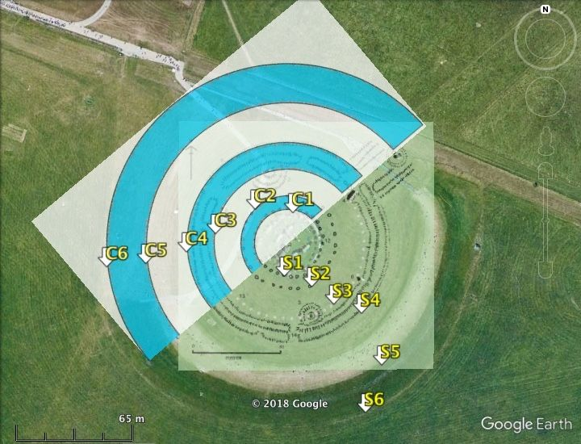
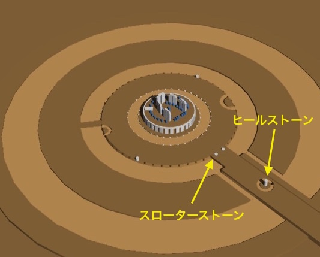
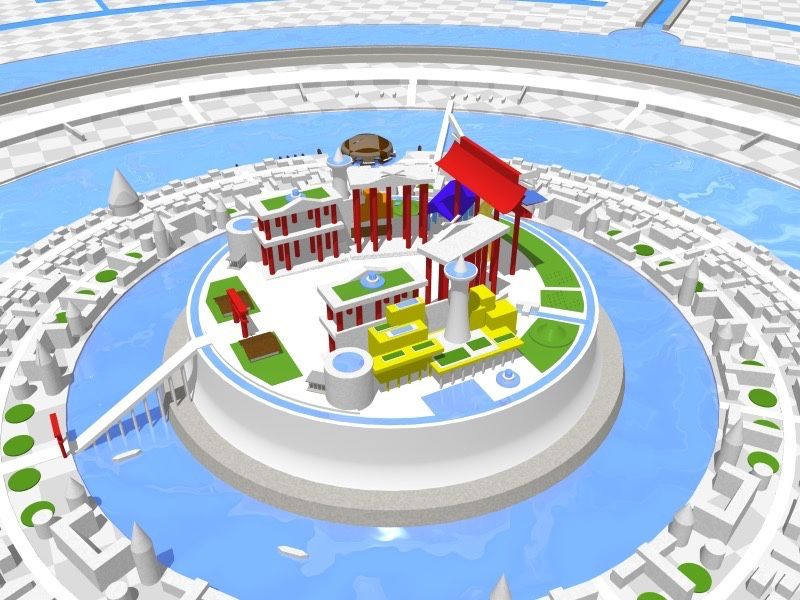
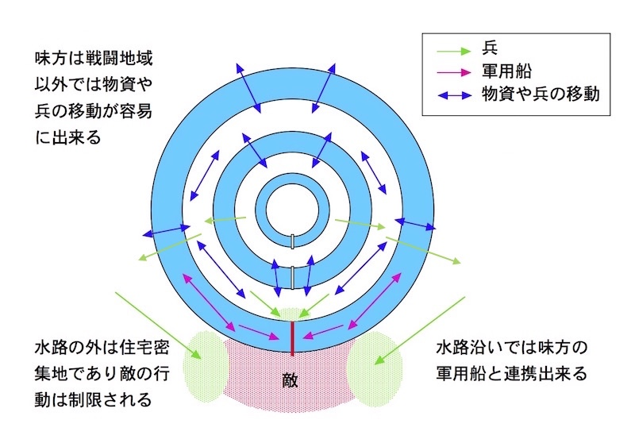

| アトランティスの幻: 現代に蘇る超古代文明 | |
| 庄司義則 | |
| (2014) | |
はじめに
古代ギリシアの偉大な哲学者『プラトン（紀元前427年〜前347年）』は、その著書に魅惑的な伝説を書き残した。それは、「かつて、大西洋に大陸のような巨大な島が存在し、そこに『アトランティス』という大帝国が成立していた。」というものだ。しかも、驚くべき事に、「その強大な国は、ヨーロッパとアフリカを侵略し、ギリシアとエジプトに迫っていた。」という。
そして、最後は、「アトランティスは神の怒りに触れ、突然発生した地震と大洪水により、わずか１日で海に沈んでしまった......」という衝撃的な結末で終わる......。
この謎めいたアトランティス伝説は、多くの人を惹きつけた。１９世紀には、アメリカの政治家イグネイシャス・ロヨーラ・ドネリーが書いた『アトランティス／大洪水前の世界』がベストセラーになり、世界中で大ブームを巻き起こした。その本には、「アトランティス文明こそが欧米文明の起源だ。」と書かれ、無名の冒険家はもちろん、著名な学者や政治家までもアトランティス発見を夢見た。
しかし、古代から現代まで、誰一人としてアトランティスを発見した者はなく、しだいに熱は冷め、プラトンの創作とする説が常識になっていった......。
ところが、２１世紀初頭の日本で、まったく予想外の結果が生み出されていた。インターネットの進歩と、とある人物の無謀で無計画な努力により、なんと、アトランティスの実在を証明する遺跡が発見されたのだ。
しかも、その発見や数多の考察から、アトランティスの痕跡と末裔を探し出す事に成功し、ついには、アトランティス文明の『ロストワールド』までも発見された。奇跡は奇跡を呼び、古代史最大のミステリーと言える『アトランティスの謎』が、世界で初めて克明に解明された！
しかし......、そこで暴かれたアトランティスの真相は、誰もが信じられないと喚く驚愕の歴史であり、青天の霹靂を超える衝撃の真実だった！！！
『アトランティスの真実を知る事は人類の義務である。』
これは、大げさな表現ではない。アトランティスは、ただの古代文明ではなかったのだ。アトランティス文明は、想像を遥かに超える影響を現代に与えていた！
本書には、この超古代文明を蘇らせた『１２の知識』が書かれている。最初から順に最後まで読めば、あなたの前にも「異世界」が現れるだろう......。そして、歴史に消えた古代人の声を聞くかも知れない............
第１章 アトランティスは実在した。
アトランティス、超古代文明、オーパーツ......。これらの言葉に心躍らせた経験がある人は多いだろう。しかし、これらは、どれほど真剣に興味を持ったとしても、実体がつかめない幻のような存在だった。やがて、ほとんどの人は、夢から覚めたように、熱意と興味を失っていった......。
しかし、アトランティス伝説が持つ神秘性は、それでも人々を惹き付け続けた。そして、とうとう、考古学上の『証拠』が発見され、アトランティス伝説がプラトンの創作では無く、史実だった事が証明されたのである。
・証拠は、あの有名な古代遺跡。
アトランティス実在を証明した遺跡......。それは、イギリス南部にある先史時代の遺跡である。その遺跡は、謎の遺跡として世界的に有名で、1986年には世界遺産にも登録されている......。
もう、お分かりだろう。アトランティスが実在した証拠は、なんと！あの『ストーンヘンジ』に隠されていた！
ストーンヘンジ遺跡は、「環状列石（ストーンサークル）」に分類される遺跡で、中央部に高さ6m〜9mの巨石が何本も立ち、その外側を高さ4mほどの巨石がサークル状に立ち並び囲んでいる。作られた目的は、天体観測用に作られたという説がよく知られている。しかし、この説は定説にはなっていない。なぜなら、巨石の位置関係を詳しく調べると、天体イベントとほとんど無関係という事が分かっているからだ。
ストーンヘンジが作られたのは有史以前で、作られた当時の記録は、もちろん何も残されていない。ストーンヘンジが作られた目的は、天文台の他にも、太陽信仰や古代の祭司の礼拝所など諸説あるが、どれも決定力に欠け結論は出ていなかった。
ストーンヘンジは、ストーンサークルとして世界最大級であると同時に、巨石の形と配置に特殊性があり、その異様な光景を見た人は、「いったい誰が何のために、このような遺跡を作ったのだろうか...？」と訝しがり、誰もが遥か遠い古代に思いを馳せるのだった......。
謎の多いストーンヘンジだが、これまで何度も行われた発掘調査により、多くの事が分かっている。ストーンヘンジは、約５０００年前に作られ始め、その後に何度か改築され、約３５００年前に現在のような姿になり、その後も使われ続けていたようだ。
周辺からは、埋葬された人骨が数多く発見されている。さらに、大規模な集会の痕跡がある遺跡も発見された。発掘された人骨を調べる事で、ストーンヘンジに集まった人の出身地がおおよそ分かる。そこからは、遠方から来たと思われる人骨が多数発見されている。彼らは、いわゆる巡礼者だったと考えられているが、その中にはなんと、1,000kmも遠く離れたアルプスの麓から来たと推定される人骨も見つかっている。
これらの状況からストーンヘンジは、遠方からも人を惹きつける『特別な墓地』のような場所で、しかも、一度に大勢の人々が集まる『祭祀的』な意味を持っていた事は確実とみなされている。しかし、祭祀施設だとしても、巨石を並べた理由が大きな謎として残った。巨石は墓標にしては異様すぎ、その配置や形には、何らかの特別な意味があったと考えられていたからだ。
ストーンヘンジは、古代人が何千年も守り続け、遠方まで知られた巨大で特別な祭祀施設である。そのさまは、まさに『聖地』と呼ぶに相応しい。文字を持たず、明確な宗教すら無かったはずの先史時代のヨーロッパ住人を、これほどまでに惹きつけたストーンヘンジの存在意義は、いったい何だったのだろうか？
遠く離れた場所から巨石を運び、不思議な形に並べ、そこで何千年も守り続けた祭祀とは、いったい何だったのだろうか？
この、ストーンヘンジの持つ大いなる謎が古代へのロマンをかき立て、世界中の人々を惹きつけて止まなかった。
・ストーンヘンジに隠されていた秘密とは？
これから、ストーンヘンジに隠されていた『大いなる秘密』を解き明かす。それには、ストーンヘンジの構造の認識が重要である。現在のストーンヘンジの上空写真が（図１左）で、発掘調査によって分かった原型に近い構造の図面が（図１右）である。


図１ 左：上空写真（Google Earthより）、右：発掘調査図（Wikipediaより）
上空写真（図１左）では分かりにくいが、ストーンヘンジには巨石のサークルだけでなく、その外側に石や木や、溝で作られたサークルが、同心円状に幾重にも作られている。発掘調査図（図１右）の、黒い小丸が石が埋まっていた跡で、白い小丸が木の杭が埋まっていた跡になる。木の杭サークルの外側には、地面を掘ったサークル（空堀と呼ばれている）も作られている。
この、ストーンヘンジの幾重もの同心円が、アトランティスの環状運河に極めてよく類似していたのだ！
現在に伝わるアトランティス伝説は、古代ギリシアの哲学者プラトンが書き残した書物から始まっている。そこには、アトランティスの中心部には、３重の環状運河が存在していたと書かれている。この３重の環状運河を簡単な図で表す（図２）。（注 【】内はWikipedia『アトランティス』より引用）

図２ アトランティスの３重の環状運河（水色が運河、白色が陸地）
【アクロポリスのあった中央の島は直径5スタディオン（約925m）で、その外側を幅1スタディオン（約185m）の環状海水路が取り囲み、その外側をそれぞれ幅2スタディオン（約370m）の内側の環状島と第2の環状海水路、それぞれ幅3スタディオン（約555m）の外側の環状島と第3の環状海水路が取り囲んでいた。】
このアトランティスの環状運河を、内側から順に、第１環状運河、第２環状運河、第３環状運河と呼ぶ事にする。
説明を容易にするため、ストーンヘンジの同心円サークルにも名前を付ける（図３）。

図３ ストーンヘンジの同心円状のサークル（Ｓ０～Ｓ４）
Ｓ０ ...............巨石を立てて並べたサークル
Ｓ１ ...............石が埋まっていたサークル
Ｓ２ ...............石が埋まっていたサークル
Ｓ３ ...............木の杭が埋まっていたサークル
Ｓ３' ...............空堀の内縁サークル
Ｓ４ ...............空堀の外縁サークル
ストーンヘンジとアトランティスの環状運河の類似を、二つを重ねた合成図（図３Ａ）を使って説明する。

図３Ａ ストーンヘンジとアトランティスの合成図
・第１環状運河の両岸（Ｃ１、Ｃ２）が、ストーンヘンジの石のサークル（Ｓ１、Ｓ２）と一致している。
・第２環状運河の内岸（Ｃ３）が、ストーンヘンジの木のサークル（Ｓ３）と一致している。
・第２環状運河の外岸（Ｃ４）が、ストーンヘンジの空堀の外縁サークル（Ｓ４）と一致している。
・第３環状運河の両岸（Ｃ５、Ｃ６）に一致するのは、ストーンヘンジの草刈り跡で構造物は無いように見える。しかし、この部分を注意深く調べると、サークル状の地面の段差が存在している（図３Ｂ）。これを（Ｓ５、Ｓ６）と名付ける。

図３Ｂ 地面の段差によるサークル（Ｓ５、Ｓ６）
この地面の段差（Ｓ５、Ｓ６）は、（図３Ａ、図３Ｂ）では少々分かりにくいが、地面の高低差を捉えた特殊な写真（図３Ｃ）を見れば、同心円サークルの一部である事がはっきりと見て取れる。

図３Ｃ サークル状の地面の段差（Ｓ５、Ｓ６）、（ストーンヘンジから北東へ伸びている線は「参道」と呼ばれる遺構、「道路」は現在使われている自動車道路）
この地面の段差（Ｓ５、Ｓ６）は、南側だけに存在しているが、北側に行くにつれ徐々に消えかけているので、かつては完全な円でストーンヘンジを囲んでいたと考えられる。
なお、この地面の段差（Ｓ５、Ｓ６）が、草刈り作業によって出来た可能性は無い。なぜなら、草刈機を使うときは、刈り刃が地面と接触しないように注意し、地面から浮かせて草だけを刈るように作業する。よって、地面が削られる事は無いからだ。
この、今まで誰も注目しなかった、直径が約200mもある巨大サークルが存在する理由を、天体観測説で説明する事は不可能だ。おそらく、世界中の誰も説明できないだろう。
しかし、ストーンヘンジがアトランティスと一致しているという説なら、この誰もが無視してきた消えかけた巨大サークルの存在に、完全無欠な説明が可能である。巨大サークル遺構（Ｓ５、Ｓ６）は、第３環状運河を表すサークルなのだ。
以上のように、ストーンヘンジの６つのサークル（Ｓ１〜Ｓ６）と、アトランティスの３重の環状運河の６つの同心円（Ｃ１〜Ｃ６）は、ほぼ完全な一致を見せている。
６つの同心円という構造が、偶然に相似する確率は極めて低い。ストーンヘンジが、アトランティスと偶然に一致したと考える事は難しい。
次に、この相似形の比率と精度を確認する。ストーンヘンジの明確なサークルの直径を測定し、それを環状運河と比較した（図３Ｄ）。

図３Ｄ Ｓ１、Ｓ２、Ｓ３、Ｓ４の同心円の直径の測定結果（各サークルで４か所を測定して求めた平均値）
プラトンが残した伝説によれば、中心にある島の直径は925m、第１環状運河の幅が185m、内側の環状島と第２環状運河の幅が共に370mであった。よって比率は次のようになる。
- 第１環状運河の内岸（Ｃ１）の倍率 ＝ 925m：39m ＝ 23.7倍
- 第１環状運河の外岸（Ｃ２）の倍率 ＝ 1,295m：53m ＝ 24.4倍
- 第２環状運河の内岸（Ｃ３）の倍率 ＝ 2,035m：86m ＝ 23.7倍
- 第２環状運河の外岸（Ｃ４）の倍率 ＝ 2,775m：113m ＝ 24.6倍
ゆえに、Ｃ１〜Ｃ４の『平均比率 ＝ 24.1倍』
アトランティスの環状運河に対し、ストーンヘンジのサークルは『24分の1』に縮小されている事が分かった。古代人が、12や24という数字を特別視していた事はよく知られている。
しかも、平均誤差は『24.1/24=1.00417』になるので僅か『0.42%』であり、極めて正確に縮小されている。この事から、ストーンヘンジは最初から明確な意図の元に緻密に設計され、高度な技術で計画的に作られた事が分かる。
《補足 現代でも１日が２４時間なのは、古代人がこの数へ拘った所為です。また、著者がコンピューターシミュレーションで実験したところ、６つの乱数を発生させ、これと一致する乱数群が発生する確率は、個々の誤差を±5%とストーンヘンジより多めに設定しても「約20万分の1」でした。これは、0.0005%であり、ストーンヘンジとアトランティスが偶然に一致した可能性は、常識的に考えれば絶対に無いと思われます。》
アトランティス伝説によれば、中心にあった島はアクロポリスで、そこに神殿が建っていたという。ストーンヘンジも、中心部には環状列石と巨石が林立し、神殿をイメージする人も多い。さらに第２環状運河の部分は、ストーンヘンジでも空堀と呼ばれ地面が掘られている。ストーンヘンジは、環状運河という同心円の構造だけでなく、『神殿と堀』という立体的な構造もアトランティスと一致を見せている。
もちろん、これらが全て偶然一致した確率は理論上０ではないが、おそらく、その確率は「1000万分の1以下」になるだろう。つまり、ストーンヘンジとアトランティスが偶然一致した可能性は、論理的に考えれば有り得ないのだ。
・結論。
これまで出てきた情報を整理してみる。
- ６つの同心円の正確な一致。1/24という正確な比率。神殿と堀という構造の一致。これらの一致は、偶然では決して起こり得ない。
- ストーンヘンジが作られたのは、プラトンが生まれるより２０００年も前である。プラトンが書いた書物を参考にしてストーンヘンジが作られた可能性は無い。
- ストーンヘンジ周辺には、埋葬地も多くあった。何千年も継続して祭祀や墓地のような目的で使われ、聖地のような場所だった。
これらから導かれる答えは、たった一つだ......。
『ストーンヘンジは、アトランティスの慰霊モニュメントである。』
多くの人の「信じられない」という感想は理解できる。しかし「常識的に信じられない」という理由だけで否定するのであれば、それは事実から目を背けただけの現実逃避と言えるだろう。重要なのは、信じる信じないではない。重要なのは、己の知性による理解である。ある程度の知識を持つ人ならば、これまでの説明に問題が無い事が容易に理解できるはずだ。
......それでも、まだ受け入れられず、疑念を感じている人も多いと思うので、さらなる情報を提供しよう。一致しているのは、サークルと神殿と堀だけではない。
本書の９章において、ストーンヘンジがアトランティスのモニュメントという説に基づいて、アトランティスのアクロポリスをCGで再現する。そこで最初に作ったCG画像が、ストーンヘンジの復元図（図４左）である。
 
図４ 左：ストーンヘンジの復元図 右：同じ視点のストーンヘンジ
ヒールストーンとスローターストーンは、長らく「謎の巨石」と言われてきた。しかし、ストーンヘンジを元にした再現図（図４左）を見ると分かるが、これらの巨石は、参道を中心（アクロポリス）に向かって進むと「環状島の入口」にあたる地点に置かれている。つまり、ヒールストーンとスローターストーンは、環状島に入るための『門』などを表していると容易に思い至る。ストーンヘンジとアトランティスの関連が発見された事で、ヒールストーンの謎も、あっけないほど簡単に解けたのだ。
ストーンヘンジで特徴的なのは、巨石とサークルだが、サークル状の痕跡は環状の運河を表し、巨石は重要な建造物を表している。このモニュメント説によって、ストーンヘンジの、ほとんど全ての構造が説明可能になる。
つまり、中心部に林立する巨石群は、多くの人の印象通りに神殿を表していると考えられる。よって、アトランティスのアクロポリス上には、馬蹄形に配置された神殿群があった！という結論が導かれる。これは、歴史を揺るがす大発見であろう。
《補足 ストーンヘンジ遺跡の構造は、ほぼ全てがアトランティス伝説と見事な一致を見せています。しかし、ただ一つだけ、空堀の内縁サークル（Ｓ３'）がどこにも一致していません。ただこれは、すぐ内側に木の杭サークル（Ｓ３）がある事から、空堀が中途半端に埋まった結果だと考えられ、一致が無くとも問題無いと考えています。》
重要なので、もう一度言おう......。
プラトンが書き残した伝説と、まったく同じ形の縮小モニュメントが、年代も距離も遥か遠く離れたイギリスに存在すると言う事は、プラトンが生まれる２０００年以上も前に、プラトンが書いた伝説とまったく同じアトランティスの情報が、イギリスにも存在していた事を意味する。
この事実は、『アトランティス伝説はプラトンの創作では無い。』という事を完全に証明している！
しかも、ストーンヘンジは、何千年も使われ続け、遥か遠くからも巡礼者を集めていた巨大な祭祀施設であった。これは、古代人がストーンヘンジに対し、強い畏敬の念を持ち、深く崇拝していた事を意味する。つまり、古代人はストーンヘンジに対し、伝統的に『偉大な存在』を感じていた。
偉大な存在として思い浮かぶのが、超自然的な『神』だ。それは、自然現象や人や動物などの形で表される例が多い。しかし、ストーンヘンジが具現化していた物は、アトランティスの中心を象徴する『都市モニュメント』である。
つまり、ストーンヘンジで崇拝されていたのは、アトランティスという『国の記憶』なのだ！
もはや、ストーンヘンジは謎の遺跡ではない。巨大なストーンヘンジ遺跡そのものが、アトランティスが実在した事を完全に証明する『考古学的証拠』だったのだ。
------------本書から、最初に出て来た知識は、ストーンヘンジの本当の姿だ。この発見により、アトランティスが実在した事が、世界で初めて『証明』された事になる。
《補足 ストーンヘンジとアトランティスの一致は、要はデザインが類似しているか否かの問題なので、たとえ素人でも直感的に正しく判断できるはずです。しかし、ほとんどの人は権威ある学者の言葉を鵜呑みにし、まるで宗教のように信じ込み、自分の目も思考も否定します。その姿はまるで、童話『裸の王様』に出てくる人々のようです......。
できる事なら、本書を最後まで読み、自分の知性で判断し、間違いだらけの「常識の壁」を壊して欲しいと思います。》
第２章 アトランティス大陸も実在した。
アトランティス伝説が書かれているのは、プラトン晩年の著書『ティマイオス』と『クリティアス』の二書である。ティマイオスでは、対談形式で話が進められる中で、エジプトの神官から聞いた話として、アトランティス伝説が最初の方に少し登場する。クリティアスでは、同様に対談形式で始まるが、ほぼ全編がアトランティス伝説の紹介という一風変わった短編作品である。しかも、最後は「（ゼウスは）神々が集まるとこう言った......」と書かれるが、続くゼウスの言葉が無く、未完と考えられている。
プラトンは、この対談が行われたとされる時期は、まだ幼少（６歳？）と考えられている。よって、対談に同席し、全てを暗記し、晩年になり思い出して書いたとは到底考えられない。また、登場人物がクリティアス家に同時に集まった可能性も、ほとんど無いとされている。つまり、対談の形式をとっているが、実は架空対談で、二書ともプラトンが創作した作品というのが定説になっている。
・アトランティス伝説の情報源は？
このプラトンの二書が架空対談である事は確実だが、登場する人物は実在した人物で、名前も経歴ももちろん史実で、対談に出てくる国や街も実在している。そこに登場するアトランティス伝説はというと、これまではプラトンの創作と思われていた。しかし、ストーンヘンジの再発見により、創作では無かった事が証明された。
つまり、プラトンは、実在した有名人物と実在した古代国家の伝説という「実在の素材」を組み合わせる手法で二書を作り上げていた事になる。プラトンは小説家ではないので、このような手法をとる事は理に適っている。
登場人物は歴史上の人物であり有名人なので、特別な情報源は必要なかったと思われる。しかし、アトランティスの伝説に関してはそうはいかない。アトランティスを伝える文物は、プラトンの著書以外はほとんど存在しない。プラトンは、どうやってアトランティス伝説を知り得たのだろうか？
アトランティス伝説の情報源になったのは、口承か文字の二択になるだろう。プラトンが書いたアトランティス伝説には、詳しい数字が多く書かれ、詳細な描写も多い。これらが、口承で伝えられていたと考えるのは困難だ。吟遊詩人のような口承伝承が情報源であれば、関与する人が多くなり、多数の伝説がもっと世界各地に残されたはずである。
また、神官などによる閉鎖環境による口承伝承も考えられるが、このような神官がプラトンだけに情報を話すのも不自然だし、このような秘密結社のような組織がイギリスとギリシアに存在していたと考えるのも無理がある。イギリスとギリシアでは、あまりにも歴史や文化や年代が違いすぎるのだ。
つまり、プラトンが参考にした情報源は、あまり読まれていないが閲覧が可能な文字記録だった可能性が高いという結論が導かれる。
作中によれば、アトランティス伝説は、古代エジプトに「手に取る事のできる文書」として残されていたという。それを、古代ギリシアの政治家ソロンが書き写してギリシアに持ち帰った。ただし、その際に固有名詞などをギリシア風に翻訳し直したとされている。その書き写した文書が、ソロンの遠縁の親戚であるクリティアス家に残されており、クリティアス自身が暗記したその内容を、自宅で披露する形式で架空対談が行われている。
この作中の説明のように、アトランティス伝説が書かれた文書が、実際にクリティアス家に有ったとすると多くの疑問が氷解する。本のタイトルにもなっている登場人物のクリティアスは、プラトンの曽祖父である。プラトンは子供時代にクリティアス家を訪問し、このような政治対談を目にし、アトランティス伝説も耳にしていた可能性は十分にあるだろう。
ストーンヘンジと完全な一致を見せた環状運河の詳しい描写と正確な数字は、正確な情報源を参考にしないと書く事は極めて難しい。ゆえに、アトランティス伝説は、口承伝承が元になった可能性は極めて低い。また、アトランティス伝説が本物と証明された以上、入手経路を疑う理由も無くなっている。
当時、最古の文明の残渣がエジプトに残されていた。古代のアレクサンドリア図書館には、70万巻もの膨大な文書が所蔵されていたという。現代に残されていない未知の文書が、古代エジプトに有ったとしても何も不思議ではない。
アトランティス伝説の情報源は、作中の説明の通り、クリティアス家に残されていた「実在した文書」であったとするのが最も妥当である。エジプトにあった『アトランティス文書』が、ソロンにより翻訳されてギリシアに渡り、その『翻訳版アトランティス文書』が仲間内で紹介され、その文書を親族だったプラトンが入手し、自著に引用して書いたと考えるのが最も論理的な結論だと言える。
晩年になったプラトンは、子供のころ聞いたアトランティス伝説を思い出し、自分の作品に組み込んだ可能性が高い。そして、それが書かれた文書を入手した事が、全編がアトランティス伝説という奇妙な『クリティアス』を書く動機付けになった可能性も考えられる。
本書が、アトランティス伝説がプラトンの創作では無かったと証明した。それは同時に、アトランティス文書が実在した事の証明にも繋がった。これは、アトランティス伝説が、歴史学で言うところの『第一級史料』に大変身した事を意味する。これから「アトランティス伝説」と書いた場合は、世間に数多くあるアトランティス伝説の総称ではなく、プラトンが書いたアトランティス伝説の事を意味する。
《補足 プラトンはギリシア政治をテーマにして著作しているため、伝説が改変されている可能性は否定できません。アトランティス伝説が、より正確な一次資料ではない事にも留意が必要です。》
・大陸に近いという「アトランティス島」は史実なのか？
アトランティス伝説の大きな謎の一つが、大陸に匹敵するという巨大な島が存在した場所である。一般的に、伝説のアトランティス大陸は、１万年以上前に大西洋の中央に存在した巨大な島と理解されている。
しかし、最近の科学の発展により、大西洋に巨大な島が有った可能性は完全に否定されている。よって、アトランティス大陸も、完全に否定されてしまったと考える人がほとんどだ。その結果、アトランティス伝説を肯定的に捉える人も、アトランティス伝説を誇張だと考え、地中海の小島などを候補地にしていた。
また、似たような伝説にムー大陸がある。これも太平洋の中心に大陸と呼べるような巨大な島が存在し、そこに高度な文明が存在したという伝説だ。しかし、太平洋に巨大な島が有った可能性も、科学的に明確に否定されている。それゆえ、アトランティス大陸やムー大陸は、空想と決め付けられて同列に語られ、偏見に満ちたオカルト扱いを受け、時に嘲笑すらされていた......。
ところが、ストーンヘンジの再発見により状況は一変した。アトランティス伝説がプラトンの空想では無く、史実を伝える第一級史料である事がはっきりしたのだ。よって、大陸のような巨大な島が、実際に大西洋に存在していた可能性が否定できなくなったのだ。
《補足 ２０１３年にブラジル沖の海底で、日本の『しんかい6500』という潜水艦により「大陸のかけら」が発見されました。それは「アトランティス発見？」と、マスコミで大きく報道されました。しかし、それが沈んだのは約２０００万年前で、アトランティス伝説と年代が大きくかけ離れています。よって、この発見はアトランティス大陸とは無関係です。》
・海に沈んだ広大な陸地が存在していた。
アトランティス伝説には、大西洋に大陸のような巨大な島が存在したと、はっきり書かれている。しかし、現代では、大西洋にこのような巨大な島が存在した可能性は、科学的に完全に否定されている。この二つの命題は、完全に矛盾し永遠に解決できないようにみえる............
......そこで、発想を変えてみる。アトランティスが沈んだのは、約１万２０００年前とされている。この時代は「最終氷期」の末期にあたり、現在より海面が120mも低かった事が分かっている。ここに、アトランティス大陸の謎を解明する手掛かりがあるかも知れない。
人類が、約７万年前にアフリカ大陸を脱出し、何万年も掛けて世界中に拡散したという事が、最新の遺伝子研究で分かってきた。海は多くの恵みをもたらしてくれる。海岸は人類が定住するに適した場所である。最終氷期の人類も、海岸付近で何万年も生活していたと考えられる。最終氷期には、今は海になっている所に、広大な陸地が存在していた。そこに、人類の重要な生活拠点があった事は確実だ。
海面上昇が始まったのは、約１万５０００年前からであり、約１万年前に急激に海面が上昇した。これは、アトランティスが滅亡したとされる年代とほぼ一致する。つまり、アトランティスが、この海面上昇により沈んでしまった場所に存在していた可能性が、十分すぎるほど考えられる。
《補足 日本の県庁所在地で標高が120mより高いのは、長野市、甲府市、山形市、盛岡市、宇都宮市の５県だけです。つまり、現代に同様な海面上昇が発生すれば、残り４２都道府県の県庁と街が完全に水没します。東京や大阪であれば、水深100mの海底に没し影も形も残りません。そこに大都会があった事など、誰も想像つかないでしょう。
世界を見回しても、主要な都市の標高は、ワシントン18m、パリ35m、ロンドン24m、ベルリン34m、モスクワ156m、ローマ20m、トロント77m、北京44mです。モスクワ以外は全て120m以下です。都市だけでなく、沿岸部には港や飛行場や発電所など重要な施設が数多く有ります。当然これらも全て海底に没し完全に消滅します。120mもの海面上昇の影響は極めて大きいと言えます。》
・滅亡伝説は史実なのか？
アトランティス伝説によれば、アトランティスの首都は、大西洋に面しており繁栄を極めていたという。そして、アトランティスは大西洋を越え、ヨーロッパやアフリカに戦争を仕掛けていた。それが突然の天変地異により、たった１日で海に沈み滅亡したと伝えられている。
これまでは、これらはプラトンの創作で空想だと思われていた。しかし、アクロポリスの記録は極めて正確だった。よってこの滅亡伝説も、正確な史実を伝えている可能性が高まった。
しかし......、大陸のような巨大な島が、僅か１日で海に沈むという現象は、単なる海面上昇では説明が付かない。海面は、何千年も掛けて120m上昇している。もし、滅亡伝説が史実であれば、他の要因があった事になる。
実は、アトランティス大陸を滅ぼすような大洪水は、まったく可能性が考えられない訳ではない。最終氷期の末期は、海面が120mも低下していたが、その減った水は、もちろん地球から消えてはいない。減った分の水は、氷として陸地に積み重なっていた。海の水が水蒸気になり、それは雲となり上空を流れ、雪になって陸地に降り積もった。それが寒冷化の影響で、溶けずに何万年も積み重なった。その結果、最終氷期では、巨大な氷の山岳地帯が形成されていたのだ。
北米大陸の北部も、分厚い氷で覆われていた。これは「ローレンタイド氷床」と呼ばれ、現在は溶けて消滅しているが、その広さは現在のカナダ全域よりも広く、その厚さは最大で、なんと5,000mに達していたと推測されている。もちろん、ヨーロッパ北部も氷床に覆われていた。その氷床の名残は、今もグリーンランドに残っている。最終氷期末期は、陸地に膨大な氷が堆積し、その結果、海面が120mも低下していたのである。
やがて氷期が終わり、温暖化により氷が溶けた。その水が海に流れ込む事で、今度は逆に海面が上昇した。何も問題ないようだが、この過程で重大な事象を引き起こす可能性がある。この溶けた水が、すぐには海に流れずに、貯まって湖になる事が多々ある。この湖が巨大化し決壊する事で、大規模な洪水を引き起こす事例があるのだ。この湖は『氷床湖』とも呼ばれており、氷床の上に出来る事が多いが、氷床内部に出来る事もある。
カナダ西部に流れるミズーリ川では、古代に氷床湖が決壊し、高さ100mの洪水となって流れた事が地形から分かっている。しかも、このような氷床湖の決壊による洪水が、何度も繰り返し発生した事が分かっている。
北米大陸に積み重なっていた分厚い氷は、富士山より高く、カナダ全域を覆うような文字通り地球規模の巨大な物だった。そこに想像を超えるような、巨大な氷床湖が形成された可能性は否定できない。なにしろ、アメリカとカナダの国境地帯に有る五大湖のいくつかは、氷床湖の決壊によって誕生した湖なのだ。
北米大陸に存在した「巨大氷床湖」が決壊したとすれば、地形の関係で膨大な水が大西洋に流れ込む。つまり、古代の大西洋で、地球規模の大洪水が発生した可能性は、科学的にも裏付けが可能で誰も否定できないのだ。
《補足 最終氷期末期の北米大陸に、超巨大な湖が存在したという学説は、あまり注目されませんが実際にあります。この湖は「アガシー湖」と命名され、実在した事は地質学的に証明されています。その大きさは、黒海に匹敵！していたという説が一般的ですが、さらに巨大だった可能性も否定できません。そして、このアガシー湖の大規模決壊が、約１万３０００年前（アトランティス滅亡時期と一致）と約８２００年前に起こったという学説も存在します。》
・アトランティス大陸が見つかった！
アトランティス伝説によれば、大西洋に存在する大陸と呼べるような巨大な島にアトランティス帝国が存在した。アトランティス帝国は、強大な軍事力を誇る帝国で、その首都の中心には３重の環状運河があり、海に繋がる運河を通って巨大な船が中心部まで航行する事が出来た。そして、中心にあるアクロポリスには、巨大で豪華な神殿が存在し、見る者を圧倒していたと伝えられている。
しかも、島の中央部には広大な平原が存在し、そこからは年２回作物が収穫できたという。その穀倉地帯の広さは、幅が550kmもあり、そのエリアは６万の小区画に分割され、有事の際は一つの小区画から20人の兵士が召集可能だったという。つまり、このエリアだけでも120万人の軍勢になる。アトランティスには10のエリアが有り、10人の王がいたと伝えられている。国全体での総兵力は、都市部からも召集可能と思われるので、500万人は軽く超え1000万人すら超えたかも知れない。一国のみでこれほどの兵力を集められる国家は、古代どころか現代でも存在しない。アトランティスが伝説通りだとすれば、人類の常識を遥かに越えた超巨大帝国だった事になる。
しかし、この規模の大きさこそが、アトランティスを「有り得ない！」と断じさせ、プラトンの創作だと決め付けられる大きな要因でもあった。もちろん大西洋には、そんな巨大な島が存在した痕跡はまったく無い。では、前述した海面上昇で沈んだ陸地ではどうだろうか？
現在そこは、大陸棚と呼ばれる海域になっている。しかし、Google Earthなどで大西洋周辺の海底地形を探してみても、そこまで広大な土地は、どこにも見当たらない............
やはりアトランティス大陸は、プラトンの空想だったのだろうか......？
............とまあ、従来であればここで終わりだった。優れた知識人たちも、思考停止を余儀なくされていた。しかし、今は、ストーンヘンジというアトランティスが実在した確かな証拠がある。しかも、ストーンヘンジを見ても分かるように、プラトンが書き残した伝説は極めて正確だった。よって、大西洋のどこかに、必ず大陸のような巨大な島が存在したはずなのだ！
しかし、そのような大きな島が大西洋に存在した痕跡は、地図にも科学的にも無い。絶対に無い......。
まさに堂々巡りである。答えは無いのだろうか？
この矛盾を解くには、プラトンが書き残した伝説を信頼し、先入観を捨て、そのまま受け入れる事。これが重要な鍵になると思われた。
そうして、改めて世界地図を見渡す......。すると、ジブラルタル海峡の先の大西洋に「巨大な島」が見つかった......。
......そう、それはアメリカ大陸だ。
まず、南米大陸をアトランティスと仮定してみる。広大な平原に一致するのは、アマゾン川流域になる。１辺が550kmもある広大な平原は問題なく当てはまる。大陸の奥に高い山が有ったという記述も、アンデス山脈やギアナ高地が当てはまる。大陸に近い巨大な島というのも、まったくその通りである。
アトランティスの首都が有った場所は海に面し、そして、巨大な運河に囲まれていた。運河は、船を使った輸送をするために作る場合が多い。よって、アトランティスの運河も、水運に使われたと考えられる。しかし、なぜアトランティスの首都に大きな運河が必要だったのだろうか？ 水運がそんなに重要だったのだろうか？
南米の地図を改めて良く見ると、世界最大の河川であるアマゾン川が、広大な平原に網の目のように流れている。アマゾン川に船を浮かべ水上輸送をすれば、大量輸送が可能な物流網が、極めて容易に構築できる事に気付く。そして、その物流の中心は、国中からの水路が一つに集まるアマゾン川河口が最も適している。
つまり、河口に首都が有れば、広大な平原を繋ぐ大規模な水路が自然に出来上がる。そう考えると、伝説の首都を取り巻いていた大運河の存在も納得できるものになる。広大な平原、そこで収穫される膨大な農産物、網の目のような川、河口の首都、巨大な環状運河、その全てが極めて合理的に繋がるのだ。
なお、北米大陸にも大河と平原が有るが、アトランティス伝説では、年に２回収穫できたと書かれている。これは氷期で寒冷化していた北米大陸では不可能だろう。しかも、氷床が北部を覆っていた。よって、北米大陸は候補地にはならない。
南米のアマゾン川流域であれば、赤道直下であり、氷期であっても、年２回の収穫は十分可能だったと考えられる。
つまり、アトランティス大陸とは南米大陸そのもので、アトランティスの首都は、古代のアマゾン川の河口付近に有ったという仮説が導き出される。アトランティスが南米大陸であれば、プラトンが書き残した伝説と、国土の規模も地形も自然も全て一致し、矛盾なく完全に説明が付くのだ。
ストーンヘンジが、アトランティスの実在を証明した。それは同時に、アトランティス伝説が正確な史実という証明にもなった。もはや、アトランティス伝説を都合よく解釈し、数字や場所を恣意的に捻じ曲げた説は成り立たない。
つまり、地中海の小島や、ヨーロッパ沿岸やアフリカが、アトランティス候補地になる可能性は完全に消えたのだ......。
ゆえに、アトランティス候補地が、たった一つに絞り込まれる。
『アトランティス大陸とは、南米大陸そのものである。』

図５ アトランティス大陸の地図（この地図はNOAAで公開しているデータを使い海面を120m下げている）
南米には、多くの謎が隠されている。 近年になり南米のアマゾン奥地から、常識を覆すような遺跡が発見された。南米アマゾン文明と呼ばれ、ボリビアのモホス平原に、数千を越すロマと呼ばれる丘と、それらを繋ぐ道と溜め池が見つかった。アマゾン川の氾濫を上手に利用した農業を行い、アマゾン文明研究家の 実松克義氏によれば、最盛期には1000万人！ぐらいの人口が居たと推測されるそうだ。これは、古代エジプト文明すら凌駕する規模だ。
また、南米に人類が到達したのは、約１万３０００年前という説が一般的に信じられている。しかし、世界遺産に指定されているブラジル中央部の「セラ・ダ・カピバラ国立公園」には、３万〜５万年前の岩絵が多数残されている。これが何を意味するかというと、５万年前 の 南米に人類がいたという事実だ。南米こそ、アトランティスの謎を解く重要な鍵 になる だろう。
------------２番目に出て来た知識は、アトランティス大陸の地図だ。そこは伝説の通り、大西洋に存在する大陸のような「巨大な島」だった。
《補足 約１万２０００年前 は、海面が120mも下降していたため、北米大陸がユーラシア大陸と陸地でつながり、アフリカ大陸もユーラシア大陸とほぼ一体化していました。つまり、当時の地球には、北米からアフリカまでつながる巨大な一つの大陸が存在していました。
よって、相対的にかなり小さい南米は、大陸とはみなされず島と呼ばれたのだと思います。もちろん、オーストラリアも島と見なされていたでしょう。》
第３章 伝説の大洪水は史実だった。
アトランティスは実在し、アトランティス大陸も見つかった。しかし、ここで疑問が浮かぶ。なぜ、このような大陸に近い巨大な島に栄えた大帝国が滅亡し、なぜ誰も覚えてないほどに、跡形もなく消えて無くなってしまったのだろうか？
アトランティス伝説によれば、地震や洪水などの天変地異に襲われ、たった１日で海に沈んだと伝えられている。この滅亡伝説は衝撃的だと言えるが、今までこのような出来事は史実とは考えられず、アトランティス伝説も極端な誇張や創作だと思われていた。しかし、何度も言うようだが、プラトンが書き残した伝説は正確だった。よって、この信じられない滅亡伝説も、史実を伝えている可能性が極めて高い。
前章において、アトランティス滅亡は、海面上昇と氷床湖決壊による大洪水によって引き起こされた可能性に触れた。しかし、それはまだ証拠のない仮説に過ぎない。また、南米大陸は今も残っており、この大陸を丸ごと滅ぼすような大洪水が、実際に有り得るのかという疑問も当然ある。
この章では、アトランティスを襲った大洪水を科学的に考察し、しかも証拠を提示し、南米大陸を全滅させた大洪水が史実だった事を証明する。
・氷床湖の決壊と環境への影響。
巨大な氷床湖が決壊すれば、膨大な「冷たい真水」が海に流れ込む。その影響の一つとして考えられるのが「寒冷化」である。実際に、ヤンガードリアス期という急激な寒冷化が、約１万２０００年前に発生している。これは、巨大氷床湖の決壊と大洪水が、実際に発生していた可能性を示唆する。
《補足 ヤンガードリアス期は、暦年代で1万2900年前--1万1500年前、放射性炭素年代で1万1000年前--1万年前とされている。（wikipediaより）》
古代の寒冷化に注目してみると、氷床コアなどの分析によれば、急激な寒冷化は、約１万２０００年前だけでなく、約８０００年前、約６０００年前にも発生しているようだ。ともかく、約１万５０００年前から約６０００年前までは、想像を絶するほどの気象変動があった時代だった（図１５）。

図１５ 紀元前２００００年～現在までの気温変動（ブライアン・フェイガン著『古代文明と気候大変動』より）
シュメール文明やエジプト文明など、世界各地で文明がみられるようになったのは約６０００年前からで、この文明勃興の時期は、地球の気候が安定し始めた時期と極めて良く一致する。
しかし、この初期の文明は、約４２００年前に突然崩壊した。エジプト文明やシュメール文明は、国が消えるほど急激に衰退し、長江河口文明やモヘンジョダロも同時期に滅亡した。日本でも、ほぼ同時期に縄文の大集落だった三内丸山遺跡が放棄されている。
三内丸山遺跡では、寒冷化が集落放棄の原因になった事が発掘調査から分かっている。しかも、単純な寒冷化が原因では説明が付かないほど、急激に衰退し極めて短期間で放棄された事も分かっている。
この、約４２００年前の世界的な文明衰退には、寒冷化以外にも気になる伝説や事象が見られる。シュメール文明、長江河口文明、モヘンジョダロに共通して、洪水伝説や洪水があったと見られる痕跡が残されているのだ。つまり、洪水と寒冷化と文明崩壊が、深く関係していた可能性が浮かび上がってくるのだ。
《補足 約４２００年前の（図１５）で読み取る事ができないほどの寒冷化でも、国家の滅亡と文明衰退という大きな被害を世界各地にもたらしています。これ以前の大規模な気候変動が、人類にどれほど重大な影響を与えたのか、その深刻さが容易に想像できます。》
・シュメール文明崩壊と洪水。
古代シュメール文明の遺跡から、くさび形文字の書かれた粘土板が大量に見つかっている。その中から「洪水と塩害により農業が衰退した」と書かれた粘土板が発見された。この洪水は、一般的には河川の氾濫だと理解され、シュメール文明衰退の原因になったとされている。
しかし、河川の氾濫による洪水であれば、増水した川の水は耕作地の塩分を溶かして流れ、逆に塩害が解消される。古代エジプト文明は、ナイル川の両岸に発展した文明である。ナイル川は毎年氾濫し洪水を引き起こしていた。このナイル川の氾濫が、耕作地を肥沃にし塩害を防止していた。現在は上流にダムが出来た事で氾濫が解消されたが、逆に塩害の被害に悩まされるようになっている。河川氾濫では塩害は発生しない。これは、極めて明白な事実なのだ。
シュメール文明は、現在のイラクに存在していた。そこは広大な平野であり、仮に河川が氾濫しても、増水した水は幅数百キロもある平原に広がり、浅くゆっくり流れる。つまり、水位は上がらないし大きな破壊力も生まれない。よって、伝説に残るほどの被害が出ない。それどころか、河川が氾濫すれば塩害が解消され土地も肥沃になる。
シュメール文明を衰退させた洪水伝説には、河川の氾濫と真逆の現象がはっきりと書かれている。つまり、シュメール文明が衰退した原因だった洪水は、河川の氾濫ではなかったと結論付けられる。
シュメール文明を襲った洪水が、河川の氾濫でなかったとすれば、その洪水が津波であった可能性が浮かび上がってくる。大規模な津波であれば、海岸線に近い広大な平原でも大きな破壊を引き起こす。津波が去った後も、深刻な塩害が確実に発生する。粘土板に書かれていたように、洪水（津波）と塩害によって、農業は広範囲で駄目になる。つまり、シュメール文明を衰退させた洪水は、河川の氾濫ではなく、津波であった可能性が極めて高いのだ。
そして、ペルシャ湾の最奥に位置するシュメール文明が津波に襲われていたのであれば、ペルシャ湾の出口の外海に位置するモヘンジョダロを襲った洪水も、実は津波であった可能性が出てくる。長江河口文明にも洪水の痕跡が見つかっているが、中国では長江河口文明衰退後に黄河中流域が文明の中心として発展する。古代エジプト文明でも、同時期にナイル川河口に近いメンフィスから、ナイル川中流のテーベに王国の中心が移動した。世界各地の古代文明が、大河の河口域から中流域に移動したのは、津波の被害に遭い更なる被害を恐れたからだとすれば、これも腑に落ちる。
三内丸山遺跡の放棄も、寒冷化が原因にしては急激すぎ、他の要因もあったと考えられている。三内丸山集落が津波に襲われたのであれば、栗園が津波に襲われて倒れ、さらに塩害で栗の木が広範囲で一気に枯れたかも知れない。三内丸山が短期間で放棄された原因を、より的確に説明可能になる。
これらの事から、約４２００年前に世界各地の文明が同時に衰退し、文明中心が移動した原因は、世界規模の津波が発生した事で、津波の直接的な被害と寒冷化という副次的な被害によって引き起こされた可能性が高いという仮説が導き出される。
・世界に残る洪水伝説。
洪水伝説は、世界中に存在している。その中で特に有名なのが、旧約聖書の『ノアの箱舟』神話だろう。旧約聖書を書いたユダヤ人の祖先は、約４０００年前に洪水伝説の残るシュメール文明の地（メソポタミア）から古代パレスチナに移住した。これまでは、ノアの箱舟神話のような地球規模の大洪水は、絶対に有り得ないというのが常識だった。確かに、地球上の水の量が急激に増加し、それが原因で地球規模の洪水になるという現象は科学的に考えられない。
しかし、津波なら話は別である。巨大な氷床湖の決壊が大規模な津波を誘発し、その津波が世界中を襲う可能性は十分に考えられる。シュメール文明では、津波を洪水と言い表していた。日本のように、津波と洪水を区別する国は、世界でも珍しいのだ。ノアの箱舟神話は、実は巨大津波の伝説かも知れないのだ。
海に沈んだとされるアトランティスも、巨大津波により僅か１日で沿岸部の都市が壊滅し、さらに海面上昇により都市が水没した可能性が考えられる。
アトランティス伝説には、ギリシアの政治家ソロンと、エジプトの神官が語った洪水の歴史が書かれている。そこには、デウカリオンの災害が最も新しく、さらにそれ以前に大洪水が３度あったと読み取れる内容が書いてある。
【ソロンは賢者としてエジプトのサイスの神殿に招かれた。そこでソロンは、デウカリオンの洪水伝説で始まる人類の歴史の知識を披露する。すると神官たちの中より非常に年老いた者が言われた「おおソロンよ、ソロン。ヘレネス（ギリシア人）は常に子供だ。（略）......エジプトではそれよりも古い記録が完全に残っており、デウカリオン以前にも大洪水が何度も起こったことを指摘する。】
【......アテナイのアクロポリスも遥かに広い台地であったが、デウカリオンの災害から逆算して三つ目に当たる彼の大洪水により多くの森が失われ、泉が枯れ、今日のような荒涼とした姿になってしまった。】
もしかすると「デウカリオンの洪水」とは、古代人の記憶に最も鮮明に残っていたであろう約４２００年前の津波を意味しており、そこから３つ前の「彼の大洪水」とは、大規模寒冷化があった、約６０００年前、約８０００年前、そして約１万２０００年前となり、アトランティスを滅ぼした大洪水を指すのかも知れない。
アトランティス伝説や古代の気象変動、シュメール文明や三内丸山遺跡などから、大洪水が史実であり、それが巨大津波であったという仮説の信憑性が高まってきた。そこで、ダメで元々と巨大津波の痕跡を探してみた。
............すると、確かに存在していた。最初に巨大津波の証拠が見つかったのは、なんと日本だった......。
・巨大津波の証拠、豊予海峡の海底地形。
四国と九州の間にある豊予海峡（図６）の海底に、巨大津波の痕跡が存在していた。

図６ 豊予海峡
豊予海峡は、四国の佐多岬と九州の関崎に挟まれた幅14kmほどの海域である。この海底に、地元の人が『海釜（かいふ）』と呼ぶ深い窪みが存在する。この海底地形を分かりやすくするため、最終氷期の海面である水深120mを境に色分けした（図７－１）。

図７－１ 豊予海峡の海底の地形（水深120mより深い部分が薄い色、さらに±50mまで10mごとに色を変化させた）
最終氷期は、地点（Ａ）も（Ｂ）も陸地だった。ところが、地点（Ｃ）とその両側だけ深い窪みになっている。この窪みが海釜と呼ばれている。この海釜は異常なほど深く、最も深いところで瀬戸内海側が水深約400m、太平洋側が水深約300mにもなっている。
海釜は海峡部（Ｃ）を中心にして、瀬戸内海側と太平洋側の両側が大きく窪んだ対称的な地形になっている。この深い窪みは、豊予海峡を流れる海流が原因で出来たとされている。しかし、流れがもっと速い関門海峡や鳴門海峡には、このような深い窪みが存在しない。
また、通常の海流による浸食であれば、流れが最も速い部分が最も侵食されるはずである。しかし、海流が最も速い海峡部（Ｃ）は、なぜか浅い（図７－２）。

図７－２ 豊予海峡の断面（Ａ−Ｃ−Ｂ）の水深（Google Earthで水深測定）
最も大きな浸食を受け、最も深くなっているのは、海流が最も速い海峡部（Ｃ）では無く、その両側の数kmも離れた場所である。これは、かなり異常な現象だと言える。海流がずっと遅くなる部分が最も深いという現象は、海流による浸食という一般的に信じられている説では、どう考えてもまったく説明が付かない。海流浸食説は、科学的に成り立たないと断言できる。
《補足 海流の速度（Ｖ）は、海水の流量（Ｑ）が一定なので、流路の断面積（Ｓ）に反比例します。この関係式は（Ｖ＝Ｑ／Ｓ）で表されます。海釜の一番深い所は、海峡部と比較して水深が約2.5倍、幅が約2倍です。つまり、最深部の海流の速度は、単純計算で海峡部の1/5程度になります。そして、浸食を引き起こす海流の運動エネルギーは速度の２乗に比例するため、最深部の海流が持つ浸食エネルギーは、海峡部の1/25にしかなりません。》
海流が原因でないとすると、地殻変動が考えられる。しかし、佐田岬半島や関崎は、日本列島を貫く断層「中央構造線」で連続しており、断層が隆起して出来た地形である。この事から、海釜が地殻変動による窪みでない事は明白である。
海釜は、何かに浸食されて形成された地形だと考えられるが、海流や風雨や川が原因で、この深い浸食を説明する事は不可能である。海峡から4kmも離れた海底が、深さ400mまで浸食される自然現象は、どう考えても有り得ないのだ。
普通の人は、ここで思考停止するだろう。海釜がどうして出来たかなど、試験にも出ないし話題にもならない。通説のように、豊予海峡の速い海流が原因で海釜が出来たと信じて疑念を抱かず、何も考えない方が平和なのだ............
もう、お気付きと思うが、この海釜は巨大津波による浸食で形成されたとすると、実に簡単明瞭に説明できる。これから、この仮説に基づき海釜の形成過程を説明する。
(1) 最終氷期は、海面が約120m下降していた。瀬戸内海は陸地で、豊予海峡も陸地だった。海釜はまだ無く、佐田岬と関崎は峰続きだったと考えられる。
図８－１ 最終氷期の豊予海峡
(2) 最終氷期の豊予海峡を、巨大津波が襲った。膨大な海水が太平洋側から押し寄せ、峰の低い部分を越えて瀬戸内側に滝のように流れた。その結果、瀬戸内側の地面が大きく浸食され、巨大な窪みが形成された（図８－２）。

図８－２ 太平洋側から巨大津波に襲われた豊予海峡
(3) 津波には周期性がある。そのため引き波の時は、逆に瀬戸内側から太平洋側に、峰を越えて海水が滝のように流れた。その結果、太平洋側にも大きな窪みが形成された（図８－３）。

図８－３ 巨大津波が一旦引いた時の豊予海峡
(4) これら(2)(3)の浸食は、交互に何度も発生し、浸食が繰り返され窪みは大きく深くなり、峰は削られ低くなった。太平洋側から押し寄せる津波の方の勢いが強かったため、必然的に瀬戸内側の方が深く浸食された。
(5) 最終氷期が終わり、海面が上昇する事で峰続きだった部分は水没し海峡になった（図８－４）。

図８－４ 現在の地形
この現象は、関崎と高島の間にも発生したと考えられる。ここの両側にも、小さい海釜が存在する事に注目して欲しい（図７－１）。
巨大津波説であれば、豊予海峡の両側に、海釜が対称的に形成される浸食を完璧に説明できる。瀬戸内側の海釜の方が深い理由も、明確に説明可能である。
そして、この巨大津波説のさらなる証拠と言えるのが、太平洋側の海釜の南に、『帯状に盛り上がった地形』が存在する事である（図９）。

図９ 海釜の南にある帯状に盛り上がった地形（矢印に挟まれた部分）
このように帯状に盛り上がった地形は、滝壺の下流などでよく見られる。この地形は、巨大津波によって浸食された土砂が、太平洋側に押し流されて出来たと考えれば腑に落ちる形をしている。
異常なほど深い海釜、蝶の羽のような対称的な海釜、海釜の南の帯状に盛り上がった地形、これらは元々あった地形では無く、何らかの自然現象の結果により形成されたと考えられる。
これらの異常な形の地形は、海流でも地殻変動でも、雨や風でも説明不可能である。しかし、巨大津波が襲ったと仮定すれば、これらの地形が巨大津波という自然現象の結果としてすべて形成される。
よって、豊予海峡付近の海底地形は、海面が下降していた時代に、巨大津波があった証拠だと結論付けられる。
・第２の証拠、サハラ砂漠の線条痕。
巨大津波の証拠は、他にも見つかった。この証拠は、なかなか気付かなかった。なぜなら、あまりにも馬鹿げた規模だったからだ。この巨大すぎる証拠は、アフリカのサハラ砂漠で見つかった。
サハラ砂漠には、広範囲に『謎の線条痕』が存在している。この線条痕は、Google Earthで拡大すると、地面が削られたか砂が盛り上がって出来ているように見える（図１０）。

図１０ サハラ砂漠東部の線条痕
サハラ砂漠東部の画像（図１０）の左下に、山岳地帯を大きく避け、極端に絞られて広がるような線条痕（Ａ）が見られる。この線条痕は、山岳地帯を避けるように流れている。なぜ、このような線条痕が存在するのだろうか？
これらの線条痕は、一般的に風によって砂が飛ばされて出来たと思われている。しかし、風の流れに沿って線条痕が出来たのであれば、このような山地を避ける綺麗な曲線にはならない。なぜなら、山にぶつかった風（空気）は、そのまま上空に流れるからだ。
しかし、サハラ砂漠の線条痕は、驚くほど滑らかな曲線を描いて、山岳地帯を綺麗に避けて流れている（図１０Ａ）。風が、このように山岳地帯を避け、地表付近を100kmも迂回して流れる事など絶対に無い。

図１０Ａ 山岳地帯を滑らかに避ける線条痕、（図１０）の（Ａ）部の俯瞰
また、（図１０）の右上には、緩やかな弧を描く線条痕（Ｂ）が見える。風をさえぎる障害物がまったく無い砂漠の平野部で、風がこのように綺麗なカーブを描いて流れる事も不思議だ。これも風の影響で出来たとは考えられない。
つまり、（図１０）に見える線条痕は、風の流れに沿って出来た痕ではないと考えられる。
確かに、砂漠の砂は風で運ばれる。それが原因で、壁のように連なる巨大な山も出来る。ただし、風によって出来るこのような『風紋』は、風向きに対して「垂直」に形成される。
アフリカ南部にあるナミブ砂漠は、約８０００万年前に生まれた世界最古の砂漠と言われている。そこは、海岸に打ち上げられた砂が風によって運ばれ続け、膨大な砂の砂漠になっている。ナミブ砂漠には、明確な風紋が存在する（図１０Ｂ）。

図１０Ｂ 海から吹く風に対し垂直なナミブ砂漠の風紋
ナミブ砂漠は、大西洋からの風が砂を運ぶため、風向きに対して垂直な模様が全域に発生している。サハラ砂漠とは、まったく違う様子が一目で分かるだろう。
サハラ砂漠（図１０）の線条痕（Ａ、Ｂ）と、垂直になるような風向きは有り得ない。よって、線条痕（Ａ、Ｂ）は風紋ではない。また、サハラ砂漠の謎の線条痕は、Google Earthで過去の衛星写真を見ると、季節に関係なく何十年も前から同じ場所にあり変化していない。よって季節風とも関係がない。
サハラ砂漠の線条痕は、風に沿っていない、風紋でもない、季節風とも無関係。よって、風が作った模様ではないと結論付けられる。
サハラ砂漠の謎の線条痕を、もっと広範囲に見てみると、モーリタリアの大西洋から、エジプトの地中海まで繋がっているように見える。しかも、山岳地帯を奇妙なほどはっきりと避けている。標高が高いところには、なぜかまったく無いのだ（図１１）。

図１１ アフリカの大地を流れるような謎の線条痕
この線条痕は、その分布状況から「標高」に最も影響されている事が分かる。つまり、この謎の線条痕は、大西洋から地中海へ、「障害物を避けて水が流れた痕」のように見える。この線条痕が、膨大な水が流れた結果であれば、（図１０Ａ）の線条痕のような山岳地帯を100km以上も迂回する現象に、簡単で的確な説明が可能になるだろう。
第３の証拠、サハラ砂漠の砂。
サハラ砂漠の奇妙なところは、この線条痕だけではない。そもそも、サハラ砂漠の「砂」の存在自体が謎なのだ。サハラ砂漠は、アフリカが乾燥化する事によって出来たという説が常識のようだ。しかし、サハラ砂漠が乾燥化したのは約５０００年前である。それ以前は、森や草原が広がっていた。さらに、サハラ砂漠の砂には「非常に細かい」という特徴がある。
ギザのピラミッド内部からは、「鳴き砂」に良く似た砂も見つかっている。鳴き砂は、粒が細かく粒子が揃った綺麗な砂で、鳴き砂の砂浜は、特別に綺麗な海岸として観光地になる例が多い。通常鳴き砂は、海岸にのみ存在し内陸部で見つかることはまず無い。しかし、この砂はピラミッド建造にも使われており、約４５００年前のギザの大地に確実に存在していた。
サハラ砂漠が乾燥化したのは約５０００年前、ピラミッド建造は約４５００年前だから、ここに大きな矛盾が出てくる。この間は、たった５００年しか無いのだ。アフリカが乾燥化後にサハラの大量の砂が生まれたという説は、形成年代的に大きな矛盾があり成り立たない。たった５００年の乾燥化では、サハラ砂漠の膨大な砂は絶対に形成されない。
つまり、サハラ砂漠の砂は、乾燥化する前に存在していた事になる。
アフリカ北部は、最終氷期に乾燥地帯であり、それがサハラ砂漠の元だという説もある。しかし、ただの乾燥地帯であれば、岩がゴロゴロした岩砂漠になる。岩が風化されて砂もできるが、何百万年も前から砂漠のままのゴビ砂漠ですら、サハラ砂漠のような細かい砂だらけの砂漠は形成されていない。最終氷期のたった数万年程度の乾燥化では、サハラ砂漠のような膨大な砂は形成されない。
ナミブ砂漠は、川が海に砂を運び、その砂が海流によって海岸に打ち上げられ、その砂を風が内陸部まで運んだ事が分かっている。しかし、サハラ砂漠では、そのような砂を運ぶ海流も川も無い。その証拠に、大西洋に面するモーリタニアの砂漠には、ナミブ砂漠のような風紋は無い。つまり、サハラ砂漠には、砂の供給源がないのだ。
また、サハラ砂漠の砂は、内陸部の標高の高い方が細かいという調査結果が有り、一見、風が運んだ分布のようにも思える。しかし、サハラ砂漠では亜熱帯高圧帯に属し、ハドレー循環の下降気流によって乾燥化した地域であるから、基本的に砂漠の中心部から外側に向けて風が吹く。つまり、中心部まで風が膨大な砂を運ぶ事は、気候的に不可能なのだ。
サハラ砂漠の膨大な砂は、乾燥化によって生まれた物でも、風によって運ばれた物でもない。だとすると残るのが、水によって運ばれた可能性だ。しかし、サハラ砂漠全域に砂を運ぶような川は、現在も過去も存在しない。よって、川でもない。
サハラ砂漠の砂は、風でも川でも風化でも形成されない。しかし、そこに膨大な砂が存在している。なぜ、これまでの学者は、これを不思議と思わなかったのだろうか？
サハラ砂漠の膨大な砂の存在は、極めて異常な現象と言える。この砂の形成について、従来であれば何も考えられなかった。科学的に何も考えられず、思考停止せざるを得なかった。しかし、今は、サハラ砂漠の膨大な砂を運んだものが、巨大津波であった可能性が浮かび上がる。
最終氷期末期の巨大津波は、巨大な氷床湖の決壊が原因であった可能性が高い。つまり、大西洋が津波の発生源で、アフリカ大陸が豊予海峡よりも、さらに巨大な津波に襲われていた可能性があるのだ。
巨大津波であれば、膨大な砂をアフリカ全域に運ぶ事は有り得るだろう。巨大津波であれば、小さい砂ほど遠くに運ばれ、内陸部が細かいというサハラの砂の分布と一致する。巨大津波であれば、ギザの台地に鳴き砂も残され、津波の激しい流れにより大地が浸食され、線条痕も残されるだろう。
サハラ砂漠は、巨大津波によりアフリカのほぼ全域が水没し、膨大な砂が内陸部にも運ばれ、約５０００年前に乾燥化した事で砂が露出し、現在のような砂漠になった可能性が極めて高いと言える。
《補足 この説は、すぐには信じられないかも知れません。しかし、やがて古い「科学的迷信」に勝利すると思われます。なぜなら、伝説の大洪水＝巨大津波説の証拠が、すでに見つかっているのです。》
・巨大津波の規模を推測。
誰もが「無い！」と決め付けていた伝説の大洪水。しかし、有史以前に巨大津波が世界を襲った証拠が、明確に地球に刻まれていた。そして、これらの痕跡から津波の規模が推測可能である。
豊予海峡の場合、現在陸地の部分に浸食が見られない事から、津波の高さは120m以下であり、当時の峰を超え深さ300m程度の浸食を生む規模なので、かなりの高さがあったと考えられる。おそらく、高さ100mほどの巨大津波だったと推測される。
アフリカの場合は、線条痕が刻まれている標高で津波の規模を推測できる。標高800mの高地にも線条痕がまれに有るが、大部分が500m以下のようだ。海面が120m下降していたので、津波は標高600mまで押し寄せたことになる。これから推測すると、アフリカ西部を襲った津波の高さは、津波の迫り上りを考慮して400m級だったと推定される。ちょっと信じられないような巨大さだが、津波の発生源が大西洋であれば、日本に到達した津波が100m級である事から、この数字は妥当であると考えられる。
氷床湖の大規模決壊は何度も発生していると考えられるが、最初の大規模決壊は、北米大陸の地形から見て、おそらくメキシコ湾に流れ込んでいる。そこから推測される世界各地の津波の規模は次のようになる。（注 これは津波の専門家でない著者独自の推測だ。ただし流体力学の知識があるので、まったくの素人ではない。）
メキシコ湾 1,000m級
南米（アトランティス） 500m級
アフリカ、ヨーロッパ西部 400m級
地中海、紅海 200m級
インド、東南アジア 150m級
日本太平洋側 100m級
日本海側 50m級
なんという、なんという想像を絶する巨大津波であろうか............
『アトランティスを滅ぼしたのは、高さ500m級の巨大津波である。』
この巨大津波に襲われた事で、文字通りたった１日で、アトランティス大陸のほぼ全土が津波に飲み込まれ、一部の山岳地帯を除き完全に跡形もなく壊滅したと思われる。そしてアフリカも、ほぼ全土が壊滅しただろう。ナイル川上流にも線条痕があり、ここも巨大津波に襲われたと思われる。山を越えて押し寄せた膨大な水に襲われた人も多く、それはまさしく洪水であり、津波という認識は無かったのだろう......。
この巨大津波により、世界中の国は全滅か壊滅的被害を受け、僅か数日で人類は滅亡の危機に直面したはずだ。まさに、ノアの箱舟神話のような『大洪水』が、アトランティス時代に世界を襲っていたのだ......！
旧約聖書のノアの箱舟神話には「洪水は４０日間続き水の勢いは１５０日間衰えなかった」と書いてある。「水の勢い」という表現には、洪水に「強い流れ」があった事が連想される。津波は、何度も強い流れを伴って陸地を襲う。高さ数百mの巨大津波が４０日間も荒れ狂ったのであれば、あらゆる物が破壊され、あらゆる物が流され、大量の土砂や瓦礫が陸地に打ち上げられた事だろう......。
また、ノアの箱舟神話と似た古代シュメールの『ギルガメシュ叙事詩』には、「天地をかき乱す大洪水が６日６晩続いた......７日目に......海は静まり、風はおさまり、洪水は引いた」と書いてある。「海が静まり......洪水が引いた」と、はっきり書いてある。大洪水が突然発生し６日で終わる。しかも、海が静かになり終わる。これは、間違いなく津波の事だ。
神話の大洪水は、巨大津波であったからこそ、突然発生し僅か１日で全世界を飲み込んだのだ。その巨大津波に襲われた時に船に乗っていて、2000m級の山に打ち上げられ奇跡的に助かった人も実際にいて、宗教的な創作やジッグラト建設が混ざり合い、あのノアの箱舟神話になったと考えられる......。
------------３番目に出て来た知識は、神話の大洪水が巨大津波であり、アトランティスも同時に滅ぼしていたという驚愕の事実だった。
《補足 旧約聖書は４０日、ギルガメシュ叙事詩は６日、洪水伝説には違いがあります。しかし、この差異は重要ではありません。なぜなら、巨大津波の規模は世界各地で違っていました。しかも、巨大津波は一度だけではありません。数千年ごとに、何度も世界を襲ったと思われます。洪水伝説の規模と日数の伝承がバラバラであっても、それは仕方ないでしょう。
地球上には、巨大津波の痕跡が他にも数多く残っていると思われます。世界各地の変わった地形なども、大規模な氷床湖の決壊や、巨大津波によって形成された可能性もあります。また、分厚い堆積層も巨大津波の結果かも知れません。巨大津波の痕跡は、詳しく調査をすれば世界中に無数に存在するでしょう。
この、地球を何度も襲った巨大津波の実態は、優秀な津波シミュレーターを使えば、高い精度で知る事が可能と思われます。しかし、現在の海岸や海峡や山などの地形は、巨大津波によって大きく変化している可能性もあり、地球科学的で総合的な研究が切に望まれます。》
第４章 歴史に消えたアトランティス。
アトランティスの末裔たちの行方......
これまで本書は、アトランティスの実在を証明し、アトランティス大陸を発見し、伝説の大洪水が史実だった事を証明した。世界の常識を完全にひっくり返した訳だが、まだ解明は始まったばかりに過ぎない。
ここからは、歴史に消えたアトランティス人を考察し探し出す事で、まだ誰も知らないアトランティスの実像を探る。
それは結果的に、まったく予想外の展開を見せる事になった......。
・アトランティス本国の生存者。
全世界を支配しようとしていた大帝国アトランティスは、巨大津波により僅か１日であっけなく滅亡した。しかし、船に乗っていて山に打ち上げられたとか、山岳地帯で旅行を楽しんでいて助かったとか、未曾有の超大震災を運良く生き延びた人たちが、僅かながら居たと思われる。
奇跡的に生き延びた人々は、津波が収まると故郷に戻り、なんとか復興しようと考えた事だろう。しかし、平野部の建物は巨大津波により流され、あらゆる都市や村は、原型を留めないほどに完全に破壊されていたはずだ。街がどこに有ったかすら分からないほどだったと思われる。農地も土砂に埋まり、酷い塩害も発生していたはずだ。彼らは荒れ果てた平野部の復興を諦め、津波の心配が無く塩害も無い高地に移住し、そこで新しい生活を始めたと考えられる。
ところが、大洪水後の世界は急激に寒冷化した。この寒冷化は、氷床湖の冷たい真水が、大量に大西洋に流れ込んだ結果発生したと考えられ、グリーンランドの平均気温が１０度も下がるという破滅的なものだった。生存者の行った農業は、気候変動に翻弄され、人々は不作と飢餓に苦しんだだろう。そこで彼らは、狩猟や採取を中心とした生活で、かろうじて生き延びたと考えられる。
農業による生活の維持は極めて困難だったはずだが、アトランティス人の農業技術は高く、農業を諦めなかったようだ。アンデス山地の段々畑を駆使した農業も、激しい気候変動に対抗するためだったと思われる。また、気候変動に強く、荒地でも育つ作物の品種改良にも力を入れたようだ。南米が、トウモロコシやジャガイモや、落花生やトマトやトウガラシなど、多彩な農作物の原産地になっているのも、アトランティスの名残と考えれば納得がいくだろう。
アトランティス本国（南米大陸）では、西に逃げた人がアンデス山地に住み着き、その末裔がインカ文明に繋がり、北に逃げた人の末裔が、マヤ文明やアステカ文明などの、メソアメリカ文明に繋がったと思われる。古代アマゾン文明も、アトランティスと深い繋がりがあるだろう。彼らは南米の先史文明を受け継いでおり、アトランティスの直接的で具体的な遺産を継承していた可能性が高い。
しかし！中南米に残されていた先史文明の伝統とその遺物は、１５世紀から始まったヨーロッパ人の侵略とキリスト教の布教により、完全に破壊され消え去った......。
もはや、彼らからアトランティスを見いだす事は不可能だろう......。
・ヨーロッパやアフリカに残ったアトランティス人。
アトランティス人の中には、戦争などで海外に遠征していて、そのまま取り残された人も大勢いたと思われる。アトランティス伝説によれば、アトランティスは現在のリビアとイタリア半島まで侵攻し、ギリシアとエジプトに迫っていた。そしてギリシア・エジプト同盟軍が、その侵略を食い止め勝利したと伝えられている。
《補足 勝利したギリシアが、アトランティスまで攻め込んだという説もありますが、巨大津波の規模からみて、ギリシアもエジプトも同時に壊滅し、アトランティスも跡形もなく滅亡済みですので、この説の信憑性はまったく無く、誰かの創作でしょう。》
ヨーロッパからアトランティス人を見つけ出す試みで、最初に注目したのがヨーロッパの歴史にしばしば出て来る『謎の民族』の存在である。紀元前にギリシアやエジプトを苦しめた「海の民」や、神話や伝説に出てくる「アマゾネス」などが謎の民族にあたる。
アマゾネスは、映画や小説などにもよく出てくる女だけの戦闘集団で、伝説では黒海付近にいたとされ、ギリシア神話では何度もギリシアと敵対し戦争している。なぜか、ギリシアを目の敵にしていたようだ。黒海はその昔「アマゾン海」とも呼ばれており、アマゾネスはその付近に住む実在の民族だと思われていた。しかし、結局存在は確認されなかった......。
ここで、奇妙な一致に気付く。アトランティスだった南米の「アマゾン川」と、黒海の古い呼び名である「アマゾン海」の一致である。アマゾン海は、アマゾネス神話によるものと思われる。では、アマゾン川はどうだろうか？
調べてみると、アマゾン川を命名したのはスペイン人だった。インカ帝国を征服中だったスペイン人が、ジャングルを探検中に大きな川を見つけ舟で下った。そこで出会った先住民にたずねると、自分たちを「アマゾン」だと名乗ったというのだ。
そして、奇怪な戦闘集団にも遭遇する。凶暴で強い女を中心とする先住民の集団で、その襲撃によりスペイン人は大きな被害を受けた。つまり、先住民が自ら呼んだアマゾンと、神話のアマゾネスを彷彿とさせる戦闘集団に遭遇した事から、アマゾン川と名付けられたようだ。
アマゾン川流域は、アトランティスそのものだった地域である。つまり、先住民の言っていた「アマゾン」とは、アトランティスの言葉だった可能性が浮かび上がってくる。
《補足 この、初めてアマゾン川を下ったスペイン人は、ピサロと一緒にインカ帝国の征服に参加したフランシスコ・デ・オレリャーナというコンキスタドールでした。彼の部隊は、１５４１年１２月にアンデス山脈に近い支流から川下りを開始し、翌年の８月にアマゾン川河口に到達しています。この部隊の記録には、女の戦士は、男の10倍ぐらいも強かったと書かれているそうです。》
アマゾンを名乗る民族は、他にも存在する。アフリカ北部に、ベルベル人と呼ばれる民族がいる。この「ベルベル」とは、ギリシア語で「言葉が分からない」という意味で、彼らはこの言葉で呼ばれる事をあまり好んでいないようだ。ベルベル人は、自分たちを「アマズグ（高貴な出身の人）」と呼んでいたらしい。このアマズグは、アマゾンに似ていると感じる。
ベルベル人は古い民族と言われ、起源がはっきりしていない。彼らは、アトラス山を信仰していた。アトランティスとは「アトラスの島」という意味でもあり、ベルベル人はアトランティスと関連がありそうである。
ベルベル人は伝統を重んじ、世界最強の戦闘民族と言われていた。歌と踊りを好み、血液型は（Rh-）が多いという。今はイスラム教徒になっているが、昔は女が強い女系社会だったようだ。ベルベル人は、遠征していたアトランティス兵の末裔なのだろうか......。
ヨーロッパの先史時代は、ほとんど何もわかっていない。しかし、ストーンヘンジには、ヨーロッパ各地から巡礼者が集まっていた事から、広範囲にアトランティスの末裔がいたと思われる。
ヨーロッパは西にイベリア半島が有り、古代はここにイベリア人と呼ばれる人たちが住んでいた。この人たちの事も、はっきりとは分かっていない。イベリア半島の一部には、古くから住むバスク人がいた。言語や遺伝子などにマヤ人との関連が指摘されている。バスク人も血液型は（Rh-）が多いようだ。バスク人もアトランティス人の末裔の可能性があるだろう。
また、古代ヨーロッパには、広い範囲にガリア人と呼ばれた人たちもいた。これら先住民は、ローマ帝国により占領され、その後はキリスト教化されて現在のヨーロッパとして同化していった。彼らは自然の神を信仰していたという。このガリア人の事もよく分かっていないが、ケルト文化と関係が深いと言われている。
・謎のケルト文化。
ケルト文化は、大陸のケルトと島のケルトに分類されるという。大陸のケルト文化は遺跡には見られるが、ローマ帝国とキリスト教により消え去った。原始宗教は魔女狩りの対象にもなったので、大陸ではまったくと言っていいほど残されていない。
島のケルトは、アイルランドなどに今も残っているという。ケルト文化は歌と踊りに造詣が深く、ヨーロッパ文化にも影響を与えている。そして『ドルイド』と呼ばれる司祭の存在が特徴的である。ドルイドは社会の頂点に立ち、権力と知識を独占していたという。
ここで非常に重要なのは、ドルイドがストーンヘンジで祭祀を行っていたという古代の記録が残っている事である。ストーンヘンジは、アトランティスのモニュメントであり聖地のような施設だった。つまり、ドルイドがアトランティスの末裔であり、アトランティス文化を継承していた可能性が浮かび上がってくる。
《補足 ドルイド教〔druidism〕：ガリアやブリタニアで行われた古代ケルト人の宗教。占いを主とし，霊魂不滅・輪廻（りんね）を説き，祖先崇拝や樹木崇拝を重視した。（MacOS辞書より）》
ドルイド社会は、知識は口承により少数にのみ伝承され、非常に閉鎖的だったと伝えられている。アイルランドにキリスト教が入ると、彼らは真っ先にキリスト教に改宗し、キリスト教の司祭として変わらずに社会の頂点に立つ事になった。つまり、ドルイドという古い支配層がキリスト教に鞍替えした事で、アイルランドでは古代の伝統文化が守られるという皮肉な現象に繋がった事になる。
このドルイドの存在は、アトランティス社会を解明する上で大きなヒントになると思われた。しかし、残念な事にドルイドも、現在では途絶えてしまっていた。閉鎖的な社会で文字伝承も無かったため、正確な姿を知る事は難しい......。
《補足 最近話題のハロウィンは、元々はキリスト教の祭りでは無く、ケルト人の風習（つまり異教徒の祭り）でした。ケルト文化には、アトランティスの名残があると思われます。また、アイルランドには『ダーナ神族』の神話も残っています。高度な天文学の知識を有し、金髪の民だった謎だらけのダーナ神族も、アトランティスと関連があるかも知れません。》
・移住を繰り返したアトランティスの末裔たち。
巨大津波があった時、ヨーロッパのアトランティス人も、山岳地帯に逃げて生き延びたのだろう。ベルベル人がアトラス山を信仰しているのも、その高地で先祖が九死に一生を得たからだと考えれば納得がいく。
また、壊滅した祖国を諦め、大西洋を越えて移住したアトランティス人もいたはずだ。彼らは、イベリア半島とアフリカ西海岸に到達し、その後は、島や山岳地帯に移住して暮らしたと考えられる。
ところが、草原や森林になっていたアフリカ北部は、約７５００年前から乾燥化し約５０００年前から砂漠化する。そこに住んでいたアトランティス人の末裔は、さらなる移住を余儀なくされたはずだ。東に向かった末裔はナイル川上流に住み着き、上流エジプト文明を作ったようだ。アフリカ中部にあるタッシリ・ナジェールの岩絵と、エジプト文明の壁画に類似が見られる。この上流エジプト文明と元から有った下流エジプト文明は、やがて統合しピラミッドを造るエジプト王国に発展する。
さらに東へ向かった末裔もいたと考えられる。彼らはシュメール文明と合流し、フェニキア人に繋がっているのかも知れない。
謎の民族には、ギリシアに敵対する勢力が多かったようだ。海の民は地中海を暴れ回り、ギリシアやエジプトを苦しめた海賊のような存在だった。海の民は、イタリア半島に住んでいたという説もあるし、フェニキア人だったという説もある。アトランティス人の子孫は、高い航海技術を持っていただろう。しかも、伝統的にギリシアとエジプトが嫌いだったはずだ。海の民については、ほとんど何も分かっていないが、彼らがアトランティスの末裔だった可能性は否定できない。
また、アマゾネスも、アトランティスと深い関係がある戦闘集団だったと考えられる。ギリシア神話には、ヘラクレスとアマゾネスの話が有り、アマゾネスがギリシアを敵視した経緯が書かれている。これが、どの程度史実を反映しているのかは分からない。ただ、ヨーロッパでのアトランティスの生き残りは、多くが遠征中の兵士だったと考えられ、その子孫は戦闘集団としての伝統を色濃く残したのだろう......。
エジプトもローマ帝国に侵略され、さらにイスラム化する事で多くの古代文化が消えた。ヨーロッパのアトランティスの末裔たちも、ローマ帝国に侵略され、さらにキリスト教化された事により、古代文化をほとんど消失した。
結局、アフリカやヨーロッパに残された末裔たちからも、アトランティスを明確に見いだす事は出来なかった......。
・浮かび上がるアトランティス社会。
アトランティスの実像は、まだ濃い霧に覆われている。それでも、末裔らしい民族を注意深く見ると、アトランティス社会がおぼろげながら浮かび上がってくる。
彼らの多くが戦闘を好む民族だ。女系社会もあり、戦闘の指揮は女がする事もある。装飾が好きで華美を好み、歌や踊りに優れている。身体能力や運動神経が特殊なのかも知れない。同時に、造船技術と航海技術に長けていて、天文知識などが豊富であると言える。
ただ、ドルイドの伝統では、知識は口承伝承で一部の人のみに伝えられるなど極めて閉鎖的だった。知識や権力は、特権階級が独占していた可能性が高い。これらから、アトランティスが、厳しい階級社会であった事が浮かび上がって来る。アトランティスは階級社会が厳しかったため、歌や踊りなどの娯楽が発展したのかも知れない。
アトランティス が原始的な社会だったかというと、そうではないだろう。アトランティス は、 ギリシアやエジプトに 戦争を仕掛けていた という 。 つまり 、南米 から大西洋を越えて、大量の軍隊を派兵していた事を意味する。これは、海上輸送や軍事作戦 が高度に機能しないと不可能な 大 事業である。
ヨーロッパ人が大規模に大西洋を越え出したのは、１５世紀以降である。少なくとも アトランティス には、中世ヨーロッパ以上の社会システムがあった 事を意味している。
ドルイドの伝統 により、 アトランティスが文字を使っていなかった可能性が出てきたが、 アトランティス伝説によれば、王は柱に文字を書いていた。よって、文字は有ったと考えられる。おそらく、文字を使わないというのは、文字の使用が制限されていたためと考えられる。
あえて文書を残さない事は、情報の漏洩防止が目的である場合が多い。文字を制限したのも、おそらく知識を隠し独占するためと思われる。アトランティスでは、隠さなければならない知識が有るほど、文明が進歩していた可能性もある。
今まで集まった朧げな知識をまとめると、どうやらアトランティス社会は、階級社会で、文字の使用が制限される高度な社会だったようだ......。
《補足 と言っても、これだけでは誰もイメージが湧かないでしょう。でも期待してください。次章では、アトランティス文明の謎を解く重要な鍵が見つかります。》
アトランティスが歴史から消えた要因に、この社会構造があったと思われる。アトランティスは、巨大津波に襲われた事で、短時間で多くの知識人を失ったはずだ。文字による知識の継承が制限されていたため、重要な知識を担当していた人物を失った時に、誰もそれに替わる事が出来なかったのだろう。
一部の技術が失われただけで、高度な兵器や文明の利器が機能しなくなるのは現代でも同じである。アトランティスが 高度な社会であれば あ るほど 、 知識層を失うという 弊害 が大きく、一度失われた知識は 、 もう二度と復活させる事は出来ず、技術は形骸化し意味の無い儀式となり、知識は理解できない 神話 となり、アトランティスの 知恵と記憶は、為す術もなく 消えていった のだろう ...... ......
アトランティスの末裔たちは、本国やアフリカやヨーロッパで生き延びていた。しかし、その長い激動の歴史の中で、古来の伝統を失い文化もほとんど消えてしまっていた。彼らから得られた知識はごく僅かである......。
しかし、それでも極めて重要な知識が得られた。それは「高貴な出自」を意味する言葉である。
『アトランティス人は、自分たちを「アマゾン」と呼んでいた。』
------------４番目に出て来た知識は、『アマゾン』という重要なキーワードと、戦いを好み文化に優れ、支配層が知識を独占し文字を禁止するという、おぼろげなアトランティス社会の姿だった。
第５章 謎を解く新たな鍵。
日本とアトランティスとの繋がり......
アトランティスは、ヨーロッパとアフリカに戦争を仕掛けていた。そのアトランティス島は、南米大陸であった。これは、大規模な軍隊を率いて大西洋を横断した事を意味している。
南米大陸は、東が大西洋に面しているが、西は太平洋に面している。アトランティスが大船団を組んで大西洋を航海していたのに、太平洋側をまったく無視したという事は無いだろう。アトランティス人は、必ず太平洋へも繰り出したはずである。
・不思議な縄文時代。
アトランティスが活動した頃の日本は、縄文時代と呼ばれる時代区分になる。縄文時代は約１万５０００年前から始まり、世界でも最古級の土器を使う文明として知られている。
この縄文時代には、不思議な事がいくつも有る。まず驚くのが、その交易範囲の広さである。縄文遺跡からは、翡翠や黒曜石や貝殻などが多数見つかっている。この原産地と流通範囲が驚くほど広いのだ。それは、沖縄、九州、本州はもちろん、北海道や、なんと八丈島やアムール川中流域まで交易していた事が分かっている。主な移動手段は丸木舟だったと考えられているが、3,000km以上におよぶ交易を行っていた。
さらに縄文時代に、日本と南米で交流があったという説も存在する。常識的には信じられないだろうが、南米の千年以上前のミイラから、日本人と共通するタイプの「HTLV-1」レトロウイルスが発見され、３５００年前のミイラから、アジアタイプの寄生虫「ズビニ鉤虫」が発見されている。ズビニ鉤虫は寒冷地で死滅するため、太平洋横断による直接移動があった証拠になり得る。
アトランティス伝説にも、アトランティスが東アジアと交流していたと思わせる記述がある。
【その頃ヘラクレスの柱（ジブラルタル海峡）の入り口の手前の外洋であるアトラスの海にリビアとアジアを合わせたよりも広い、アトランティスという１個の巨大な島が存在し、大洋を取り巻く「彼方の大陸」との往来も、彼方の大陸とアトランティス島との間に存在するその他の島々を介して可能であった。】
この「彼方の大陸」は、ヨーロッパから見てアトランティス島（南米）のさらに先、つまり、南米の西にある大陸を意味する。オーストラリアは、南米が島なのでもちろん島だ。よって、「彼方の大陸＝東アジア」を意味する。この文章では「アトラスの海＝大西洋」で「大洋＝太平洋」になるだろう。
これらの科学的証拠と考古学的根拠から、有史以前に日本とアトランティスが、直接交流していた可能性が高い事が判明した。つまり、１万年以上前の古代日本にも、アトランティス人が来ていた可能性が極めて高いのだ。
・『古事記』の謎。
古事記は、日本最古の歴史書であり、神々の誕生神話から平安時代にかけての歴史が書かれている。古事記は、日本の古代を記録した書として、非常に価値があるのはもちろんだが、時代を追って順に話が進行して行くので、多くの神話のように時系列を無視して話がバラバラに拡散していない。これは古代の歴史を知る上で非常に有効である。
この古事記の中で、特に興味深い神話が「大国主（おおくにぬし）の国譲り」神話である。これに関連するいくつかの神話を簡単に説明する。
神々が住む天上の地（高天原）に、姉のアマテラス神と弟のスサノオ神がいた。スサノオが乱暴狼藉を働いた事で、アマテラスがうんざりして洞窟（天岩戸）に隠れてしまう。世界は闇に包まれ神々が困り果てるが、なんとか引っ張り出す。これが「天の岩戸」神話になる。
しかし、スサノオの乱暴狼藉は収まらず、結局スサノオは高天原から追放されてしまう。追い出されたスサノオは出雲にたどり着き、八岐大蛇（やまたのおろち）を退治したり、草薙の剣をアマテラスに献上したりと結構まじめに頑張る。そして、スサノオも結婚し、その子孫である大国主が苦労して国造りを始める。神々の協力も有り、大国主は葦原中津国という立派な国を作る。これが「八岐大蛇」神話と「大国主の国造り」神話になる。
すると、スサノオを乱暴者として追い出したアマテラスだが、ここに来て急に性格が変化する。「大国主の国は自分の子孫が治めるのが正しい」と言い出し奪おうとするのだ。なんという事だろうか、乱暴者を嫌っていたアマテラスが覇権主義に変わってしまったかのようだ。そして、アマテラスは大国主から国を奪うため、配下の神を何度も派遣する。
しかし、その神は大国主の家来になったり、大国主の娘と結婚したりと、アマテラスの企みは何度も失敗する。派遣された神は、かなり人間的な神だと言える。
そうして最後に、「建御雷神（たけみかづちの神）」と「天鳥船神（あめのとりふねの神）」の二神を派遣する。建御雷神は、圧倒的な武力で出雲と諏訪を攻めて、大国主一族に圧力を掛ける。大国主は、高天原のような高層神殿を建てて貰う事で、国を譲って隠居する事を約束する。いちおう譲って貰ったという話だが、どう見ても武力を背景に無理を通した事は明白である。これが「大国主の国譲り」神話になる。
大国主を屈服させたアマテラスは、葦原中津国を統治するため新たにニニギと多くの神を派遣し、ニニギは九州の高千穂に降り立つ。これが「天孫降臨」神話になる。
《補足 古事記では「天孫」という言葉は使われていませんが、本書では一般的に定着した名称として「天孫降臨」を使用しています。》
これらの神話は、一般的に大和朝廷の日本支配に関連する神話だと思われている。しかし、初代天皇である神武天皇が登場するのは、古事記のずっと後の話だ。「国譲り」神話の後に「海幸彦と山幸彦」神話になり、さらに長い時代が経ったと感じさせ、神話の時代が終わり、巻も変わって、やっと神武天皇が登場する。
古事記は、歴史を順に追って話が書かれている。大国主の国譲りと大和朝廷が、時代的に大きく離れているのは明白である。しかも、日本書紀において神武天皇は「天祖降臨から１７９万２４７０余年も経ってしまった」と日向の地で嘆いている。こんな年代はもちろん有り得ないが、とてつもなく長い間、日向の地にいた事を感じさせる。そうして神武天皇は、新天地を夢見て「神武東征」を始めたのだ。
大和王権が大国主を倒したという俗説には、古事記に書かれた神武東征の内容からも強い疑念を感じざるを得ない。神武東征は何年も掛かっており、河内では地元豪族の強い反抗に会い上陸すらできず、遠回りをして伊勢地方に上陸してから畿内を目指している。しかも、神武天皇の兄が討ち死にし、地元の豪族には卑怯なだまし討ちもした。そこには、国譲りに反対した大国主の御子のタケミナカタを軽くひねり、諏訪まで攻め込んだという建御雷神の伝説の強さがまったく無い。しかも神武東征神話には、大国主がまったく出てこない。神武天皇が大国主から国を譲られていない事が明白なのだ。
また、神武天皇が畿内に住み着いてから、日向で結婚しており子供も居たにもかかわらず、ヒメタタライスケヨリヒメ（比売多多良伊須気余理比売）を正室に迎えている。この妃は、タタラの字が入っている事から、鉄生産や出雲と関係が深いと思われる。神武天皇は、畿内に移住後に新たに正室を必要とした。そして、日向生まれの腹違いの子は、神武天皇が死んだ後に反乱を起こそうとしたとして処刑されている。この後も何代かは、出雲や畿内出身と思われる姫が、初期の天皇の后として迎えられている。この事から初期の天皇は、勝者というより出雲や畿内の権威を取り込もうとしていた事が窺える。
つまり、神武東征は、九州の豪族が何年もウロウロして、なんとか畿内に住み着く事が出来たという移住の話にすぎず、大国主が国を譲った相手は、大和王権ではない事が明白なのである。
・大国主が国を譲った相手は誰なのか？
古事記において、大国主の国譲りは、神武東征よりずっと前の出来事として書かれている。もう一度、神話の流れを振り返ってみよう。
国譲りにより、葦原中津国の統治権を得た高天原は、多くの神とニニギを派遣する。天孫ニニギは、日向の高千穂に空から降臨する。その後に宮殿を造営し、笠沙の御崎（カササのミサキ）で現地の娘のコノハナサクヤヒメ（木花佐久夜毘売）と結婚する。
そして、この後に「海幸彦と山幸彦」の神話に繋がる。この話を簡単に説明すると、ニニギには３人の子がいたが、海の近くに住む長男の海幸彦と、山に住む末っ子の山幸彦の二人は仲が悪く、弟の山幸彦は兄の海幸彦からしつこくイジメられる。困り果てた山幸彦が、海神の娘であるトヨタマヒメ（豊玉毘売）の助けを借りる。兄は魚が取れなくなり、また稲の不作が続き貧乏になって行く。そして最後は山幸彦を攻めるのだが、大波が押し寄せてきて溺れてしまう。溺れた海幸彦は山幸彦に助けられ、これにより弟に頭が上がらなくなったという話だ。
この神話で思い浮かぶのが、気候変動と巨大津波である。大国主の国譲りが神武東征の遥か昔の出来事であれば、「大波」が巨大津波を意味しており、天孫降臨がアトランティス時代の出来事だった可能性が浮かび上がってくる。
実は、沖縄にも天孫降臨神話が残っている。沖縄の天孫の名称は「アマミキヨ」で女性神である。沖縄の天孫は、１万７０００年間沖縄を統治し、約８００年前に家臣の裏切りにより滅んだと伝えられている。この神話を信じるなら、沖縄に天孫が舞い降りたのは、今から約１万８０００年前という事になる。これはアトランティス時代に一致する。
日本の伝統では、高天原から来た神を「天津神（あまつ神）」と呼んでいた。これに対し、もともと日本にいた神を「国津神（くにつ神）」と呼んでいる。アトランティス人が、自分たちをアマゾンと称していたという説は前章で説明した。アマゾンとアマツは似ている。
また、日本書紀では、ニニだけでなくニニギと一緒に天下った神も、神武天皇も「天孫」と呼んでいる。天孫は通常「てんそん」と読まれるが「あまそん」の方が正しい読み方かも知れない。
アトランティス伝説では、アフリカとヨーロッパの西半分を支配下に置いていたと書かれている。とすれば、アトランティスが日本を含む東アジアにも戦争を仕掛けており、すでに支配下に置いていた可能性が十分に考えられる。
高天原がアトランティスであり、大国主が国を譲った相手がアトランティスだったとすると、古事記に書いてある多くの神話が常識から乖離し、我々の知っている歴史と一致を見せるようになる。
■国譲り...............アトランティスによる日本併合。１万２０００年よりさらに前。
↓
■天孫降臨............併合地への大量派遣。
↓
■海幸彦山幸彦......アトランティスによる統治と気候変動と巨大津波。
↓
■歴史の空白.........約１万年間の文明衰退による空白。
↓
■神武東征............約２０００年前。
日本神話では「あまの何々」という神が数多く登場する。日本語で「〇〇の誰々」と名乗った場合は、〇〇は出自を意味している場合が多い。また日本語においては、アマは天の意味を持つが、同時に地名や部族名や名字にもなっている。つまり「あま」は、出自を指す名称だと考えられる。
もし、アトランティスの国名が「アマ」であれば、国民が「アマゾン」を名乗っていたのは当然だったと思われる。「アマ」が国、「ゾン」が人や族という意味を持ち、「アマゾン」は、日本語の「アマ人」や「アマ族」とまったく同じ言葉になるのだ！
・世界に残っていたアトランティスの記憶。
アトランティス人が、自分たちを「アマゾン」と呼んでいたとすれば、「アマ」が国、「ゾン」が人や族を意味している可能性が高い事が分かった。アトランティスが、かつて世界を支配していたとすれば、その大帝国だった古代の国の名は、日本だけでなく、世界中の神話に残されているかも知れない。
大ピラミッドを作った古代エジプトでは、太陽神が信仰され『アメン』や「ラー」と呼ばれていた。日本語のアマはアメとも言われる事があり、日本のアマテラス神には太陽神の意味もある。ヨルダンの首都の『アンマン』は、エジプトと同じ太陽神が由来になって命名された。アンマンは、大声で「アマ！」と叫んだ発音と同じに聞こえる。つまり、古代の中東には、明確に「アマ」という神の言葉が存在している。
インドには『ラーマーヤナ』という叙事詩が有る。ヤナが物語という意味で、ラーマ王子が空飛ぶ神ガルーダに乗り、悪の島に住む10の顔を持つ魔王ラーバナと戦う物語だ。この「島に住む」「10の顔を持つ」は、10人の王がいたというアトランティス伝説と一致している。ラーマは「ラー・アマ」と同じ音であるように感じる。これは、アトランティスと戦った史実が叙事詩になったのかも知れない。
また、アイルランドには『ダーナ神族』という伝説が残されている。これも「ダ・アマ神族」かも知れない。これらは、ちょっと苦しいが......。
そして、世界最大の宗教であるキリスト教では、儀式の前や後に『アーメン』という言葉を唱える。この言葉はあまりにも有名で、誰でも耳にしたことがあるだろう。アーメンはユダヤ教から来ており、ユダヤ教でも神を賛美する時にアーメンと唱える。ユダヤ人の先祖は、かつてメソポタミアに住んでいた。ユダヤ人は、シュメール文明の末裔とも言える。この、シュメール文明の最高神に、太陽神「アン」が存在している。
メソポタミアは現在のイラクであり、アンマンを首都とするヨルダンとは、国境を接する隣の国である。最高神である太陽神アンは、同じく最高神の太陽神アメンと同一である可能性が極めて高い。つまり、「アーメン」という言葉は、アマ（AMA＝アトランティス）が起源になっている可能性が高いのだ。
アトランティスは、世界中の神話にまったく出て来ない事から、長らくプラトンの空想の産物と思われていた。しかし、実は世界中に、アトランティスを最高神とし讃える言葉が残されていた。超古代の大帝国アトランティスは、世界中の神話や宗教の表舞台に、燦然と輝きながら主役として堂々と登場していたのである！
今まさに、アトランティス伝説と日本や世界の神話と宗教が融合し、アトランティスの真の言葉が浮かび上がる。
『アトランティスの真の名は「アマ」である。』
アトランティスは、ギリシア風に翻訳されて誕生した言葉だった。これが混乱を招き、アトランティスの謎は２０００年も解けなかった。しかし、これからは劇的にアトランティスの解明が進むだろう。
そして、古事記は、１万年以上前の出来事を正確に記録している驚愕の歴史書として、まさに第一級史料として世界的に評価が一変する事になる。
大国主の国譲り神話は史実であり、大国主が要求した高層神殿は、アトランティスのアクロポリス神殿を指していると思われる。よって、出雲に建てられた高層神殿は、かつて実在していたが、津波で破壊され海底に沈んでいる可能性が高い。日本海側は津波の規模が小さいので、もしかすると出雲沖の海底にその残骸を発見できるかも知れない。
日本神話だけでなく、世界中の神話も大きな影響を受け、解釈が大きく変化するものも出てくる。アルテミスは、アトランティスが起源になっており、アマテラスと同じ神だろう。アマゾネスは、文字通り「アマの女兵士」という意味になる。ギリシア神話のアマゾネスの住む島は、アトランティス島を意味し、それは南米大陸と確定する。アトランティスの真の名が分かった事で、世界中の神話が次々と現実に変化していく。
------------５番目に出て来た知識は、かつて世界の半分を支配し「アマ」と崇められた超古代国家......。アトランティスの真の名は、世界中で語り継がれていた！
《補足 アマとアトランティス、この二つは一見すると、まったく違う言葉に感じます。しかし、アトランティスの語源は、アトラスの女性形という説が有力です。この場合のアトランティスは「アトラスの娘」を意味します。ギリシア神話のアトラスは巨人族の男性神ですが、アトランティスは女性神を意味していたのです。
このアトラスという言葉が、「アマテラス→ア・テラス→アトラス」という変化が考えられます。つまり、アマテラスがギリシア語に変化してアトランティスになり、女性神（アトラスの娘）や大西洋（アトラスの海）を意味するようになったと考える事ができます。
日本語のアマは女性や海を意味しますが、アトランティスも同様に女性と海という意味を持っています。よって、アマ（＝アマテラス）がアトランティス（＝アトラス）の語源になった可能性は十分に有り得ると思います。また、アマゾンとアマ人（アマジン）も極めて良く似ており、日本語はアトランティス語の強い影響を受けていると思われます。》
第６章 真実だった伝説。
謎の民族「鬼」の正体！
アトランティスの末裔は、本国であった南米では侵略され、大陸では移住と戦争を繰り返した。その激動の歴史により、アトランティスの知識と伝統が、ほとんど失われていた。
ところが日本には、今もアトランティス時代の言葉や知識が正確に残されているようだ。これは近代になるまで、侵略と植民地化を受けずに独自の文化を守り続けたという、極東の島国という地理的条件が影響していると考えられる。
日本の伝説や文化を、もっと掘り下げてみると、さらなる発見が期待できそうである。
・日本にも存在した謎の民族。
日本の伝説というと、なんと言っても『鬼』の存在が際立っている。鬼は民話にもよく登場し、ほぼ日本全土に伝説が存在する。これらは数も多く、全てを取り上げるのは不可能だ。その中でもよく知られているものに、秋田のナマハゲ、岩手の三ツ石、京都の酒呑童子、瀬戸内の桃太郎、岡山の温羅（おんら）、沖縄のムーチー（鬼餅）、佐渡のオンデコ（鬼太鼓）などが有る。
鬼とは伝説上の存在で、災いをもたらす「モノ、怪異」と一般的に理解されている。しかし、一部では鬼瓦など「守り神」としても信仰されている。また鬼は、強さを讃える「褒め言葉」としても広く使われている。鬼の概念は、一般的には平安時代に中国から伝わったとされている。しかし、中国の鬼は幽霊のようなものを意味し、日本的な理解とかなり違いがある。
確かに「鬼」という漢字は、中国から伝わった文字で間違いないだろう。では「おに」という日本語は、いったいどこから生まれたのだろうか？
一般的な説では、「おに」は実体の無い闇のような存在である「穏（おん、おぬ）」が「おに」に変化したと言われている。しかし、これは曲解で間違いだと言わざるを得ない。東北などの発音では「に」を「ぬ」と発音する事が普通にある。オヌの後に別の言葉が付く場合は「オン～」と発音する。これは佐渡のオンデコや岡山のオンラに繋がり鬼伝説として一致を見せる。そして「オヌ」と発音する妖怪は、日本には鬼しか存在しない。
いわゆる東北弁と出雲弁は似ており、古代において標準語だったという説も存在する。つまり、「オヌやオン」が「オニ」に変わったと言っても、発音の系統が変化しただけで、中身はまったく変化していないと考えられる。
「鬼」の字が入った諺（ことわざ）を調べてみよう。
- 鬼が出るか蛇が出るか
- 鬼が笑う
- 鬼に金棒
- 鬼のいぬ間に洗濯
- 鬼の霍乱
- 鬼の首を取ったよう
- 鬼の目にも涙
- 鬼は外、福は内
- 鬼も十八、番茶も出花
これらの例を見て分かるように、ほとんどが明確な肉体的表現を伴っている。笑ったり泣いたり豊かな感情表現があるし、なんと１８歳という年齢と色気まである！
鬼の諺には、間違いなく確かな実体がある。日本に鬼という文字が中国から伝わる前に、「おに」と呼ばれた人たちが実際に存在していた可能性が高い。つまり、「鬼」は、古代日本に存在していた『謎の民族』だった可能性が高いのだ！
・不思議な源為朝の鬼ヶ島伝説。
鬼伝説は日本中に数多くあるが、現代に最も近い鬼伝説と思われるのが、鎌倉時代に書かれた『保元物語』である。そこには、非常に興味深い事が書かれている。
この物語を簡単に説明すると、『保元の乱（１１５６年）』に負け伊豆諸島に島流しになった源為朝が、南方に『鬼ヶ島』を見つけ上陸する。そこに住んでいた鬼をやっつけて「宝をよこせ」と言うと、鬼の子孫は「昔は有ったが今はもう無い」と答える。ここに出てくる鬼ヶ島とは、今の青ヶ島だと思われる。これを作り話だという人もいるが、保元物語の鬼ヶ島の記述は、当時誰も知らなかった青ヶ島の特徴的な地形にそっくりなのだ。
また為朝は、当時『女護ヶ島』と呼ばれていた八丈島で政治改革を行う。なんと、女護ヶ島には女だけが住み、鬼ヶ島には男だけが住む習慣だったらしいのだ。そして、年に一度だけ男が女の元に通っていた。女は、浜にワラジを並べて男を待ったという。これを為朝は「男と女が別に暮らすのは誤りだ」と言い放ち、反対を押し切って女と一緒に暮らし始める。
物語は、為朝が鬼を手下にした事を知った朝廷が驚き慌て、急ぎ征伐隊を繰り出した。そして、為朝は負け、屋敷の中で自害して終わりになる。
ところが、実は為朝が逃げて沖縄に渡り、その子供が琉球王朝の始祖になったという伝説が『琉球王朝の正史』に残されている。何とも不思議な話である。
この源為朝の鬼伝説では、男と女に別れて生活していた島が有り、鬼ヶ島と女護ヶ島と呼ばれていた。ナマハゲで有名な男鹿半島の近くにも、女鹿（めが）という地名が有りナマハゲに似た風習もある。そして、桃太郎伝説の本家と言われている島が瀬戸内海にある。その名称も、男木（おぎ）島と女木（めぎ）島である。どうやら、鬼と男女の地名に深い関連が有るようである。
また、為朝が鬼を家来にしたという情報を聞いて、朝廷は慌てふためいている。当時の人は、鬼を実在する危険な存在と認識していたかのようだ。
実は、女護ヶ島と呼ばれていた島が、八丈島以外にも存在している。謎の海底遺跡で有名になった与那国島も、かつて女護ヶ島と呼ばれていたという。そして、ここにも変わった伝説が多く残っている。身の丈八尺の「サンアイ・イソバ」という女酋長がいたとか、昔は女しか住んでいなかったとか、浜にワラジを並べて男を迎えたとか、大きなワラジを作り海に流したとか......。
これらは個別に見れば、俗説のように船乗りの妄想が生んだ、取るに足らない与太話にみえる。しかし、与那国島には、八丈島に有った男だけが住む島が見当たらない。与那国の変わった伝説は、八丈島の伝説と一致している部分が多くあり、男島が消滅してしまったと考えると、そこに必然の変化が見て取れる事に気付く。男が来なくなったので、ワラジを流して呼び寄せようとしたのだろう。
・神社と鬼伝説。
こうして始まった謎の民族「鬼」の解明だが、実は困難に困難を極めた。鬼伝説は非常に数が多く、調べれば調べるほど内容は拡散し、まったく何もつかめなかった......。
ただ、鬼伝説と巨石や神社は、切っても切れない縁がありそうだった。そこで、全国の巨石と神社の分布を調べてみた（図１２）。

図１２ 鬼伝説と巨石や神社の分布
この結果から分かった事は、傾向として瀬戸内と中国地方に多く分布している事、畿内から東になると海岸部は少なくなり山地に多くなる事、新潟は少ないなど地域的に偏りがある事だった。また、青森の巌鬼山神社・大石神社・岩木山神社のように南北方向にほぼ一直線に並んでいるなど、特徴的な配置を持つ神社群がいくつか有るようだった。
しかし、巨石や神社と一体になっている例が多い事が再確認できたぐらいで、やはり何もつかめなかった。鬼伝説は非常に数が多く多様であり、まさに雲をつかむような話で、鬼という謎の民族の解明は行き詰まったように思えた......。
・古事記が解いた鬼伝説！
ところが！その謎を解く「鍵」が古事記に存在していた。それは、ヤマタノオロチ神話だ。神話では、スサノオが出雲でヤマタノオロチを退治したときに、その胴体から『草薙の剣』を発見している。スサノオはこの剣を、高天原のアマテラスに献上している。
後に草薙の剣は、天皇の位を証明する三種の神器の一つになった。よって、かなり重要な意味を持つ剣だった事は間違いない。
この神話と、製鉄を結び付けた説があり注目される。出雲は「たたら製鉄」の発祥の地と言われ、良質の砂鉄の産地で古代から製鉄業が盛んな地域だった。
そこで『砂鉄』に注目して調べてみると、日本の主要な砂鉄の産地は、出雲や備中に代表される中国地方山地、諏訪地方、三浦半島、鹿島灘、三陸沿岸から北海道にかけてだった。なんと、これらの地には「出雲大社、諏訪大社、鹿島神宮」と、古から続く日本有数の神社が並び建ち、ものの見事に重要な神話の里と一致しているではないか！
砂鉄の産地と、古代の有力な神社の場所は完全に一致していた。そして、有名な鬼の諺に「鬼に金棒」が有る。なぜ、鬼が金棒を持っているのだろうか？
鬼と鉄との関連を確かめるため、砂鉄の産地と鬼伝説、巨石や神社の位置を図示してみた（図１３）。その結果は大正解だった！

 砂鉄の産地  鬼伝説の地  巨石や神社  黒曜石の産地
図１３ 砂鉄と鬼伝説と巨石と古い神社の分布
砂鉄の産地は大きく分けると、中国地方、諏訪地方、関東沿岸、三陸沿岸になる。これらと対応するように古代から有名な神社と、重要な鬼伝説の地が存在していた。そして、謎の巨石は、これらを繋ぐ位置に多く有るようだった。特に有力な砂鉄の産地だった中国地方に数多く存在している。
神社と砂鉄、鬼と鉄......。これらには、何か深い関連が有りそうである。
《補足 最も社格が高いとされる伊勢神宮が出て来ませんが、これは伊勢神宮が神武天皇以降の建立で新しい神社であり、古代の製鉄とは関連が薄いため問題ありません。》
......こうして「鬼」の解明は一気に進み、恐るべき真相が浮かび上がってきた。
鹿島神宮の主祭神は、大国主に国を譲らせた建御雷神である。その鹿島神宮の近くに、「鬼塚」なる史跡が存在する。鬼が反乱を起こしたので、建御雷神が退治して埋めたという伝説が残る史跡である。つまり、鬼が反乱したという事は、鬼は建御雷神に従う「主従関係」にあった事を意味している。
鬼は、日本土着の民族ではないだろう。なぜなら鬼は、空を飛んで日本に来たと多くの伝説に残されている。岡山の温羅（オンラ）は、外国から空を飛んで鬼ノ城に降り立ったと言い伝えられている。岩手の鬼も、空から飛来し住民を苦しめた。なまはげも、外国から空を飛んで男鹿に来たという。これらは、個別に見れば本気にするのが馬鹿馬鹿しい取るに足らない伝承に感じる。
しかし、鬼が空を飛ぶという伝説は、日本の民話などに頻繁に出て来る。最も知られた「空飛ぶ鬼」は、雲の上から雷を落とす『カミナリ様』だ。カミナリ様は、日本人の深層心理にも深い影響を及ぼし、「雷が鳴るとカミナリ様にヘソを取られる！」という恐怖が民間に広く伝承されてきた。
古事記では、高天原から日本に来て、大国主に国譲りを迫ったのは、建御雷神と天鳥船神だった。この二神は、まるで、「雷を撃つ」と「空を飛ぶ」を暗示しているようである。建御雷神は、鹿島神宮の伝承によれば鬼を従えていた......。
つまり、建御雷神は空を飛び雷を落とす鬼で、カミナリ様と同一の存在だった可能性が浮かび上がって来たのだ。
《補足 世界一有名なカミナリ様は、高橋留美子の漫画『うる星やつら』のラムちゃんでしょう。彼女は明確に「雷を落とす空飛ぶ鬼」がモデルになっています。》
建御雷神と天鳥船神は、国譲りに最も貢献した神なのに子孫がいない。これは建御雷神と天鳥船神が、兵器と乗り物だったとすれば納得できる。その傍証に日本書紀では、天孫が大国主に対し「海で遊べるように、浮橋や天の鳥船を作り与えよう」と交渉したと書かれている。天の鳥船は神ではなく、海遊びに使う道具として、しかも製造できる道具として書かれているのだ。
鹿島神宮の祭神である建御雷神は、鬼を家来にしていた。民話のカミナリ様は、鬼の姿をしており間違いなく空を飛んでいる。天孫降臨神話も、国譲り後にニニギが空を飛んできて、九州の高千穂に降臨している。これらはずっと、取るに足らない民話や神話で、空想の産物と思われていた......。
しかし、国譲り神話が史実であれば、天孫降臨神話も史実だった可能性が高い。もし、アトランティスが「空飛ぶ乗り物」を実際に使っていたなら、天孫降臨神話は、歴史的な大事件の史実を伝える「正確な記録」に変化して行く............
天孫がアトランティスだった事は、もはや疑いようが無い。鬼は体が大きく力が強かったと伝わっている。
つまり、途方もないが、ある結論が導かれる------------
『鬼はアトランティスの兵士で、天孫と共に空を飛んで日本にやってきた。』
この仮説を「有り得ない。絶対に信じられない！」と断言するのは簡単であり普通の反応だろう......。
しかし！事実は小説より奇なりと言うように、誰も否定できない「古代の飛行場遺跡」が、アトランティス本国だった南米に存在しているのだ！
------------６番目に出て来た知識は、伝説の鬼のようなアトランティスの兵士だった。しかも、空を飛んでいた！？
第７章 浮かび上がった超古代文明。
ナスカの地上絵が作られた真の意味。
南米には数多くの古代遺跡が存在し、発見されているのは、ほんの一部に過ぎないと言われている。その中でも、特に異色で謎の遺跡として知られているのが『ナスカの地上絵』である。
この章では、ナスカの地上絵が作られた目的について検証し、最も「論理的な説」を提唱する。
・重要なのは動物の絵ではない。
ナスカ平原には、上空からしか確認できない地上絵が地面に多数描かれており、作られた目的について、色々な説が唱えられている。この、ナスカの地上絵の真相を解明するため、地上絵の分布を調べてみた（図２０）。

図２０ ナスカ平原全体図（赤線が地上絵。青色と黄色は最大級の地上絵）
地上絵は広範囲に分布しているが、この全体図（図２０）で見えるのは「ナスカライン」と呼ばれる直線の地上絵だけである。よく知られるハチドリやコンドルなどの地上絵は小さすぎて見えない。
地上絵は、地表にある黒っぽい石をどかして作られており、製作に掛かる労力は移動する石の量である。つまり、製作の労力は地上絵の面積に比例する。
有名なハチドリの地上絵は、幅が約50cmでラインの総延長が約625mだ。これに対し、最大の地上絵は、著者が調べた限り（図２０）に見える黄色のナスカラインで、長さが約10kmで幅が20～50mである。この地上絵の面積を比較してみる。
◎ハチドリの地上絵
625m×0.5m ＝ 約313平方m
◎図２０黄色のナスカライン
10,000m×35m ＝ 約350,000平方m
最大のナスカライン（図２０黄色）は、ハチドリの地上絵と比較し、実に1000倍以上もの面積がある。ハチドリの地上絵は、一人で１日で作れるかも知れない。しかし、最大のナスカラインは単純計算で、一人で作れば３年も掛かるだろう。この桁違いの労力差は、絶対に無視してはならない。
ナスカの地上絵は、一人で１日で作れる。だから謎ではないと言う人がいるが、これは大型のナスカラインを無視した、まったく馬鹿げた妄言である。ナスカの地上絵の本質は「大規模な土木工事」である。
従来のナスカの地上絵の研究は、動物などの「絵」の地上絵ばかり注目していた。しかし、作る際の労力を考えると、巨大なナスカラインの方が遥かに重要な意味を持っており、その製作目的を達成するため、大勢が組織的な共同作業をして作り上げたと考えられる。
よって、この（図２０）の黄色と青色の最長の地上絵が、ナスカの地上絵の謎を解く重要な鍵になると思われる。このナスカラインは、多大な労力をかけた地上絵であり、しかも北から南の端まで繋がっている。中間の接続地点には小山があり、その斜面には宇宙飛行士ともフクロウ人間とも呼ばれる風変わりな地上絵がある。これにも、何か深い意味があるように感じられる。
しかし......、このナスカ最大の地上絵は、一見道路のようにも見えるが不思議な事に直線ではないのだ（図２１）。

図２１ 最大のナスカライン（図２０黄色）を南側から俯瞰
このナスカラインが最も労力を掛け、非常に重要な目的を持っていた事は明白であるが、いったい何のためにこんな物を作ったのだろうか？
このナスカラインが天体観測を目的としていない事は、直線で無い事から明白である。......この謎の巨大ラインに関しては、説明が難しいので一旦保留し、この章の終わりに改めて取り上げる事にする。
次に長いナスカライン（図２０青色）を見てみる。このナスカラインは、人物地上絵の有る小山から北西に伸びており、一部が道路になっているように見えるが、ナスカ平原の北端の崖まで続いている。ほぼ直線で長さが約10km、幅が約6mである。
もし、ナスカラインが天体観測用であれば、これほど長い直線は不要であるし幅も広すぎる。よってこのナスカラインも、天体観測が目的で作られたのではないと考えられる。つまり、最も労力を掛けた２本のナスカラインによって、天体観測説は明確に否定される。ナスカの地上絵が、天体観測のために作られたという説は、他にも多くの疑問点があり定説にはなっていない。詳しく調べると、やはりナスカラインの指し示す方角が、天体イベントと無関係な場合が多いからだ。
しかし、ナスカラインが放射状に作られている場所もある。よって、ナスカラインが方角を示すために作られた可能性は残る。
ナスカラインの示す方角が天体現象で無いとすれば、その指し示す方角が「地上」の可能性が浮かび上がるだろう。そこで、（図２０青色）のナスカラインを、小山をスタート地点にして延長してみると、すぐ海に到達し何も無いようだが、さらに延長すると（図２２）のように日本列島のすぐ南に到達する。これを「ナスカの日本ライン」と呼ぶ事にする。

図２２ （図２０青色線）の指し示す先
次に長いナスカラインは5kmクラスになり、そのうちの一本に、クスコ方向に一致するラインが見つかる（図２３）。このラインを「ナスカのクスコライン」と呼ぶ事にする。
 
図２３ クスコ、首都（アクロポリス）方向を指し示すナスカライン
クスコは、言うまでもなくインカ帝国発祥の地だ。さらに、このラインの延長線上には、アトランティスの首都があったと想定されるアマゾン川河口がある。つまり、「ナスカ→クスコ→アクロポリス」が一直線上にあったのだ。
・同じ方向を向く巨大地上絵。
巨大な地上絵は、直線だけでなく巨大な「長方形」の地上絵も存在する。これらの地上絵も、多大な労力を掛けた地上絵である。
ナスカ平原の北東には、巨大で分岐する特徴的な地上絵（面積約25,000平方m）が存在する（図２４Ａ）。

図２４Ａ 分岐するナスカラインと三角形の地上絵
この地上絵の長辺も、正確にクスコ方向を向いている。しかも、そのすぐ横には、いかにも進行方向を示すような、三角形の矢印のような地上絵が存在する。
ナスカには、これ以外にも巨大な長方形の地上絵が多数存在する。その中でも、特に大きい地上絵を探してみると、巨大長方形の地上絵は、明確に「同じ方向」を向く傾向があった（図２４Ｂ）。

図２４Ｂ 同じ方向を向く巨大な長方形の地上絵（黄色線がクスコ方向）
長方形の地上絵で、最大級なのが（図２４Ｂ）のピンク色の地上絵である。この地上絵は、幅が約90m、長さが約850mもある。しかも、これだけの広さの地面を何十cmも掘って地上絵を表現しているのだ。ナスカの地上絵は、一人で１日で作れるから謎ではないと言う発言が、どれほど現実を見ていないかがよく分かるだろう......。
これらの巨大地上絵も、（図２４Ａ）と同じようにクスコ方向と、若干北にずれた方向を向いている。つまり、これらは同じ目的で作られたと思われる。
《補足 これら巨大地上絵の長辺は、明らかにクスコ方向に一致しています。分岐した短い方はというと、この先には、インカの太陽神殿が有るビルカスワマンが有りますが、ここだという特定はできませんでした。》
・ナスカの地上絵が作られた目的。
ナスカの地上絵を調べてみると、最も労力をかけた地上絵は、最長級のナスカラインと、最大級の長方形の地上絵だった。では、なぜ単なる直線や長方形の地上絵に、絵の地上絵の何百倍から何千倍もの労力を掛けたのだろうか？
複雑で芸術的な動物の絵の地上絵から見れば、直線や長方形の地上絵は、形的な価値は無い。しかも、巨大な長方形の地上絵は、地上から眺めれば巨大すぎて、全体像をつかむ事すら不可能だろう。つまり、これらの地上絵は、地上から眺める事を想定していない。
巨大な長方形の地上絵は、形的には意味がない。しかし、上空から見れば巨大で良く目立つ。そして、直線や長方形が指し示す先には、日本、クスコ、アクロポリスという、アトランティスにとって重要な場所があった。
つまり、ナスカの地上絵が作られた真の目的は、上空から見て「目的地の方向を示すため」という結論が導かれる。
鬼や古事記の研究により、アトランティスが空飛ぶ機械を持ち、実際に運用していた可能性が浮かび上がってきた。そして、アトランティス本国だった南米に、空からしか確認できない謎の古代遺跡「ナスカの地上絵」が存在している。
ナスカ平原は、誰が見ても飛行場を連想させる。これを否定する人は居ないだろう。なにしろ、宇宙人の飛行場説すらあるのだ。ナスカ平原が、アトランティスの飛行場だった可能性を、誰も否定できないはずだ。
もちろん、異論が多い事は認めざるを得ない。その中でも、多くの人が飛行場説の問題点として上げるのが、地面が砂と石で飛行場の滑走路に不向きな事、飛行機の離着陸の際に出来る車輪の跡が見当たらない事だろう。
確かに、ナスカ平原には飛行機が付ける車輪の跡は無い。この問題は、アトランティスで使っていた飛行機が、垂直離着陸タイプであったと仮定すれば解決する。
南米コロンビアでは、ジェット機に似ていると言われる『黄金ジェット』が見つかっている。この形状は、垂直離着陸機に類似しているという説を唱える人がいる。また、ナスカ平原に車輪跡はないが、船底を擦ったと思われる跡なら幾つか見つかる。この見過ごされていた「無意味な地上絵」こそ、飛行場説の傍証になるだろう。
《補足 黄金ジェットには、ナマズの一種の「プレコ」がモデルになったという俗説があるようです。しかし、コロンビアの研究者は、いわゆるキメラで架空の生物であると結論付け、プレコ説を明確に否定しています。
下の画像はネットから拾ったものですが、いわゆる黄金ジェットには様々な形態がありますが、どれも背びれが無く、多くに鳥の羽の模様が見られます。黄金ジェットのほとんどが、誰がどう見てもナマズには見えません。どちらかというと、猛禽類がイメージされます。中には、プロペラ飛行機としか形容できないような物も存在します（図中央の円内）。これがナマズに見えますか？

黄金ジェットは、鳥の羽の模様が多い事から、空飛ぶ能力を暗示している事が分かります。猛獣的な顔は、威嚇と強さを象徴する造形で、神話のガルーダ的なものも感じます。現在の戦闘機でも、機首にサメや猛獣などの絵を描いている例が見られます。おそらく、黄金ジェットはその形状から、一人か二人乗りの小型戦闘機を模していると思われます。》
決定的な証拠を提示できないのは不本意だが、状況証拠により結論を出す。ナスカの地上絵が作られた真の目的は、古代の飛行機の誘導のためである。
『ナスカの地上絵は、アトランティスの飛行場遺跡である。』
アトランティス時代の空飛ぶ機械は、垂直に浮かぶとナスカラインに沿って加速上昇し、世界中に飛び立って行った。また、着陸する際は、上空から高度を落とすと地面近くを飛行しながら、ナスカラインに沿って着地場所まで移動した。巨大な長方形の地上絵は、地上付近では広すぎて形も向きも分からないので、上空から見て方向を確認する標識だったと考えられる。
《補足 著者の独断で結論を言えば、アトランティスが使っていた空飛ぶ機械は「電気の力」で空を飛んでいました。もっと単刀直入に言うと、「雷の力」を応用して空を飛ぶ飛行機でした。それは、プロペラや翼が無くとも地上から垂直に浮き上がり、前後左右に自在に飛行可能で、もちろん空中静止も出来ました。空気の力で飛ばないので、地面スレスレに浮いても、強風は発生せず埃も舞い上がりません。
アトランティスは、有り余る電力を応用し雷を兵器としても運用していたようです。UFO研究をしていた著者は、この原理をある程度解明していました。天鳥船神や建御雷神を兵器と見抜いたのも、この知識があったからです。
そして、この「空飛ぶ船＋雷（電気）」という知識が平然と書かれていた古事記に戦慄しました。そこから、アトランティス時代に空飛ぶ機械が実際に有ったのでは？と疑念を持ち始めました。また同時に、古事記に書かれている事は、全て史実だったのでは？とも考えだしたのです。そのため、古事記に強くこだわり何度も読みました。その結果、多くの謎が解明できましたが、その結論を自分でも信じられずに何年も悩み自問自答し続けました......。そして、考えれば考えるほど確信へと変化していきました。
なお、この雷の力で飛ぶ『天の鳥船』は、実験機程度なら資金と優秀な技術者の支援があれば試作可能です。近い将来に、天の鳥船の模型を証拠として提示できる日がやって来るでしょう。》
・日本に飛び立つ天の鳥船の大船団。
結論が出たところで、保留にしていた最長のナスカラインを考察してみる。この謎を解くヒントも、やはり古事記にあった。
天孫降臨神話では、高天原から多くの神が日本にやってきた。ニニギが日本に向けて出発する際は、天の鳥船の大船団は、高天原で盛大な見送りを受け、威風堂々と飛び立っただろう。この高天原とはアトランティスであり、その出発地がナスカだったと考えられる。
この最長のナスカライン（図２０黄色）は、ナスカ平原の南から小山に向かって続いている。ナスカ平原の南からは、巨大な神殿や住居の遺跡が多数見つかっている。よって、古くから街があったと考えられる。終点の小山の斜面には、他の地上絵と違い一筆書きになっていない風変わりな地上絵が書いてある。さらに小山の麓には、小さい長方形の地上絵が多く存在している（図２５）。

図２５ 小山の周囲に多く存在する小さい長方形の地上絵
日本に派遣される大勢の兵士や関係者は、南のカワチ周辺に宿泊し、そこから小山まで行進したのではないだろうか？
そして、小山を過ぎると天の鳥船が「ナスカの日本ライン」に沿って加速上昇し、次々と飛び立って行った。それを、小山の上から、貴族や親族らが手を振りながら見送った......、という仮説はどうだろうか？
多くの人は、これを馬鹿馬鹿しい妄想と感じるだろう。しかし、小山にある人物地上絵（図４９）は、フクロウ人間とも宇宙飛行士とも称されるが、人が手を振っている姿に見えないだろうか？

図４９ 片手を上げた人物地上絵
この人物地上絵は「観覧見送り場所」の標識で、小山周辺の小さい長方形の地上絵は「駐機場」の標識と考えても矛盾はないと思われる。信じられないと思う気持ちは理解できる。しかし、その否定の根拠となる常識に、もはや何の価値があるだろうか？
・巨大な複合遺跡。
ナスカ平原の北部は、巨大な長方形と長大な直線と絵の地上絵が多い。中央部は地上絵が少なくなり、南部は、放射状に繋がった地上絵が多くなる。これらの傾向から、北部のナスカラインは長距離航路の離着陸に使われ、南部のナスカラインは近距離の離着陸に使われたと思われる。ナスカの地上絵は、場所によって傾向が異なっている。
また、ナスカ平原が飛行場だったとすれば、その周辺に整備施設や宿泊施設もあったはずで、それらが有ったのがナスカ平原の南にあるカワチ遺跡周辺だと考えられる。カワチ遺跡は巨大神殿であり、その周辺にも多数の神殿と思われる遺跡が未発掘のまま残されている。
カワチ遺跡の南にも、地上絵が多数描かれている。ここの地上絵は、まったく注目されていないが、そこに風変わりな地上絵がある（図５０）。

図５０ カワチ遺跡南部の地上絵
カワチ遺跡南部は、多数の地上絵が重なって作られている。この中の（図５０黄色線）の地上絵は、動物の絵でもないし、方向を示すラインとして使われたとも考えられない。多くの研究者は、この地上絵を意味が無いとみて無視するだろう。しかし、飛行場説であれば、このスラロームコースのような地上絵は、その印象通りにテストコースだった可能性が考えられる。
この周辺の地上絵を使って、整備された空飛ぶ機械の性能試験や、操縦免許などの技能試験をしていた可能性があるだろう。地上絵が重なっているのは、テストコースをコンパクトに収めるためだったと考えられる。
飛行場説であれば、カワチ遺跡の南部に、ごちゃごちゃと重なった地上絵がある理由も、巨大な直線や長方形の地上絵が作られた理由も説明できる。もちろん、動物などの地上絵が一筆書きの理由も、飛行場説で簡単に説明できる。それは、空飛ぶ機械が浮かびながら、地面をなぞるように書いていったからだ。それらの地上絵は、行き先などの標識や、ただの落書きだったと思われる。もちろん絵だけなのは、アトランティスが文字を禁止していたからだろう。
ナスカの地上絵は、直線や長方形など、意味の無いと考えられた地上絵にこそ、重大な意味と真実が隠されていた。ナスカの地上絵は、カワチ遺跡を含めた巨大な複合遺跡として、先入観を完全に捨てて調査研究すべきである。
------------７番目に出て来た知識は、ナスカの地上絵の真実と、現代文明と異なる原理で飛ぶアトランティスの空飛ぶ機械だった。
第８章 現代と異質なアトランティス社会。
鬼誕生の秘密。
日本に残る伝説や文化は、アトランティスの実像を探る上で、非常に貴重な手掛かりになりそうである。例えば、日本の伝統に「鬼門」がある。それは鬼がやって来る方角を意味し北東を意味する。この鬼門の概念は、日本独特であり中国には無い。
鬼は、アトランティスの兵士であり、１万年以上前に空飛ぶ船に乗って日本にやって来た。鬼が来た方向は、南半球の南米（ナスカ）から来るのに、地球が丸いため「北東」から日本に飛来する。つまり、鬼門は、実際に鬼がやって来た方角と一致していたのだ。これが何を意味するかというと、日本の伝統的な知識は、１万年以上前の史実を、今も正確に受け継いでいるという驚愕の事実である。
かつて日本を統治し、現代でも日本の象徴とされる天皇は、アトランティスの神であるアマテラスの子孫で、神話の時代から続く家系を自認している。この天皇家の紋章が「菊花紋」である。この、日本人にとって馴染み深い「家紋」も中国には無い。日本の伝統や文化が、中国や朝鮮に起源を持つという考えは完全な誤りで、日本文化の根幹にはアトランティスが明確にある。
また、日本には、天皇家よりも天孫降臨よりも古い大国主の家系も現存する。しかも、これらの家系は、今も古代の伝統を守り続けているのである。これらは、まさに「人類史の至宝」と言えるだろう。
こうして、日本というアトランティスの『ロストワールド』が発見された事により、本書のアトランティス研究は、非常識すら超越し、まさに未知の異次元領域に突入する事になる......。
・優れた戦士の育成。
世界を相手に戦争していたアトランティスの軍事力を支えたのが、空飛ぶ船と雷兵器、そして鬼のような巨躯の兵士であった。それはまさに、全世界が恐怖する軍隊であっただろう。しかし、なぜ鬼のような異様な兵士が存在したのだろうか？
これから、鬼がなぜ誕生したのかを考察するが、それはアトランティス社会の異質さを暴き出す事にもなる。そこには遺伝の問題や差別的内容もあるが、それに惑わされずに、歴史の考察として冷静に読んで欲しい。できれば、現代文化の方が正しいという価値観も、現代人の方が優れているという間違った常識も捨てて読んで欲しい。
初期のアトランティスの兵士は、鬼ではなく、紛れもなく普通の人間だったはずだ。アトランティスも、歴史上の他の国と同じように、体格の良い若者を集め、兵士として訓練していただけだろう。しかし、強い兵士の育成は、訓練だけでは限界がある。より強い兵士を求めるなら、より体が大きく、より力が強く、より武術の素質ある若者を集め、さらに低年齢から訓練する必要がある。
体の大きさや運動神経という基本的な身体能力は、持って生まれた素質に大きく影響される。その素質は、遺伝の影響が無視できない。両親ともオリンピック選手の場合、その子供も優れたスポーツ選手に育つ例が多い事はよく知られている。両親とも体が大きく、身体能力が優れている場合、その子供が優れた素質を受け継いで生まれる確率が高い事は、遺伝の法則で科学的に明白な事実なのだ。
アトランティスも兵士を階級化し、兵士の家系同士を結婚させる事で、素質を高め、より低年齢より武芸に接しさせ、より強い兵士を育成したと考えられる。アトランティスの兵士は、徐々に大きく強くなっていっただろう。
しかし、常に身体的に優れた者同士が結婚するとは限らない。男女の好き嫌いは微妙であり、強い女より可愛い女を選ぶ兵士が絶対にいたはずだ。やがて、兵士の体格と強さは、頭打ちになったと考えられる。
アトランティスは、その限界を打破する必要に迫られたのだろう。おそらく、戦争に勝つ事が、絶対的な国家命題になったと考えられる。アトランティスは、さらに強い兵士を求め、新しい兵士階級を創設した。それは、現代社会では絶対に不可能な制度だった......。
・最強兵士「鬼」の誕生。
最強の兵士を誕生させる階級制度は、実は割と単純で、それは現代の競走馬の育成と同じである。サラブレッドの場合は、雄と雌を別々の場所で飼育し、特に優秀な雄馬を選び、特に優秀な雌馬と交尾させる。こうして生まれた優秀な血統の子馬を英才教育で訓練する。これだけである。これが最強の競走馬の育成方法である。
この育成方法を人間に応用すれば、最強の兵士の誕生が期待できる。アトランティスは、このような育成を国策として本気で実施したと考えられる。これは、単なる思いつきや妄想ではない。日本各地に残る男女の地名と、女護ヶ島や鬼ヶ島などの伝説、そしてアマゾネス伝説などから考察し、否応無しに導かれた結論である。
アトランティスは最強の兵士を生み出すため、優れた素質を持つ男女を集め、特別な兵士として居住地を分けて管理した。兵士の男女は、海や川で隔てられた場所で離れて生活していた。もちろん自由な恋愛など出来なかった。結婚はどうするかというと、そんな制度は無く、男が年に１度だけ女の所に通っていた。しかも全員では無く、選抜された男のみだっただろう。体の大きい者、力が強いもの、試合をして勝った者など、資質の優れた男を選び、短期間だけ女の元に行かせたのである。
これ以降は、伝説の鬼を「鬼」や「オニ」、特別なアトランティス兵士を「ニオウ」、ニオウの女を「メガ」、男を「オガ」と使い分ける事にする。
オガは、メガに会うため必死で鍛錬しただろう。メガも、年に一度のオガとの出会いを待ち望む。出会いは年に一度で一晩なので、好き嫌いの感情が入り込む余地はほとんど無く、ただ本能に任せて性交しただろう。相手を選ぶ事は出来なかったと思われる。メガが自分で作ったワラジを居住地の入り口に並べ、オガがどれを履いたかで相手が決まったようだ。「鬼も十八番茶も出花」だから、恥ずかしがるメガも居たかも知れない。鬼のような男女だけだが、それなりになんとかなったと思われる。なにしろ、年に一度の性的絶頂の逢瀬なのだ。
メガが目出度く妊娠すれば、翌年に子供が生まれる。産まれた子は、すぐに男女別に分け、メガは女の赤ん坊だけを育て、オガが男の赤ん坊を育てた。そして、幼少から訓練を始め優秀な戦士に育成した。これを何百年も何千年も繰り返せば、自然と傑出した兵士階級が生み出されたはずである。
この育成方法は、愛情のもつれや家族のしがらみも少なく、仲間意識の強い、文字通り「生粋の戦闘集団」を形成する。親も兄弟も友も子も、全員が生まれた時からの戦士仲間なのだ。アトランティス軍の強さは、諸国を圧倒したと考えられる。
そして驚くべき事に、ニオウの身長は3mを越えていたようだ。与那国島には、女酋長サンアイ・イソバは身長が八尺（2m42cm）で、按司の鬼虎（うにとら）が一丈五寸（3m18cm）だったという伝説が残っている。古事記にも、景行天皇の身長が一丈二寸（3m9cm）、反正天皇の身長が九尺二寸半（約2m78cm）だったと書かれている。これらはニオウの遺伝特性を受け継いだ結果で、史実だった可能性がある。
アトランティスは、兵士階級の強さを何千年も、もしかすると１万年以上も追求した。その過程で兵士は、やがて階級を超えた人種になり、最終的には人とは「別の種」と呼べるほどの、戦闘に特化した『血統階級』に進化していった。
もし、ニオウの子を一般人の女が孕んだとすると、胎児の大きさがまるで違うと予想され、危険な出産になったと思われる。これが腹を破って出てくるという「鬼の子」の伝説に繋がったのかも知れない。
また、ツノが生えているとか、生まれるとすぐに立ち上がるとか、すでに歯が生えているとか、一般人との違いが際立つ鬼の子の伝説は多い。これも、ニオウが進化した別の種である事を示す例と言えるだろう。
《補足 オニの語源は、「オは王」で「ニは人」。つまり、人の王を意味する「おう・に」であったと考えられます。アトランティス時代は「おに」と呼ばれていたと思われますが、本書では悪い意味が多い「鬼」と区別するため、あえて「ニオウ」を使いました。ニオウの語源は、もちろん仁王様です。つまり、オニ（王仁）とニオウ（仁王）は、同じ意味の言葉になっています。
なお、特別な兵士の伝説はギリシアにも残っており、ニオウのような兵士は、アトランティスだけでなく他の国にも存在したようです。旧約聖書でも、ダビデ王と戦ったゴリアテの身長が2m90cmだったと伝えられています。》
・今も残るニオウの伝統。
山形県側から秋田県に入る時は、雄勝（おがち）峠を通る。秋田県湯沢市には「鹿島様」という巨大な人形を作り、村の守り神として鎮座させている地域がある（図３７）。この鹿島様も、ニオウが村を守っていた古代の名残だと思われる。

図３７ 鹿島様（湯沢市）。身長約4m、男性。
男鹿半島の奇習「ナマハゲ」は、怠け者を懲らしめる土地神である。これも、ニオウが村を管理していた名残だと思われる。また、男鹿半島から南に100kmほど離れた鳥海山の麓に、女鹿という地名が有り、ここに「あまはげ」というナマハゲに似た風習がある。これは、鬼の面をかぶり無言で子供をさらう伝統行事で、こちらを女版ナマハゲと称する人もいる。
東北や日本海側には、ただ嫌われ退治されるだけではない、変わった鬼の伝統が存在する。これらは、アトランティスとの関わりの違いによって発生したと考えられる。
アトランティス時代には、ニオウの強さを競う競技大会もあっただろう。その伝統を今に残すのが「相撲」だと思われる。相撲の行司には、陰陽師（おんみょうじ）に通じる伝統が多く有ると言われている。陰陽師は古代にあった役職で、占いや暦などを司っていたが「式神使い」の異名も持っていた。式神は鬼の別名とも言われる。つまり、陰陽師は「鬼使い」であったのだ。
おそらく、陰陽は鬼業（おんぎょう）に繋がり、かつてはニオウを監督し指揮する役職であったのが、ニオウが居なくなり形だけの役職として残り、やがて中国伝来の陰陽（おんみょう）と習合し、新たな存在意義を獲得したのだろう。
相撲界では、かつて横綱は、国王に匹敵するほどの名誉だったと言い伝えられている。今の横綱ではちょっとピンとこないが、最強のニオウが横綱だとしたらどうだろうか？
おそらく、全盛期には3mを軽く超え、4mほどの巨漢もいたに違いない。そのような力士が、土俵で裸のぶつかり合いをしたのなら、人を完全に超えたその迫力に、王の権威すら霞んだ事だろう。アトランティス人の熱狂が目に浮かぶようだ......。
・実在した赤鬼。
日本で鬼と言えば、真っ先に「赤鬼」が思い浮かぶだろう。赤鬼は全身が赤い巨人で、頭にツノが生え、虎皮の腰巻きを身に付け、巨大な金棒を持っている。
これも、ただの空想と思われているが、実は興味深い風習が南米の先住民に残されている。彼らは戦争があると、木の実から取れた液体を体に塗り、全身を赤く染めるのだ。頭のてっぺんからつま先まで、完全に真っ赤に染まる。この体を赤く塗る風習は、北米大陸やポリネシアの先住民にも見られる。また、魏志倭人伝にも「倭人は体を朱に塗っていた」と書かれており、かつては日本にもあった習慣のようである。これは防虫や日焼け対策の意味もあるようで、アメリカ大陸の先住民には、体を青や黒く塗っている例もある。
これら先住民の風習から、古代のアトランティス兵も、全身を赤や青に塗っていた可能性が極めて高い。かつて実在した巨人兵ニオウも、全身を真っ赤に塗り、これが日本の赤鬼伝説の元になったと考えられる。つまり、かつて赤鬼は実在し、人々の眼の前を闊歩していたのだ！
当時の戦争では、身長3mを超す真っ赤な巨人オガが金棒を振り回しながら突進し、縦横無尽に暴れまくっていただろう。そして、女兵士メガも戦争に参加していた。女と言えど、並の男より遥かに巨体で強靭な戦士たちである。おそらく戦闘時には、全身を青く塗り弓を操っていた。伝説のアマゾネスがメガの末裔なのは、もはや言うまでもない。彼女たちはアトランティスが滅んでも、何千年も「誇り高い戦士階級」の伝統を守り通したのだろう。
《補足 メガが弓でオガが金棒という事は、オガが最前線で戦い、メガが後方で支援するという役割分担があった事を意味します。これは、貴重な母体の消耗を避け、戦力の再生を容易にするためでしょう。あと、夢を壊すようで申し訳ありませんが、有名な「七夕伝説」も、年に一度の逢瀬であり、男女を隔てているのは「アマの川」なので、オガとメガの制度が元になっていると思われます。》
・鬼に金棒！？
アトランティスはアマであり、アマは天孫や鬼であり、空飛ぶ船や雷兵器を使っていた。空を飛んで雷を落とす神は、ギリシア神話のゼウスのように最強の神に例えられる。アトランティスは古代世界で、絶大な覇権を誇っていたはずだ。
そこで、ふと疑問が浮かぶ。その大帝国アトランティスが、なぜ日本と深い関わりを持つ事になったのだろうか？
氷期の日本は寒冷地であり、平地も少なく農作物は期待できなかったはずだ。南米には豊富な地下資源がある。豊かな水も広大な農地も有る。アトランティスにとって日本は、アジア侵略のための通過点でしかなかったはずだ。しかし、多くの伝説から、日本に強くこだわった事が窺える......。何故だろうか？
......その答えは、やはり砂鉄にあるようだ。日本では普通に取れる砂鉄だが、世界的に見ると「良質な砂鉄」の産地は数が少ない。日本以外では、カナダとニュージーランドだけのようだ。最終氷期のカナダは、氷に覆われており採掘は不可能だろう。つまり、当時の日本は、世界的に貴重な砂鉄の産地だった事になる。
これは非常に重要な仮説になる。アトランティスが良質な砂鉄を重視していたとすれば、アトランティス時代には、現代のような鉄鉱石を原料にする高度な製鉄技術が無かった事を意味する。良質な砂鉄は、加熱するだけで丈夫な鉄製品を作れる。しかし、鉄鉱石や不純物の多い砂鉄を良質な鉄にするためには、複雑で高度な精錬工程が必要であり、技術的に大きな壁が存在する。事実、インカ文明やマヤ文明には鉄器が存在しなかった。
この事から、当時の鉄がかなりの貴重品であり、金や銀に近い価値を持っていた可能性も出てきた。日本を併合したアトランティスが、貴重な鉄の武器を独占し、まさに「鬼に金棒」状態で、他国に対して圧倒的に優位に立った可能性もある。
この鉄の謎が解明されれば、アトランティス社会の実像が、もっと鮮明に浮かび上がってくるだろう。
《補足 アトランティスでは、製鉄の技術革新が遅れたため武器の発達が遅れ、戦争に勝つためには兵士の強さが最も重要になり、ニオウという人間兵器が発達した可能性が考えられます。そして、ニオウが棍棒や石斧ではなく鉄の武器を手に入れ、最強の中の最強という意味の「鬼に金棒」という言葉が生まれたのでしょう。アトランティス時代は、鉄を大量消費する現代文明と大きく異なる「異質の文明」だったようです。》
・巨石と鬼。
瀬戸内周辺には、広範囲に鬼伝説が残っており、巨石も数多く存在している。巨石と神社と鬼は密接に関連しており、例外はあるだろうが多くがアトランティスの名残だと考えられる。今では、巨石が神社などの御神体になっている例が多いが、アトランティス時代に、巨石を神と崇めたとは考えにくい。ニオウが巨石を置いたとすれば、別の目的があったはずである。
その答えは、やはりナスカの地上絵だろう。地上絵は、空飛ぶ機械が飛行する際の目印だった。氷期の瀬戸内は、海面が下降していたため陸地だった。しかも盆地で高い山も無かった。そこで巨石を配置して、砂鉄の産地などに向かう天の鳥船の目印にしていたと考えられる。
なぜ巨石が残っているかというと、おそらく当時はナスカラインのような、地面に書いた誘導路も多数有ったと思われる。しかし、そのような地上絵は簡単に消え去り、巨石だけが残ったという事だろう。そして、その残された巨石や、目立つ巨石が信仰の対象となったと思われる。
関東では、神津島が重要な拠点だったようだ。神津島には神々が集まったと言う伝説が残されており、それを裏付けるように神津島は、砂鉄の産地（諏訪、鹿島）と、重要な鬼の居住地（八丈島、青ヶ島）のほぼ中間に位置する。空を飛んで集まるには丁度いい場所だ。
八丈島や神津島から飛び立った天の鳥船は、富士山を目標にして飛行をすれば諏訪地方まで行ける。富士山のような高い山は、最高の目印になったはずだ。そして諏訪からの帰りは、山に囲まれて見通しが悪いため、要所に巨石の目印が必要だったのだろう。
東北では、鳥海山、岩手山、岩木山など目立つ山が多く、目印には困らなかったと思われる。秋田では、ナマハゲが空を飛んで太平洋側まで砂鉄を掘りに行き、途中の盛岡付近で悪さをしていたのだろう。日本各地に地上絵が多数あったと思われるが、もちろん跡形もなく消え去っている。新潟に巨石神社が無いのは、砂鉄の産地も鬼の居住地も無かったからだと考えられる。
《補足 ここでも、奇妙なアトランティス社会が浮かび上がって来ます。巨石や地上絵を目印にしていたという事は、電気で飛ぶ高度な空飛ぶ機械を実用化していながら、目視で飛行していた事を意味しています。アトランティス文明は、ニオウや砂鉄や天の鳥船など、現代文明とまったく違う進化をたどったようです。》
・去る鬼、反乱する鬼、放置される鬼。
アトランティスは日本を支配すると、各地にニオウの居住地を作った。それは男鹿半島、瀬戸内、八丈島、与那国島などにあった。居住地はオギやメギ、オガやメガなどと呼ばれ、その地名は今も日本各地に残っている。
これらニオウの居住地は、島や山などに多く作られた。つまり、アトランティスはニオウという最強兵士を作り上げたが、その強さゆえか警戒し隔離していた事が窺える。ニオウをサラブレッドに例えるなら、一般人はポニーに相当する。当時は、ポニーがサラブレッドの調教をするようなもので、ニオウ（鬼）の管理に、かなりの苦労があった事は容易に想像できる。
岩手に残る伝説では、鬼は空を飛んで来て悪さをしていたが、最後は行者にやっつけられ「二度と来ない」という約束をして、三ツ石に手形を付けて去ったと伝えられている。秋田のナマハゲは、年に一度自由を与えられ、村を襲い娘をさらったため、村人が困り果て、「一晩で千段の石段を作る」という賭けをして追い払ったという伝説が残っている。本当は村人が賭けに負けそうだったのだが、村人が機転を利かせてニワトリのマネをして「鳴き声」を上げ、これを聞いたナマハゲが負けを認めて、逆上しながらも去って行ったというのだ。
《補足 紀伊半島南端の橋杭岩にも、似たような伝説が残されています。役行者とアマノジャクが賭けをして、アマノジャクがニワトリの鳴き真似をして、騙して勝ったというものです。橋杭岩もアトランティスと関連があるかも知れません。》
秋田や岩手では、オニは去って行った。しかし、西日本では様子が違う。嫌われる対象として長く存在したようだ。伝統行事にも、鬼を倒したり追い出す行事が多く存在している。特に京都では「鬼やらい」という鬼を使役して鬼を退治したと思われる行事すら存在する。平安時代にも、京都を騒がせた酒呑童子という鬼伝説もあり、西日本のオニは去らずに長く住み続け、最後は退治されて死ぬか、服従して家来になるかだったようだ。
離島のオニは、放置されたようだ。源為朝が家来にした鬼は、為朝が戦闘命令を出しても「戦うのは嫌だ」と拒否している。誰からも退治されずに、平穏に暮らしていたのだろう。一方、与那国島では男島が消滅し女島だけになり、それが原因で苦難も味わったようだ。
これらの伝説は、ニオウの末路が伝えられたものだと思われる。去る鬼や暴れる鬼がいた事から、指揮系統に混乱が生じたようだ。本国が巨大津波で滅んだとすれば、混乱は致し方ないだろう......。
ニワトリが鳴いて去ったという事は、天変地異が原因でニオウが撤退したという事を意味しているのかも知れない。アマノジャク（天邪鬼）という存在が、謎を解く鍵になると思われる。アマノジャクは、小さい鬼で「逆らう」という意味がある。明らかに「アマの反逆者」を意味する言葉である。
小さいニオウは、兵士階級では底辺であっただろう。その不満が爆発し、反乱した可能性も考えられる。しかし......、この真相はまったく不明である。
《補足 インド神話の『ラーマーヤナ』は、その戦いを今に伝えているのかも知れません。しかし、膨大な脚色に史実が埋もれてしまって、歴史書とはほど遠い空想大叙事詩になっているように感じます。またギリシア神話は、時系列を無視して何が何だか分からないほど脚色されています。真相解明は、新発見がない限り難しいでしょう......》
・鬼の悲しい末路。
ニオウは戦う事に特化し、民族や人種を超越する巨人兵という「種」だった。その特性は、鬼伝説に多く残されている。鬼は、体が大きく力持ちで、性格は単純で情に欠け、怒ると凶暴で残忍だ。いざ戦いとなると、強靭な精神力と激烈な闘争心を見せ、首を切り落とされてもなお敵に噛み付き戦い続けたという......。
時に鬼は、情に脆く涙を見せる事もある。稀な例として、人に愛された鬼もいたようだ。しかし、鬼の多くは嫌われている。人をさらって食っていたという伝説も残されている......。
日本の伝統的な子供の遊びに「鬼ごっこ」がある。じゃんけんで鬼を決め、その鬼に捕まらないように逃げ回るという、単純でたわいも無い遊びである。ただし、日本語の「ごっこ」は、現実を真似た遊びを意味する。電車ごっこやお医者さんごっこなど、電車も医者も実在する。つまり、鬼に襲われ逃げ回った事件を真似た遊びが、鬼ごっこの起源と考えられる。
同様に伝統的な子供の遊びである「かくれんぼ」は、鬼に見つからないように身を隠し、見つかったら鬼になる遊びだ。古来から子供は、鬼から逃げたり隠れたりと、鬼から身を守る訓練を遊びの中に取り入れていたのだろう。これらの子供の遊びは、かつて鬼が実在し、人々を襲った証拠と言えるだろう。
日本では、北のニオウは撤退し、離島のニオウは放置され、西のニオウは反乱した。混乱の歴史の中、ニオウの末裔は長く日本に住み続けた。自業自得の面もあると思うが、鬼伝説の多くは悲劇的な結末で終わる。
鬼は、長きに渡り嫌われ、差別され、人とは見なされず退治対象であった。離島の鬼は見捨てられたと言えるが、それは逆に幸せだったのかも知れない......。
------------８番目に出て来た知識は、鬼のような兵士が誕生した秘密と、その最強戦士の末裔がたどった数奇な運命だった。
《補足 ニオウの末裔が、全て悲惨だったという事ではありません。正当なニオウは、主君に対しては忠義を尽くし、命令には非情なほど忠実に従ったと思われます。恵まれた身体を生かして出世したり、中には王になったニオウの末裔もいたでしょう。巨人の景行天皇や英雄ヤマトタケルも、ニオウの血を受け継いでいたと思われます。もしかすると、神話の英雄や三国志の豪傑も、ニオウの末裔だったのかも知れません。》
第９章 アトランティス首都の再現。
この章では、これまで解明された数多くの情報を元に、アトランティスの首都をCGと都市機能から再現してみる。
・３重の環状運河の再現。
最初に、アトランティス伝説を元に３重運河を簡単な図にした（図２６）。（注 【】内はWikipedia『アトランティス』より引用）

図２６ アトランティスの首都の中心部（橋と外洋接続運河の場所は未定）
【アクロポリスのあった中央の島は直径5スタディオン（約925m）で、その外側を幅1スタディオン（約185m）の環状海水路が取り囲み、その外側をそれぞれ幅2スタディオン（約370m）の内側の環状島と第2の環状海水路、それぞれ幅3スタディオン（約555m）の外側の環状島と第3の環状海水路が取り囲んでいた。】
【3つの環状水路には幅1プレトロン（約30.8m）の橋が架けられ、それぞれの橋の下を出入り口とする、三段櫂船が一艘航行できるほどのトンネル状の水路によって互いに連結していた。】
【一番外側の海水路と外海は、幅3プレトロン（約92.5m）、深さ100プース（約30.8m）、長さ50スタディオン（約9.25km）の運河で結ばれており、どんな大きさの船も泊まれる3つの港が外側の環状海水路に面した外側の陸地に設けられた。】
アクロポリスとは、宮殿や神殿の有る台地の事なので、中央の島はひときわ高くなっていたと考えられる。
・首都を囲む城壁と接続運河の再現。
次は、市街地と運河の関係である。アトランティスの首都が有った場所は、南米のアマゾン川の河口付近だったと考えられる。よって、大西洋への接続運河は、北東に伸びていただろう。これで、外洋接続運河の位置が決定した。
接続運河の長さと城壁の半径が同じ（約9.25km）なので、街を囲む城壁の半径は「環状運河半径＋城壁半径」だと判断した。つまり、街の城壁の半径は（11.75km）になる。平原から流れ込む運河は、東西から集まり海に流れ込むと有ったので２系統にした。確かに２系統あった方が水の安定供給の面で有利だ。これらを総合すると（図２７Ａ）のようになる。

図２７Ａ 首都の全体図、城壁と海と運河の位置関係
【港が設けられた外側の陸地には一般市民の暮らす住宅地が密集していた。更にこれらの市街地の外側を半径50スタディオン（約9.25km）の環状城壁が取り囲み、島の海岸線と内接円をなしていた。】
【平原は深さ1プレトロン（約31m）、幅1スタディオン（約185m）の総長10000スタディオン（約1850km）の大運河に取り囲まれ、山地から流れる谷川がこの大運河に流れ込むが、この水は東西からポリスに集まり、そこから海へ注いだ。】
・神殿の向きと参道の再現。
アクロポリスには、アトランティスの神を祭る神殿がある。この最も重要な神殿（主神殿と呼ぶ）の向きを考えてみる。
建物の向きは、北半球の日本では太陽の光が差し込む南向きに意味がある。しかし、アトランティスの首都は赤道直下に位置し、太陽は一年を通してほぼ真上を通り、南や北への向きはまったく意味を持たない。よって主神殿の向きは、東か西のどちらかだったと考えられる。
主神殿には、最も重要な「主神像」が鎮座する。この主神像が東を向いていたとすると、西に広がる広大な国土に背を向けた形になり不自然だ。よって、主神像は西を向き、国土を見守る形が適切だと考えられる。主神像が西を向いていれば、当然主神殿も西を向いていただろう。これで、主神殿と主神像の向きが決定した。
次は参道の考察である。アクロポリスの神殿には、全国から人が集まって来たと考えられる。日本の神社も、参道は本殿まで一直線に伸びている場合が多い。アトランティスも参道は１本で、参拝する人は参道を通ってアクロポリスに向かったと思われる。
主神殿が西に向いているので、参道も真西から一直線にアクロポリスまで伸びていた方が美的で合理的である。つまり、環状運河に掛かっていた橋の位置が決定した。これらを総合すると（図２７Ｂ）のようになる。

図２７Ｂ 運河と参道の配置
国中から集まった参拝者は、参道を真東に歩いて首都の中心にあるアクロポリスを目指しただろう。そして、アクロポリスに到達すると一番奥にある主神殿に向かい主神像に祈りを捧げただろう。
赤道直下の太陽は、毎日必ず真東から昇り真西に沈む。参拝した人たちは年間を通じて、アクロポリス上の主神殿の真上に太陽が昇り、参道の西の果てに太陽が沈むという象徴的な光景を拝む事ができる。
《補足 実は、ここまでの再現作業は、ストーンヘンジがアトランティスのモニュメントだと分かる前の考察です。本書では、ストーンヘンジの再発見が第１章ですが、実際はまとめの書を作った後に分かり、仮説をほぼ完璧に裏付ける奇跡のような発見でした。》
・ストーンヘンジによる再現。
ストーンヘンジの中心部には、巨石が林立している。特に、トリリトンと呼ばれる門の形に組み合わせた巨石が、馬蹄形の形で配置されているのが目立つ。このトリリトン石は、一番奥が一番大きく、左右に２つずつ並んでいる。
この巨石の配置と高さは、神殿の配置と高さに一致すると考えられる。巨石の高さは6〜9mであり「24倍」すると、144〜216mになる。かなり高いが、神殿の高さとして想定内だと言える。
この、馬蹄形に配置された巨石を囲むように、巨石がサークル状にも並べられており、この直径が約33mで、高さが約4.9mである。これらを24倍すれば、直径約792m、高さ約118mになる。これがアクロポリスの直径と高さだと考えられる。
発掘調査を合わせたストーンヘンジの画像が（図２８左）で、ストーンヘンジを元にアクロポリスを簡単に再現した画像が（図２８右）である。
 

図２８ ストーンヘンジの構造とアクロポリスの再現図
謎の石だったヒールストーンもスローターストーンも、環状島の外岸と参道の交わる位置に置かれている。よって、これらの石は、城門など重要な建造物を表していると考えられる。ヒールストーンの両側にある凹みは、環状運河を繋ぐ水路だろう。
ストーンヘンジにも、参道と呼ばれる道路状の遺構が存在するが、参道から見て左奥にも、あまり目立たないが一直線に伸びる溝が存在している（図２９）。

図２９ ストーンヘンジの参道（Avenue）と溝（Canal）
この、参道（Avenue）と溝（Canal）の位置関係は、（図２７Ｂ）で考察した参道と接続運河の位置関係と一致する。よって、この溝は、大西洋への接続運河を表していると考えられる。ストーンヘンジでは、窪みが運河を表しているのは間違いないようだ。また、この溝を見ると、外洋接続運河は真東から北に約３５度の位置に存在したようだ。これも、新たな発見である。
このようにストーンヘンジは、まったく矛盾無くアトランティス伝説と一致し、しかも見事な補完を見せ、重要な情報を現代に提供してくれる。ストーンヘンジには、アクロポリスと環状運河だけでなく、参道と接続運河も存在し、想像以上の広がりを持つ施設だったようだ。
・市街地の運河の再現。
アトランティスでは、国中から水運を使って物資が集まり、首都の中心部にも巨大な環状運河があった。よって市街地の物流も、船と運河を使っていたと考えられる。そこで、市街地に有ったであろう運河を考察した。
その結果、多くの事から総合的に判断し、中心部から放射状にメインの物流網があったという結論に達した。この再現CGが（図３０）である。実際は、この図よりもっと複雑で、迷路のようになっていた可能性もあるが、これが市街地の物流を担う基本運河網になる。

図３０ アトランティスの市街地と運河網
市街地の運河を流れる水は、北の大河と南の大河から、運河（Ｂ）を使って水を引き、西の城壁（Ａ）部から市街地内に供給されている。この部分に、水位を安定させるダムと、船の運航を管理する閘門が有ったと考えられる。
国中から物資を満載して首都に集まってきた船は、運河（Ｂ）と閘門（Ａ）を通って市街地の中に入り、参道横の運河を通って中央部の国内船用の港（Ｃ）に到達する。そこで、市街地用の小型の船に物資を積み替えて、放射状の運河で首都の各地区に配達する。こうすれば、運河と船を利用した極めて効率の良い物流網が構築できる。もちろん市街地の人の移動も、この縦横に張り巡らされた運河を使っていたと考えられる。
外国から輸入品を満載してきた船は、大西洋からの接続運河（Ｆ）を通り、第３環状運河に３つある巨大な港に到達する。港（Ｄ）に荷揚げされた積み荷は、港（Ｃ）で国内用の船に積み替えられ、水運で国内各地に輸送される。
輸出品は、河川と運河を使って国中から首都に集まり、中央部の港（Ｃ）と（Ｄ）を使って外国航路用の大型船に積み替えられ、接続運河を通って輸出される。
つまり、第３環状運河全体が、巨大な「国際港」として極めて高度に機能している事が分かる。
《補足 高度に設計された運河は、船を浮かべるだけで人や物資を運ぶ「動く道路」として機能します。アトランティスの運河網も、水の流れを上手に操り極めて効率よく運用していたと思われます。》
第３環状運河の内側が、いわゆる城内になっていた。港と市街地がある外側の陸地には、市場や商店街はもちろんだが、商人や観光客向けのホテルや劇場や、船乗り向けに世界一の歓楽街も有っただろう。
【内側の3つの島々に王族や神官、軍人などが暮らしていたのに対し、港が設けられた外側の陸地には一般市民の暮らす住宅地が密集していた。】
【港と市街地は世界各地からやって来た船舶と商人で満ち溢れ、昼夜を問わず賑わっていた】
港に近い市街地には、港の労働者の住宅や軽工業や職人街があり、その外側が庶民の居住区があり、そして最も外側の城壁に近いところには、都市の廃棄物を利用した養殖場や工場などが有ったと思われる。
なお、アクロポリスの真東に、緑色の帯状地帯（Ｅ）が有るが、これは公園で、アクロポリスから見る景色と「太陽の道」を意識して作られている。
・神殿の再現。
アクロポリス上は、馬蹄形に配置された神殿群があった。中央の奥にひときわ高い主神殿が有り、そこに巨大な主神像が鎮座していたと思われる。ストーンヘンジによれば、この主神殿の高さは約230m。その左右に２つずつ神殿が並び、奥の神殿の高さが約160m、手前の神殿の高さが約140mになる。
アトランティスの神殿というと、ギリシア風を思い浮かべる人が多いと思うが、敵対していたギリシアではなく、アトランティスの伝統が残る「和」の要素を取り入れて再現した（図３１）。

図３１ アクロポリスの正面（想像図）
アトランティスは主神が太陽神であり、しかも女性神であったと考えられる。日本において、高天原の最高神はアマテラスで女性である。また日本語のアマは、主に女を指す言葉としても使われている。よって神殿の屋根も柱も、女性と太陽を象徴する赤色にした。
この神殿の高さと配置は、ストーンヘンジと同じになっている。アクロポリス上には、巨大な神殿以外にも、目を見張るような神像がいくつも立ち並び、これ見よがしと存在を誇示していただろう。
空想で付け足した手前の鳥居は、高さ70mである。その左右にある建物には、観光客用のお土産物屋や食堂や管理事務所が入っている。このアクロポリスの入口部では、トップクラスに認定されたオガとメガが不動の姿勢で左右に立ち、衛兵として睨みをきかせていたに違いない。
《補足 アトランティス伝説には、アクロポリスにクレイトとポセイドンというアトランティスの始祖の両神を祀る神殿があり、別にポセイドンを祀る神殿があったとも書いてあります。主神殿には、男女が対になった二体の神像が置かれていた可能性もあります。》
アクロポリスの中央部は、東京ドームが何個も入るような巨大な広場になっている。10人の王が誓いの儀式をする黄金の柱は、この中心に配置した。ストーンヘンジにも、中心に聖壇石と呼ばれる石が置いてある。もしかすると屋根が付いていたかも知れないが、屋根が無い方が儀式がよく見えただろう。
ストーンヘンジから解明されたアクロポリスの構成は、人に見せる演出を強く意識していた事が明白である。中央広場はとても広く、アクロポリスに大勢の民衆を集める事が可能である。もしかすると、左右神殿には多くの階が作られ、アクロポリス全体が、多層の観客席がある超巨大劇場か、巨大なスタジアムのようになっていたかも知れない。
在りし日には、国家行事や新年参拝で、中央広場に数十万の国民が集まり、王が演説したり絢爛豪華な行事が行われたりと、アクロポリス全体が歓喜と熱狂に包まれていただろう......（遠い目）。
主神殿の後ろに、壁が無い妙な作りのように見えるが、これも合理的に考えられている。つまり、ここから日の出が見え、初詣も同時にできるのだ。「新年は午前０時で、日の出は朝だろ？」というツッコミが有るかも知れないが、アトランティス時代は、日の出と同時に日付が変わったと考えられる。昔の日本も、日の出と同時に日付が変わっていた。日本だと季節によって夜と昼の長さが変わって不便もあったが、アトランティスの首都は赤道直下なので不都合はまったく無い。もちろん、「初日の出」を拝む日本の伝統行事は、アトランティスの明確な名残だろう。
また、アトランティスでは、年に２回収穫できたので、今の１年を２年と、倍年で数えていた可能性が高い。太陽がアクロポリスの真上を通る日を「特別な日」とし、「一年」の区切りにしていたと考えられる。
この日は、春分の日と秋分の日で、この日を特別な日とする習慣は、マヤのチチェンイツァ遺跡や、エジプトのアブシンベル神殿や、マチュピチュの日時計にも見られ、古代において極めて重要な日だった事を証明している。
今の日本でも、春分の日と秋分の日は祝日になっている。日本の伝統行事の「お彼岸」も、アトランティスの名残だろう。アトランティスでは、この日を元日として前後３日を年末年始休暇とし、日本と同じように大掃除をし初詣と先祖供養して、お世話になった人に挨拶回りしていたと思われる。
《補足 古代日本の倍年説は、初期の天皇の享年や没した日付や、中国の歴史書などから、実際に有ったと推測できます。それが、中国の影響で正月が年一回になり、時期も中国に合わせたのだと思われます。もう一回の方の正月は、お盆に姿を変えて残り、正月の採用で無くなったお彼岸も、庶民の間に独自の行事として残ったのでしょう。》
・アクロポリスの側面。

図３２ アクロポリスの側面
アクロポリスの左右、つまり北側と南側が、王族や貴族用のプライベートエリアになっている。緑色の部分は庭園や果樹園を、水色の部分はプールや水を表している。そこにあった宮殿は、高さを活かした美しい建物で、空中庭園もあり優雅で荘厳だったはずだ......が、表現力がまるで足りず申し訳ない。
アクロポリスに登る参道が、まっすぐで高い橋になっているが、ストーンヘンジからはこの橋があったかどうかは確認できない。これは出雲大社の高層神殿を参考にした。
【アクロポリスにはポセイドンが涌かせた冷泉と温泉があり、その泉から出た水を元に「ポセイドンの果樹園」と呼ばれる庭園、屋外プールや屋内浴場が作られたほか、橋沿いに設けられた水道を通して内側と外側の環状島へ水が供給され、これらの内外の環状島にも神殿、庭園や運動場が作られた。】
アクロポリスは、政治的にも軍事的にもアトランティスの中心であり頂点だったはずだ。よって、アクロポリスには神殿と宮殿だけでなく、大規模な会議を開ける議事場もあり、来客用の豪華なホテルや劇場や博物館などの施設もあったと思われる。外国の要人を招いて華やかなパーティも開かれ、国際会議では世界の命運を分ける外交交渉の舞台となり、まさに世界の中心としても機能していただろう。
《補足 アトランティスの主神殿に置かれていたのが、太陽神一像か男女神二像か、この結論はまだ出ません。何故かと言うと、日本独自の大日如来信仰は、仏教の信仰ですが神道にも共通性が見られ、これがアトランティスの名残と考えられます。よって、主神殿が超自然的な神を祀っていると考えると、神像は自然と一体のみになります。神社でも、天照大神を中心に祀っている場合が多いので、妥当な結論だと言えます。
しかし、アトランティス伝説も無視できません。この場合、祀っているのは先祖になり、アトランティス人は神殿を作り参拝をしますが、先祖崇拝という事になるでしょう。》
・ポセイドン神殿。
少し分かりにくいが、（図３２）の主神殿の赤い屋根の左下に、青い屋根が見える。このアクロポリスの北東部に有るのが、海神ポセイドンの神殿である。異国情緒という事なので、ギリシア風の神殿を想定している。
【中央島のアクロポリスには王宮が置かれていた。王宮の中央には王家の始祖10人が生まれた場所とされる、クレイトとポセイドン両神を祭る神殿があり、黄金の柵で囲まれていた。これとは別に縦1スタディオン（約185m）、横3プレトロン（約92.5m）の大きさの異国風の神殿があり、ポセイドンに捧げられていた。】
以前から、「ポセイドン神殿が、なぜ別になっているのか？」という疑問を持っていたのだが、アクロポリスの再現によりこの疑問も解決した。
アトランティスの人たちは、アクロポリス上の主神殿で、主神像に向かって祈りを捧げていた。これは真東方向で、太陽が昇る方向に一致し、太陽への礼拝の意味も持つ。これに対し、アトランティスの人たちが、海神（ポセイドン）に祈りを捧げる時は、航海の安全や海戦の勝利を祈る時であったと思われる。
アトランティス伝説によれば、ポセイドン神殿には、６頭の馬に引かれた戦車に乗るポセイドン像が「中央」に置かれており、その「周囲」にイルカに乗ったネレイデス（海の女神）像が「１００体」置かれていたと書かれている。この神像の配置は、大きな横の広がりを感じさせ、海と水平線を演出しているようである。
また、神像が一番奥に置かれていないという事は、神像そのものが最重要の礼拝対象ではないという事を意味している。おそらく、アトランティスの人たちは、アクロポリスの高台から遠くの大西洋を眺め、航海の安全と戦争勝利を願って、海と神像に祈りを捧げていたのだろう。
よって、ポセイドン神殿は、海と接続運河が最も良く見える、アクロポリス北東に有ったと結論付けた。ポセイドン像も、大西洋の方を向き、船と海を見守っていたと考えられる。なお、ストーンヘンジにも、この位置に巨石が横たわっている。この巨石がポセイドン神殿を表しているのかも知れない。
海神神殿は横方向に大きく広がり、海に向かっていた。それに対し、主神殿は非常に高さがあり、国土の広がる西に向いていた。これは、海神と太陽神を演出していたと考えられる。
つまり、ポセイドン神殿が別にあった理由は、祈る目的が別で、祈る向きも違うので、建物の形式もまったく別になり、完全に別の建物の方が都合が良かったという事のようだ。
《補足 文中でポセイドンと言っていますが、これもギリシア風に翻訳された結果でしょう。アトランティスの海神は、ポセイドンとは違う名称で、違う存在であったと考えられます。また、アトランティス人の宗教観は、太陽神と海神の像を礼拝していますが、その先は明確に太陽と海を見据えています。やはり偶像崇拝では無く、本質は自然崇拝のようです。つまり、アトランティス人は現実主義で実利主義だったと思われます。
そして、主神殿の神像の数ですが、男女二神に自然の太陽を合わせ、三位一体と呼べるような形式も考えられる事に気付きました。これだと大日如来は太陽で表され、先祖の男女二神像の間を太陽が水平線から真上に登り、象徴的にも意味があります。この仮説であれば、アトランティス伝説と大日如来信仰が両立します。
ただ、女性神は太陽神では無く、大地と豊穣神という位置付けになり、ヨーロッパのアルテミス信仰と一致しますが、スサノオを追放した日本のアマテラス信仰と整合性が取れません......。二神崇拝から一神崇拝に変化した可能性もありますが、もっと検討が必要な気がします。》
・環状島と環状運河の再現。

図３３ 環状島と環状運河
参道と環状島と、３重の環状運河の様子がよく分かるだろう。外側の環状島（外環状島と呼ぶ）の城壁は、銅が貼られていたので赤銅色に、内側の環状島（内環状島と呼ぶ）の壁は、錫が貼られていたので銀色に、中央の島（アクロポリス）の壁は、オリハルコンが貼られていたので金色をイメージしている。
【環状水路や運河は全て石塀で取り囲まれ、各連絡橋の両側、即ちトンネル状の水路の出入り口には櫓と門が建てられた。これらの石の塀は様々な石材で飾られ、中央の島、内側の環状島、外側の環状島の石塀は、それぞれオレイカルコス（オリハルコン）、錫、銅の板で飾られた。内外の環状水路には石を切り出した跡の岩石を天井とする２つのドックが作られ、三段櫂の軍船が満ちていた。】
【外側の環状島には島をぐるりと一回りする幅1スタディオン（約185m）の戦車競技場が設けられ、その両側に護衛兵の住居が建てられた。】
第３環状運河に浮いている船は全長100mで、陸地のメッシュも100m角になっている。実際は、建物に鮮やかな色が付いていたと考えられ、全体的にもっとカラフルだっただろう。上空から見ると、鮮やかな曼荼羅のようになっていた可能性もある。しかし、それらを表現する力量は著者には無い。申し訳ないが、読者が想像して欲しい......。
岩山をくり抜いて作ったという造船ドックは、アトランティス伝説では内外の環状島に有ったと思われている。しかし、ストーンヘンジを分析すると内環状島に２つ有ったようだ。溝が運河を表しているのは明白なので、北塚と南塚が造船ドックを表していると判断した。（図３３）の内環状島の左右にある２つの黒っぽい小島が造船ドックである。
これは最初、奇異な気もしていたのだが、物流と防衛を分析した結果、この方が合理的と判断できて採用された。次のようなメリットが有る。
- 外環状島にドックがなければ、外環状島の外周を隙間なく強固な城壁で覆う事が出来る。→防衛力が向上する。
- ドックが、市街地や第３環状運河から遠くなり見えなくなる。→有事の際に攻撃され難く防衛力が向上する。
- 第２環状運河の船を、全て内環状島に集められる。→外環状島側に船が無くなり治安維持と防衛力が向上する。
これ以外にも、ストーンヘンジから得られた知識は多い。
- ヒールストーンの周囲には溝があった。外環状島に入るための城門には堀も有り、かなり堅牢な作りだったようだ。
- 参道とは別に、二つの環状島を繋ぐ橋が北東部に架かっていたようだ。確かにこの部分に橋があった方が、接続運河から敵が来るなどの有事の際に、内環状島に住んでいたであろう将校や官僚などが迅速に対応できる。
- ドックやその他の配置から、内環状島は８つのブロックに、外環状島は１２のブロックに分かれていたと思われる。市街地も放射状に１０にブロック分けされていたと思われる。
アトランティス伝説によれば、外環状島を取り囲んでいた城壁には、色鮮やかな壁画や華美な装飾が施され、運河を航行する船の乗組員や観光客を楽しませていたという。外環状島には兵士が多く住み、武器や防具の職人なども大勢居ただろう。もちろん、オガとメガの街もあったと思われる。
市街地の物流は、運河を使った水運が主体だったと考えられるが、環状島への物資輸送も同様に水運が主体だったと考えられる。物資を積んだ船は、外環状島の参道付近の水路を通り、第２環状運河に出て一周する事で、内外の環状島に効率良く物資を運ぶ事ができるのだ。
《補足 環状島や市街地は、ブロック分けされて名前が付いていたと思われます。これらが、十二支や干支の起源になっている可能性は高いでしょう。》
・堅牢な要塞都市だったアトランティスの首都。
アトランティスの首都の再現作業の過程で、この都市が極めて高い防衛力を持つ事に気付いた。もちろん、航空機やミサイルが存在しない時代で、堀や城壁が有効に機能する時代を想定している。
- 市街地全体を城壁が取り囲み、しかも市街地全域に運河が縦横に張り巡らされている。この運河は何重もの堀として機能し、敵の軍勢が城壁を破って市街地に侵入してきたとしても、行動は大幅に制限され中心部まで到達する事は極めて困難である（図３０）。
- 王が住むアクロポリスを攻めるためには、環状運河に架かっている橋を渡る必要がある。この橋は狭い上に長く、運河には軍船が浮かんでいる。しかも環状島に入るための城門は堅牢である（図３３）。敵の軍勢が橋を通り抜ける事は、極めて困難である。
- 環状運河は、実質的に３重の巨大な堀で、しかも外堀（第３環状運河）は幅が555mもある。さらに堀には軍船が浮かんでおり、船無しで環状運河を攻略する事は不可能である。
- 敵が多数の船で攻めてきたとしても、接続運河を通らなければ第３環状運河まで到達する事ができない。接続運河は狭く長いので、敵船が第３環状運河まで到達する事は極めて困難である。
- 重要な施設である国際港は、海から9kmも離れた首都の中心部にある。敵船が海から直接攻撃する事は不可能である。
- 外環状島は城壁で覆われており、しかも内部に広い戦車道が有る。万一、敵が外環状島に侵入できたとしても、次は戦車戦が待ち構えている。城壁や堀や橋を越えた敵軍が、戦車戦にまで対応する事は極めて困難である。
そして、この環状の運河と島という構造は、防衛戦を遂行する上で大きなメリットがある（図３４）。
- 敵が攻めてきて橋（参道）を封鎖したとしても、船を使えば環状島から容易に最短距離で対岸に移動できる。つまり、封鎖と兵糧攻めがほぼ不可能である。
- 敵が全方位封鎖しようとしても、第３環状運河は巨大であり外側は市街地である。敵の戦力は分散され、しかも行動は大幅に制限される。
- 複数の環状の運河と陸地という構造により、どの部分を敵に攻められても兵力の移動と集中が容易であり、敵を必ず挟み撃ちに出来る。しかも単純な形状ゆえ、城として構造上の弱点が見当たらず敵は攻めあぐねる。

図３４ 高度な防御システムを持つ首都中心部
アトランティスの首都は、日本の城と設計思想が異なっていると言える。日本の城も巨大な堀と石垣が有り、強固な防衛力を誇る。しかし、これらは守備している側にとっても大きな障害になる。攻める側は、特定の出入り口を固めれば城の封鎖が容易に出来る。守る側は味方の兵が城内に集中し、城の外部が手薄になる。そのため籠城した場合、城の外を敵が自由に動け、内部は大勢の兵のために生活環境が悪化する。最悪なのは敵の背後を突くには、援軍を待たなければならない事だ。籠城したら、敵が撤退しない限りいずれ必ず負ける。これが日本の城の欠点だ。
それに対し、アトランティスを城としてみれば、第３環状運河は巨大な外堀であり、しかも同時に海に準じた機能を持つ。この外堀の「制海権」を奪われない限り、アトランティス軍は自由に動け籠城状態になる事は無い。攻め込まれて橋を封鎖されたとしても、外堀には多数の軍船が最初から待機しており、敵を挟み撃ちにする事も、敵の背後を突く事も可能である。
仮に、敵船が外堀に侵入し海戦になったとしても、アトランティス軍は外環状島の城壁上からの援護も可能で、作戦行動には圧倒的な優位性を保てる。しかも、内堀（第２環状運河）にも多数の軍船が待機しており、いつでも外堀に投入可能であり、さらに内堀にある造船ドックでは、安全に軍船の修理や新造も可能である。
アトランティス城は、陸と海の防御と攻撃が一体化した、非常に高度な防衛システムを実現しており、攻め込まれた際の欠点を見事に克服している。まさに完全無欠、究極の城と言っていいだろう。
・巨大なアトランティスの首都。
３重の環状運河と、戦国最強の城と言われる大阪城を比較してみる。

図３５－１ アトランティスの環状運河と大阪城の比較
アトランティスの３重運河の規模の大きさが、これでよく実感できると思う。なんと、大阪城の本丸と中堀が、中央島にすっぽり治まってしまう。さらに外堀（第３環状運河）は、淀川よりも幅が広い。豊臣秀吉がここまで頑張っていれば、間違いなく歴史は変わっていただろう。橋を攻略するのは極めて困難であり、家康の大砲も中心まで届かない。外堀を埋める事も不可能だろう。
アトランティスのアクロポリスは、難攻不落と言われた秀吉の大阪城がおもちゃに見えるほど、巨大で堅牢な要塞だった事が分かる。そして、このような大規模な工事が可能だったアトランティスの強大な国力が窺える。
また、アトランティス首都の市街地は、直径が約23.5kmもある。市街地を取り囲む城壁は総延長が約74kmで、内部の広さは東京２３区に匹敵する。市街地は、庶民の住宅が密集していたと伝えられており、人口密度に興味が出てくる。首都にはかなりの人口がいたと考えられる。

図３５－２ 城壁と東京の比較
ファンタジーのような街......と思われがちなアトランティスの首都だが、アトランティス伝説とストーンヘンジという史実を元に綿密に考察し再現してみると、その実態は都市機能的にも軍事的にも考え尽くされた、完全無欠と言っていいほどの究極の巨大要塞都市だった。
『アトランティスの首都は、人類史上、最も効率的で、最も美しく、最も堅牢で、最も巨大な要塞都市だった。』
最後に、懐かしさを覚えるような、美しいアクロポリスを上空から眺めてみよう......。

図３６ ほぼ真上から見たアトランティスのアクロポリス
------------９番目に出て来た知識は、アトランティスの首都の真の姿だった。そこは、まさに『神々が住む都』と称されただろう。
《補足 堀や城壁は、空飛ぶ機械に対しては無力だと言えます。よって、アトランティスの首都は、天の鳥船が発明されるかなり前に造営されたと考えられます。首都の構造から見て、その当時の大砲などの武器の射程が、最大で500mほどだったと推測され、中世のような戦争の時代がかなり長く続いた結果、このような高度に計算され尽くした荘厳な首都が完成したのでしょう。
ニオウのような兵士の誕生も短期間では不可能なので、青銅の武器を使う中世のような戦争時代が、５千〜１万年以上も続いた可能性が考えられます。》
第１０章 世界に残るアトランティスの痕跡。
・歌垣と神籠石山城。
日本には、『歌垣（うたがき）』という伝統行事があった。今は廃れて風前の灯であるが、特定の日に男女が集まり、歌謡を応答し合って交際相手を見つけるという行事だった。しかも、その歌は単なる短歌のような物では無く、呪術的な意味合いも有ったと言われている。
男女が特定の日に会う、日本の伝統行事、呪術......。このような魅力的なキーワードが揃えば、自然とアトランティスの名残である可能性が考えられる。歌垣で特に有名な場所は、茨城県の筑波山、大阪府能勢町の歌垣山、佐賀県白石町の杵島山の三カ所になる（図３８Ａ）。

図３８Ａ 歌垣ライン（杵島山、歌垣山、筑波山）
案の定、この三カ所は見事に一直線上に並んでいる。これを「歌垣ライン」と呼ぶ事にする。山に多いのは、かつては空を飛んで集まったからで、一直線なのはその方が天の鳥船の運航に便利だったからだろう。このラインは、重要な飛行コースだったと考えられる。
《補足 歌垣に似た伝統行事は、中国南部や東南アジアの山岳地帯に住む少数民族にも見られます。これらの民族もアトランティスと関連があるかも知れません。》
また、西日本に『神籠石（こうごいし）山城』と呼ばれる謎の古代遺跡が点在している。石垣などが見つかり城跡のようであるが、誰が造ったのか記録が残っていない遺跡である。朝鮮半島の古代山城との類似や、古代の大和王権や邪馬台国との関連を指摘する説も有る。しかし、現状では何も分かっていない古代遺跡である。
岡山県の「鬼ノ城」も神籠石山城とされ、かつては鬼が住んでいたという伝説が残っている。日本の謎の遺跡で鬼絡みとくれば、やはりアトランティスとの関連が疑われる。神籠石山城は、九州北部から瀬戸内周辺に１５ヶ所ぐらい見つかっている。この位置を地図に書き入れてみる（図３８Ｂ）。

図３８Ｂ 歌垣ラインと神籠石山城
神籠石山城は、歌垣ラインに沿って存在している事が確認できた。この事により神籠石山城は、アトランティスに関係する遺跡である可能性が高くなった。神籠石山城は、城としての機能が貧弱で場所も要衝ではないので、砦というよりはアトランティスの単なる居住地跡の可能性が高いだろう。
さらに、大きな発見もあった。歌垣ラインの最も東に位置する「筑波山」は、男鹿半島と青ヶ島を結ぶラインのほぼ中間に位置し、歌垣山までもほぼ同じ距離なのだ（図３８Ｂ）。筑波山には、「天の磐船」や「高天原」などと名付けられた巨石が存在している。筑波山が、アトランティスの重要な拠点だった可能性が浮かび上がってきた。
・鹿島神宮の謎。
筑波山の南東には、これまでも何度か出た『鹿島神宮』という日本有数の歴史ある神社が存在している。平安時代に成立した『延喜式神名帳』では、神宮と呼ばれたのは、「大神宮（伊勢神宮内宮）、鹿島神宮、香取神宮」の３社だけである。なぜ東国の端に神宮格の神社が２つ有るのか、昔から謎とされていた。
鹿島神宮の由緒によれば、創建は神武元年（紀元前６６０年）とされ、御祭神は出雲で大国主を屈服させた神、あの「建御雷神」である。古事記には、神武天皇が東征において苦戦していた時、鹿島神が神剣を与えて助けたと書かれており、やはり古代から重要な神社のようである。
この、神武元年とされる紀元前６６０年は、日本書紀に書かれた天皇の在位年数から逆算して導かれたものである。この初期の天皇の在位年数や没年は、疑問点が多く信憑性に乏しいというのがこれまでの定説であった。この事から、神武天皇の存在自体に疑問を呈する人も少なからず存在した。しかし、１万年以上前の事件を正確に伝えていた古事記の史実性の高さから見て、神武天皇は間違い無く実在した人物で、神武東征も実際にあったと考えられる。
ただし、神武元年は紀元前６６０年ではなく、古事記の記述や考古学的な見地から、神武東征は１〜２世紀頃ではないかと推測される。また、初期の天皇の在位年数や没年については、アトランティスと同じ倍年だったと考えれば矛盾点はかなり減少する。神武天皇の没年は１３７歳だが、今でいうなら６８歳になるだろう。神武天皇は、２３歳で東征に旅立ち、３１歳で即位した事になり年齢的な矛盾は何もなくなる。
では、なぜ日本書紀で大きく年代が遡ったかというと、これは日本書紀の編纂理由に原因があるようだ。日本書紀は、時の権力者である藤原氏が編纂に深く関わっており、古事記と違いが見られる。日本書紀には、神武東征に付き添った側近の一人として、中臣氏（藤原氏の出自）が書かれているが、古事記に中臣氏は書かれていない。日本書紀は、古事記と比較して大国主の神話が少なく、崇神天皇以降が詳しく書かれており、天皇の業績と藤原氏の貢献が強調されている。これは、藤原氏の意向が強く反映された結果だと考えられる。
また日本書紀には、中国に献上する正史という位置付けもあったようだ。そのため、中国人に読まれる事を前提にしており、中国の歴史書に書かれていた倭国王「卑弥呼」の存在を無視できなかったのだろう。日本書紀では、神功皇后が卑弥呼だったと匂わせる記述が出てくる。しかし、古事記にこのような記述は無い。
つまり、日本書紀は『天皇の業績を強調する。藤原氏の貢献を強調する。神功皇后を卑弥呼に比定する。』、この３つの重要な目的で古事記を下敷きに加筆改編され、さらに初期の天皇の没年と在位年を意図的に調整し、神功皇后を卑弥呼の時代に合わせたと考えられる。
《補足 本書では、古事記の方が古来の伝説を正確に書き残していると判断しているため、古事記を優先して引用しています。もちろん、改ざんの可能性は一部で、日本書紀を偽書と思っている訳ではないので、古事記の補完目的で日本書紀からも引用しています。なお、卑弥呼に関しては付録で考察しています。》
鹿島神宮の創建が神武元年とされているが、これは天皇に配慮したためで、実際はその遥か前だと考えられる。鹿島神宮の伝承によれば、建御雷神は出雲を平定後、東国まで遠征して平定し、国の安定のため鹿島の地に留まったとされている。
これらの伝承から、建御雷神は「出雲、諏訪、鹿島」を制圧していた事になる。これらの地域は、もちろん砂鉄の重要産地である。つまり、アマの日本侵略の目的と伝承は合致し、近くに鬼塚と呼ばれる史跡や高天原という地名も有る事から、鹿島神宮の由緒は信憑性が高い。よって、鹿島神宮の起源はアトランティス時代であり、創建は１万２０００年前のさらに前に遡るだろう。
鹿島神宮の御祭神である建御雷神は、戦いの神として信仰を集め「鹿島神」とも呼ばれていた。建御雷神は、鬼で空を飛び雷を落とすカミナリ様と同一の存在であると考えられる。つまり、鹿島神とは、ニオウ（鬼）と天の鳥船と雷兵器を有したアトランティス軍を意味している。秋田でオニを思わせる巨大な人形を祀り、鹿島様と呼んでいたのも当然だったのだ。
・ニニギ以前のアトランティス降臨。
秋田を始め東北各地には、オガやメガや鬼伝説が明確にある。三陸も、砂鉄の重要な産地だった。東北もアトランティスの支配下にあった事は確実だ。しかし、東北には建御雷神による征服神話が見当たらない。宮城県の塩竈神社に建御雷神の伝説がある事はあるが、建御雷神は海から上陸したとある。よって、カミナリ様では無く大和朝廷に関連した伝説と思われる。
色々な伝説や神社の由緒を調査すると、どうやら東北は、出雲より先にアトランティスに支配されていた可能性があるようだ。秋田県大仙市にある『唐松神社』には、ニニギ以前に天津神の『ニギハヤヒ』が、東北の鳥海山に降臨して秋田に居を構え、その後に畿内に移り住んだという伝承が残されている。
古事記では、神武天皇はニギハヤヒから畿内（大和）を譲り受けている。日本書紀でも、東に天の磐船で先に降臨したニギハヤヒが治める美しい国があると書かれている。
日本の伝統では、ニギハヤヒは高天原出身で天津神であるが、天孫族には分類されていない。ニギハヤヒは、ニニギの子孫でも、ニニギと一緒に天下った者でもなく、別系統の天津神（＝アマゾン）と認定されているのだ。
唐松神社の宮司は、古代で有名な「物部氏」の末裔であり、蘇我氏に敗れて秋田に逃れたと伝えられている。唐松神社には、古来の伝承を元に作られた「天日宮」があるが、この社殿はアトランティスのアクロポリスを思わせる佇まいである（図５１）。

図５１ 唐松神社の天日宮（あまのひのみや）
これらの伝承が書かれているのが、唐松神社が秘蔵する、いわゆる『物部文書』である。ニギハヤヒの出自であるアマ（高天原）と、アトランティスのアクロポリスの関連を解明したのは本書が世界で初めてである。アトランティスが、天の鳥船という空飛ぶ船を実際に運用していたと解明したのも本書が世界で初めてである。
つまり、物部文書には、これまで知られてなかった「歴史の真実」が書かれている。よって、非常に信憑性の高い古伝と言える。
蘇我氏が滅亡する時に、多数の国史も焼かれている。物部文書は、この災難を逃れた貴重な国史かも知れない。そこに、どんなに荒唐無稽な事が書いてあろうとも、極めて重要な史料となるだろう。公開されたのは、ほんの一部らしいので全容公開が切に望まれる。
・武士の起源。
日本書紀の編纂に深く関わった「藤原氏」は、誰でも知っている古代からの名門一族だが、実はこの藤原氏も、鹿島神宮と深い関係がある。藤原氏の氏神様は、京都の「春日大社」であるが、この春日大社の御祭神は、鹿島神宮から建御雷神を招いたものだ。
また、藤原氏の始祖である中臣鎌足は、鹿島神宮の宮司だったという伝承も残されている。日本書紀では、中臣氏の遠祖は大鹿嶋とされ、古事記では、中臣連の始祖は、ニニギに付き従い高天原から来たアメノコヤネとされている。つまり、藤原氏はアトランティスの末裔であり、鹿島神（アトランティス軍）と関係が深い。
おそらく、鹿島にいたアトランティス軍は、大洪水後も存続し、東国を中心に強い影響力を持ち続け、中臣氏は、その武力集団の中心にいた一族であったと考えられる。
東国の武人は「エミシ」とも呼ばれていた。鹿島を拠点とするエミシは、進んで天皇に協力したようだ。古事記では、ニギハヤヒが宝物を捧げて神武天皇に仕えたと書かれており、日本書紀では、「えみしを、1人で100人に当たる強い兵だと、人はいうけれど、抵抗もせず負けてしまった」と書かれている。「1人で100人に当たる強い兵」は、ニオウの事だと思われる。
《補足 古事記には、神武天皇が東征で苦戦していた時に、鹿島神が神剣を与えて助けたと書かれています。これは、鹿島軍（中臣氏を中心とする東国の軍勢）からの援軍があった事を意味していると思われます。神武東征の過程で畿内勢力に敗北した神武天皇は、伊勢で東国からの援軍と合流し、東から畿内を攻め込んで勝利し、援軍を率いた中臣氏も、この功績により大和王権で重要な地位を得たのでしょう。》
また、エミシには天皇に敵対した勢力もいた。彼らは「荒エミシ」と呼ばれ、東北に多くいた。大和朝廷と戦い俘囚長（エミシの長）を名乗った奥州の「安倍氏」は、神武天皇と戦い負けた長髄彦の兄の安日彦を始祖にしているという。この伝承が正しいかどうかは分からないが、エミシには天皇に従う勢力と、敵対した勢力がいたのは確かだ。
ただ、天皇に負けたり敵対したと言っても、長髄彦がニギハヤヒと関係が深い事は間違いなく、安倍氏もアトランティスの末裔という事になるだろう。前述した秋田の物部氏も、ニギハヤヒを始祖としており、エミシは意外なほどアトランティスと関係が深い。しかも、ニギハヤヒを始祖とするなら、ニニギより古いアトランティスの系統になる。
エミシが武士に与えた影響は大きい。日本刀は、エミシが使っていた「蕨手（わらびて）刀」が発展して誕生したとされている。騎乗と弓という武士の戦法も、エミシが得意とした戦法が元になっている。エミシと戦った朝廷側の兵士が苦戦し、その武器と戦法を取り入れた事で、馬に弓に刀という武士の原型が広まったのだ。
大和朝廷が、東北をずっと異国としていた事はよく知られている。安倍氏は、奥州に独自の領土を持つ武力集団だった。つまり、安倍氏は朝廷に官位を貰いながらも、独立した国を持っていた、よって、安倍氏は武士の定義に当てはまる。
そして、安倍氏後裔は、ニギハヤヒ系の神武天皇以前の家系であると自負していた。藤原氏は天皇に使えたが、藤原一族が武士に与えた影響も極めて大きい。藤原氏も、起源を深くたどればアトランティスにたどり着く。
藤原氏も安倍氏も、アトランティスを起源に持つ一族である。もちろん天皇も、アトランティスに起源を持つ。武士に欠かせない家紋は、中国には無い。正式な和装に欠かせない背紋の伝統も中国には無い。武士の刀と戦法は、エミシに原型がある。
つまり、武士の起源はアトランティスにあり、武士の伝統の根幹も、１万年以上前のアトランティスまで遡るだろう。
《補足 奥州安倍氏と、その後裔である奥州藤原氏は滅亡します。しかし、安倍一族は四散しながらも活躍し、歴史に名を残しました。もちろん、安倍晋三総理も末裔になります。安倍の由来は、アトランティスを表す「アマべ」と想像しますが、証拠と呼べる物証は残されていません。》
・鹿島ライン。
鹿島神宮は、かなり変わった特徴を持っている。神社で最も重要なのが、御祭神が鎮座する本殿である。通常、本殿は一番奥にあり、参道はそこに向かう道になっている。しかし、鹿島神宮では、本殿が参道途中の横に存在する。参道を先に進んでも何も無く、ただ途切れてしまうのだ......。
ところが、神宮の敷地外に、なんと「高天原」という地名が見つかる。しかも、そのすぐそばに、建御雷神が反乱した鬼を成敗して埋めたという伝説が残る「鬼塚」なるものが存在している。これらも、ほぼ一直線状に並ぶ（図３９）。これは、何を意味するのだろうか？

図３９ 鹿島神宮周辺
鹿島神宮や筑波山周辺は、アトランティスの重要な拠点だった可能性が高い。鹿島神宮の参道は途切れていたが、その先には高天原という地名が存在していた。そこで、鹿島神宮の参道を、ナスカラインのように延長してみると......（図４０）。
 


図４０ 鹿島神宮の参道の指し示す先
すると、その指し示す先には、見事に南米のナスカが有った。これを「鹿島ライン」と呼ぶ事にする。
鹿島ラインの精度は高く、鹿島神宮から本国である南米ナスカを目指して、天の鳥船が飛び立って行った可能性が高い。鹿島神宮の参道は、１万年以上の時を超え、今も守られている「高天原への参道」だったのだ。
《補足 鹿島からナスカへの飛行距離は、約15,000kmもあります。位置関係から見て、日本各地から砂鉄などの物資を積んだ小型の天の鳥船が筑波山を目指して集まり、筑波山周辺で大型で長距離用の天の鳥船に物資の積み替えをして、鹿島神宮から高天原（南米）に飛び立つという運用をしていたと思われます。》
・ストーンヘンジ。
ストーンヘンジにも、目立つ参道があった。その向きは、夏至の日の出方向と一致し、冬至の日の入り方向にも一致する。これにも意味があるかも知れないが、重要なのは参道の延長方向である。ストーンヘンジの参道を、ナスカや鹿島神宮のように延長してみると、アマゾン川河口を指し示す。これを「ストーンヘンジライン」と呼ぶ事にする（図４１）。

図４１ ストーンヘンジライン（黄色）、ナスカのクスコライン（水色）
ナスカのクスコラインを延長した線も、アマゾン川河口を指し示していた。つまり、この２つの飛行ルートが交差する点が、アトランティスの首都が有ったと推定される場所である。
《補足 アトランティス伝説には、滅亡後もしばらく神殿の柱が海から突き出ていたと書かれていました。海面は120mも上昇しましたが、アクロポリスも120mほどの台地だったので、そこにあった神殿は今もブラジル沖のかなり浅い海底に沈んでいると思われます。もしかすると、小型ボートにスキューバ程度の軽装備でも、神殿の一部を発見できるかも知れません。誰か、協力して一緒に探しませんか？》
アトランティスが健在だった時代には、ストーンヘンジは無く、参道を目印にして天の鳥船が飛び立っていただけだろう。それがアトランティスが滅び、飛び立つ目的地が無くなってしまい、慰霊の施設としてストーンヘンジが建造され、消滅した本国の鎮魂のため祈りを捧げていたのではないだろうか......。
アトランティスの末裔は、ストーンヘンジを含む広範囲な一帯を鎮魂の世界観として整備し、聖地と呼べるような壮大な複合施設を作り上げたのだろう。参道が夏至の日の出と、冬至の日の入りに一致するという位置関係も、アトランティス復活の願いを込める意味があったかも知れない......。
また、ストーンヘンジが最初から未完成だったとすれば、それはアクロポリスが崩れ、神殿も壊れた滅亡直後の状態を再現していた可能性もある。ストーンヘンジの根本的な謎は解明されたが、まだ多くの謎が残されている。
・カルナック列石。
カルナック列石は、フランス北西部のブルターニュ地方にある謎の古代遺跡である。巨石が数百mにも渡り何列も立ち並んでおり、この遺跡を作った人たちは歴史から消えたと言われている。つまり、アトランティスとの関連が疑われる。そこで、列石の方向を延長してみた（図４２）。

図４２ カルナック列石の指し示す先（赤線）
列石は後世に復旧されており、古代と配置が変わっている可能性があるが、カルナック列石の１つは、鹿島神宮の参道の行き先であったペルーのリマ付近と一致した。残りの２つは、南米北部やウユニ塩湖を指し示しているようだ。ウユニ塩湖付近からも地上絵が見つかっており、この線上に重要な物が有った可能性はある。しかし、明確な目的地は分からない。
《補足 このようなラインを延長する試みは、ほとんど全て空振りです。仮に何かに一致しても、それがアトランティスと関係があるか不明な場合も多く、延々と試行錯誤を繰り返した結果になっています。》
・ナスカとリマの地上絵。
ナスカ平原の北側には、日本、クスコだけでなく、カルナックを指し示す長いナスカライン（図４３）も存在していた。これらのナスカラインは5km以上もあり、地上絵の中でも特に長いものだ。

図４３ 長いナスカライン（水色）と行き先
ナスカのカルナックラインの指し示す先は、カルナック列石とストーンヘンジの中間あたりに到達する。２つは近接しているので、このラインはストーンヘンジにも対応していると言える。ナスカラインを作った労力と、目的地の重要さは比例していると考えられる。何かは分からないが、そこにアトランティスの重要な拠点が有ったと考えられる（図４４）。

図４４ ナスカのカルナックライン（水色）の延長
カルナック列石から、リマへ向かうラインがあった。鹿島神宮の参道もリマ上空を通っていた。そこでリマに注目してみると、なんと！新たな地上絵が見つかった。これを「リマ地上絵」と呼ぶ事にする（図４５）。

図４５ リマ地上絵（12°10'52.13"S, 76°57'36.35"W）
このリマ地上絵は、ナスカに有った巨大な長方形の地上絵とよく似ている。しかも、正確にクスコ方向を指し示している。よって、このリマ地上絵も、上空から見て方向を確認する標識と思われる。
鹿島神宮を飛び立った天の鳥船は、参道に沿って正確に飛行すればリマ上空を通る。この時に、リマ地上絵を目印にして上空で向きを変えれば、正確にクスコに到達できる。リマ地上絵を無視し、そのまま直進すればナスカに到達する。よって、これは合理的な飛行コースだと言える（図４６緑線）。

図４６ ナスカ付近。紫色がナスカの日本ライン、緑色が鹿島ライン
巨大な長方形の地上絵は、上空から確認しやすいが方向はそれほど正確に分からない。よって、その標識の指し示す目的地は、比較的近いようだ。
ナスカから日本へ、鹿島からクスコへ、この航空路が少しずれているのは安全性を確保するためと思われる（図４６、図４７）。これは、日本とナスカ間の飛行頻度が、かなり多かった事を意味するだろう。

図４７ 日本付近。紫色がナスカ発航路、緑色が鹿島発航路
《補足 実は、「ナスカラインの長さと、目的地までの距離が比例している」という仮説を立て調査もしてみました。そこ結果は、いくつかの一致は見られたのですが、ナスカラインの始点と終点の見極めが難しく、はっきりと解明できませんでした。これからも研究する予定ですが、詳しい現地調査をしないと結果を得る事は難しいと思われます。これが実現できれば、未知の重要な遺跡の発見に役立つかも知れません。
アトランティス時代の地上絵と、後世に作られた地上絵は、現地で綿密に調査すれば見分ける事が可能でしょう。このような視点からナスカの地上絵を研究すれば、大きな成果が期待できると思われます。》
・ 大国主の芦原中津国とは？
一般的に、 葦原中津国は日本だと理解されている。しかし、それには疑問を感じざるを得ない。葦原中津国が日本なら、なぜ次の支配者であるニニギは、九州という日本列島の西の端に降臨したのだろうか？
九州は日本を治めるには、明らかに不便な場所だと言える。その証拠に神武天皇は、「日向は余りに不便である」と考え、日本の中心に近い畿内を目指して遠征を始めている。
ニニギは、大国主が全面降伏した訳だから、日本統治のためには、もっと日本の中心に近い場所に降臨すれば良かった。しかし、そうはしなかった。しかも、北東から飛んできたのに日本を通り過ぎ掛けている（図４８）。

図４８ 約１万５０００年前の東アジア（NOAAの公開データから作成）
九州の高千穂という降臨場所は、飛行コースから見て分かるように、日本列島以外も意識した結果だと考えられる。
最終氷期は、海面が120mも低下していた。渤海は陸地で、九州の対岸である大陸沿岸には、幅500kmもある大平原が広がっていた。この、九州の西に広がる大平原は、アトランティスにとって非常に魅力的だったはずだ。こう考えると九州は、日本列島と大陸の中間地点に位置し、しかも海に突き出ている。南米から飛んできて着陸するには、最適の場所だと言える。
『出雲風土記』には、国譲りの少し違う伝説が残されている。大国主は天孫に負け、葦原中津国の支配権を譲ったが、一部の地域の支配権は残されたという。その地域が出雲だという。つまり、大国主は出雲を奪われたのではなく、出雲だけが残されたというのだ。
神話に真実を見いだす事は困難だが、出雲大社の大国主神像は西を向いて鎮座している。これは、西にあった故国、葦原中津国を懐かしんでいるからと考えれば納得がいく......。
当時の九州の高千穂は、日本と大陸に睨みを利かせ、本国南米との輸送ルートを確保するには最適な場所だった。ニニギが九州を選んで降臨したのは、なにも不思議では無く、戦略的に考え抜かれた結果だったのだろう。前線基地として九州を選び、大国主の出雲蟄居を見届け、万全の体制を整えてから最終目的地に移動したと考えれば全て辻褄が合う。
日本列島の雅称として葦原中津国は似合わないし、日本列島の支配者を「大国・主」と呼ぶのも当時の世界観では不自然だ。葦原中津国が日本列島なら、ニニギが九州に降臨した理由も説明できない。
つまり、大国主が作った葦原中津国は、少なくとも日本と中国を含む巨大な国だったと考えた方が、より矛盾なく神話を理解できるのだ。
《補足 日本書紀では、降臨後に適地を探し「吾田の長屋の笠沙の岬」に行ったと書かれています。古事記では、高千穂に降臨後にすぐ宮殿を造営したように書かれています。ただ、古事記でもニニギは、笠沙の岬で出会ったコノハナサクヤヒメと結婚しています。よって、九州高千穂降臨後に笠沙の岬に移動したという説を採用しました。》
宮殿があった場所は不明だが、おそらく、九州対岸の大陸沿岸に、本国を連想させるようなアクロポリスと宮殿を造営し、広大な葦原中津国を統治したと思われる。ただ、その宮殿も国土も、今は水深100mもの海の下だ。つまり、海幸彦の国は滅び、山幸彦の国（日本）に逃れてきたのだ。
海幸彦は隼人の先祖とされ、隼人は山幸彦（ヤマト）に仕えた。また日本には、大国主や出雲ゆかりの神社が数多く存在している。諏訪大社も戦いの敗者を受け入れ、今も二神を立てて存続している。出雲も諏訪もアトランティスを受け入れ、アトランティスも出雲や諏訪の存続を認め、日本では両者が共存したようだ。
ただ、共存といっても、上下関係は存在したようだ。隼人は、今でも天皇に仕える者とされる。大国主も、政治に関与する事を禁じられたようだ。大国主の末裔は、今でも選挙を棄権するという。彼らは、１万年以上前の約束を、今も守り続けているのだろうか......。
・日本語とアトランティス。
奈良県に「飛鳥」と書いてアスカと読む地名が存在する。漢字本来の読み方で、飛鳥をアスカと読む事は不可能なので、アスカという呼び名が先に有り、その名称の意味に近い漢字を当て嵌めた「雅称」であると考えられる。
南米には、ナスカという飛行場遺跡があった。アスカと語感がよく似ており、飛ぶという意味でも一致する。飛鳥の近くに「河内」という地名が存在するが、南米ナスカの近くにもカワチという地名があった。日本の河内は職人が多く住む街で、物作りが活発な街だった。アスカは飛行場を意味し、カワチは職人や工場を意味するアトランティス時代の言葉ではないだろうか？
また、日本各地に、山なのに船が着くという意味の地名が数多く存在する。これも古代の飛行場だった可能性があるだろう。アトランティス時代には、大きな飛行場を「アスカ」と呼び、ヘリポートのような小規模な飛行場を「いわき、ふなき、しなぎ」などと呼んでいたと思われる。
日本語には、「鬼に金棒」と「鬼の首を取ったよう」という慣用句もある。これは、最強の組み合わせと、（小さな手柄でも）はしゃいでいる様子を表している。これらの言葉は、明確に軍事的な意味合いを持っている。かつて、ニオウの首は大将首に匹敵するほど大手柄で、大はしゃぎしていたのだろう。このように日本語には、１万年以上の時を超えて「歴史の真実」が隠されている。
日本では、過去に大きな民族移動や異民族による支配が無かった。つまり、日本は、ガラパゴスのような隔絶された文化圏であり続けた。日本語はアトランティス語を継承している可能性が高い。特に神社の祝詞や行事は、アトランティス時代をそのまま伝えている可能性すらある。
日本語は、近隣地域に類似する言語が見当たらない「孤立語」と言われている。同様に、バスク語、シュメール語、タミル語も孤立語と言われている。ところが、これらの言語と日本語に、類似が見られるという説が確かに存在する。
しかし、ヨーロッパ（バスク）、中東（シュメール）、インド南部（タミル）、極東（日本）、これらの世界各地に隔絶する言語が類似している事は常識的にありえず、今までこの説は「くだらない」と一笑に付せられていた。
しかし、これらの孤立語が、アトランティス語が起源になっているならば、類似が見られる事は何も不思議でなくなる。アトランティス人は、世界中を文字通り飛び回っていた。しかも、突然崩壊した。遥か遠く離れた地に、同じ言葉を話す人が残されたとしても、何も不思議ではないのだ。
また、ヘブライ語やチベット語と日本語の類似を指摘する説もある。これも、アトランティス繋がりで説明可能になるだろう。
《補足 バスク地方の博物館には「かつて悪魔サタンは日本にいた。それがバスクの土地にやってきたのである」という挿絵の展示があるそうです。ギリシア神話の悪魔は、アトランティスを指している場合が多く、本当に日本から空を飛んでバスク地方に行ったのかも知れません......。》
・古代エジプト文明の本質。
古代エジプトで有名な『太陽の船』の神話では、太陽神「ラー」が船に乗り、毎日天と地を回っているとされている。一般的にこれは、太陽の運行を表しているとも、生と死の象徴であるとも言われている。
古代エジプトの王（ファラオ）は、太陽神「アメン＝ラー」の子を称していた。あのアレクサンダー大王も、エジプトを征服した際に「アメンの息子」の称号を得た。古代エジプトのアメン神には、それほどの権威があったのだ。
古代エジプトの神「アメン」と「ラー」は、元々は別の神だった。それが、エジプト元来の太陽神だったラーが、地方都市テーベの神だったアメンと習合したと考えられている。太陽神ラーは、色々な神と習合する事があるが、習合したとしてもラーが主役であった。ところが、アメンとの習合では、アメンが主役になりラーが脇役になったのだ。
アメン信仰は、上流エジプトに古くからあったとされている。エジプト中王国時代に、テーベが首都になり、巨大なアメン神殿が作られ、アメンは長くエジプトの最高神として君臨する事になった。つまり、古代エジプトで、ラーからアメンへの神の代替わりがあったのである。
古代日本も、天皇は太陽神アマテラスを信仰し、アマテラスの子孫を称していた。そして日本にも、神を乗せて飛ぶ天の鳥船の神話が存在する。日本のアマは、アトランティスの事であった。日本において、アマはアメとも呼ばれ同一である。
ファラオと天皇の伝統は類似している。エジプトのアメン神も、アトランティスの事であったとすると、多くの謎が解ける。西洋では、神アメンは悪魔アモンと同一という説がある。この不思議な変化も、アメンがアトランティスであれば説明可能になる。
ギリシアや中東は、古代において侵略してきたアトランティスと激しい戦争をした。つまり、アトランティス（アモン）は憎むべき侵略者であり、悪魔という意味で伝承されたのも当然なのだ。太陽神アメンと、悪魔アモンの実体が、太陽を象徴としたアマと呼ばれた大帝国アトランティスだったとすれば、神とも悪魔とも呼ばれた謎が全て解けるのだ......。
古代において、アトランティスとエジプトは激しい戦争をした。お互い憎しみ合っていたはずである。それなのに、なぜ、アトランティスの末裔がエジプト文明に深く関与したのだろうか？
それには、次のような歴史が考えられる。アトランティスの末裔には、祖国滅亡後にサハラ中部の高地に住んでいた集団がいたようだ。その地が乾燥化で住めなくなり、移住を余儀なくされた。その移住先に選ばれたのが、ナイル川上流域だったと考えられる。
移住したアトランティスの末裔は急速に力を付け、元からあった下流エジプト文明と、アトランティスの末裔がたてた上流エジプト文明が並立し、ついに両者は統一されエジプト王国が誕生した。この時、エジプト元来の太陽神ラーの信仰と、太陽を象徴とした帝国アメン（アトランティス）の伝説が融合した。
やがて、アトランティスの伝統を色濃く残していたテーベ派が主導権を握り、太陽神アメンこそが最高神であり、アメンの子（アトランティスの子孫）を称するファラオこそが正当な支配者だ、という位置付けになったと考えられる。
・太陽の船の真実。
古代エジプトのファラオは、太陽の船に乗る事を夢見ていた。大ピラミッドを作ったクフ王は、太陽の船を作りピラミッドの横に埋めていた。復元された太陽の船は、海に浮かべ航海するには不適切な形をしていたが、人が大勢乗れるほど大きな木造船であった。
日本神話の天の鳥船は、古事記では「天鳥船神」と称され神のようである。しかし、日本書紀においては、高天原の神が大己貴神（大国主）に対し「国を譲れば立派な神殿を作り与えよう。他にも天の鳥船を作り与えよう」と交渉したと書かれている。天の鳥船は「海遊びに使う道具」として、しかも「製造できる物」として書かれている。
日本の天の鳥船もエジプトの太陽の船も、神を乗せて天空を飛ぶ乗り物で、神話上の存在である。しかし、天の鳥船は、アトランティスの空飛ぶ機械の事で、かつて実在した乗り物だった。
アトランティスは、太陽を象徴とする国だったと考えられ、太陽の船は「アトランティスの空飛ぶ船」と同じ意味の言葉である。つまり、アトランティス時代に実在した船に似た空飛ぶ乗り物が、エジプトの太陽の船の起源になっていると考えられる。
アトランティスが健在だった時代......。世界各地で空飛ぶ船の定期運行が行われていたであろう。空飛ぶ船が有ったのに、定期運航が無かったと考える方が不自然である。しかも、太陽に合わせるように昼間に定期運行されていたと考えられる。では、なぜ昼間にこだわったのだろうか？
これまでの考察で、アトランティスの空飛ぶ船は、地上絵や岩を目印に飛行していた事が分かっている。この事から、目視で操縦されていたと思われる。目視による夜間飛行は極めて危険であり、夜間は乗客の移動や荷物の積み降ろしも不便だ。よって、太陽の動きに合わせ、昼間の明るい時間だけを飛行する定期運行には大きなメリットがある。
かつて、太陽の船（アトランティスの空飛ぶ船）は、太陽が昇ると毎日のように東から飛んできて着陸し、乗客や荷物の積み降ろしをし、西に飛び立って行ったのだ。
アトランティスが、電気の力で空を飛ぶ船を実用化しながら、なぜ原始的な目視飛行をしていたかというと、アトランティス文明の特徴としての「文字の扱い」に原因があると思われる。
コンピューターの核になるCPUは、「バイト」というデジタル文字を基本にして電気信号を処理している。つまり、文字を規制されればデジタル機器が発展しないのは必然で、GPSやナビが発達する可能性はほとんど無い。よって、アナログ計器しか使えず、目視と職人技で運行せざるを得なかっただろう。
《補足 天の鳥船は、天の磐船と呼ばれる事も多くあります。磐船という言葉は、石で出来た船を連想させます。実は、電気を使って空を飛ぶには、鉄やアルミのような金属の船体より、電気を通さない陶器のような素材が適しています。つまり、磐船という伝説には科学的合理性があり、史実を正確に伝えていると思われます。
また、飛行機に詳しい人は、「太陽を追いかけると言っても、２４時間で地球を一周できるの？」という疑問が浮かぶかも知れません。確かに現代の旅客機は、巡航速度が時速900km程度ですので、２４時間飛び続けても地球を半周しかできません。しかし、アトランティスの空飛ぶ船は、電気の力で空を飛んでいました。よって、気密や保温の問題をクリアできれば、宇宙空間を容易に飛行できます。堅牢な天の磐船であれば、２４時間どころか、数時間で地球を半周していた可能性すらあります。》
・太陽の船が持つ願い......。
アトランティスの人々は、物資や人を乗せて飛来する空飛ぶ船を、日々待ち兼ねていただろう。それが......、アトランティスが滅亡した事で、空飛ぶ船の飛来は減り、ついには完全に途絶えた......。
大洪水を運よく生き延びたアトランティス人は、文明崩壊という過酷な運命に翻弄された。それゆえアトランティス人は、アトランティスの空飛ぶ船が、再び飛来し救済される日を、ずっと、ずっと......、死ぬほど待ち焦がれていたに違いない......。
アフリカに取り残されたアトランティス人も、祖国を想い、祖国復興を心の底から願いながら、アメンの空飛ぶ船（太陽の船）が再び飛来する日を、何年も何十年も何百年も待ち望んだだろう............
しかし、その日は来なかった。やがて、アフリカは乾燥化し、アトランティスの末裔たちはナイル川上流に移住した。アトランティスは、太陽を象徴とする大帝国だった。エジプトで、西で太陽が死ぬとされたのも、西が死を意味する方向になったのも、遥か遠く西方にあった祖国アトランティスが滅亡したからだと思われる。
そして、神話になった祖国と、自然の太陽と、太陽神ラーの信仰が融合し、西に沈んだ太陽が再び東から昇るように、滅んだはずの祖国アメンが甦り、再び東からアメンの空飛ぶ船が訪れる！......という「復活の願い」を込めた、エジプト独自の『太陽の船信仰』に繋がったと思われる。
ピラミッドが活発に作られていた時代に、遠く離れたイギリスでもストーンヘンジが作られていた。当時、アトランティスの復興運動（ルネッサンス）が、世界的に流行した可能性があるだろう。ピラミッドは、後にオベリスクに変化したが、どちらも太陽神の象徴、つまり「アトランティス信仰」のモニュメントだったのだ。
『古代エジプト文明とピラミッド建造に、アトランティスの末裔たちが深く関与していた。』
超古代文明と言えば、太平洋に存在したとされるムー大陸も外せない。もちろん存在が否定された大陸だ。しかし、存在が否定されていたアトランティス大陸は実在し、それはアメリカ大陸だった。ムー大陸の伝承はほとんど残されていないが、太平洋に有った巨大な島で、10の民族が住んでいたとされている。10の民族と言えば、10人の王がいたアトランティスを連想させる。太平洋に存在した巨大な島......。
ムー大陸の謎解きは簡単だ。ヨーロッパから見て大西洋に有った巨大な島がアトランティスで、それは南米大陸だった。同様にアジアから見て太平洋に有った巨大な島も、実は南米大陸だったのだ。つまり、ムー大陸とはアマ（アムー？）大帝国の伝説が、形を変えてアジアに残されたものだと思われる。
------------１０番目に出て来た知識は、世界中を飛び回っていたアトランティスの多くの痕跡と、ムー大陸のあっけない謎解きだった。
第１１章 異世界の大帝国。
日本とアトランティスの関連が発見された事で、日本の神話や伝統から多くの発見があった。日本の神道は、これまで起源が不明だったが、神社は鬼や天の鳥船と深い関係があり、神社そのものがアトランティスの名残と言っても過言ではない。
その神社には、鳥居やしめ縄や龍や狐や狛犬など、まだ多くの謎が存在している。そこで、次に注目したのが『狛犬』である。
狛犬は神社の参道の左右に座り、神域を守る存在だと言われている。仁王様も参道の左右に立ち、神域を守る巨大な勇者である。この仁王様は、アトランティス時代の巨躯の兵士を具現化していると思われる。仁王様、つまり鬼の分析は、アトランティスの解明に大きく役立った。とすれば狛犬も、アトランティス社会を解明する重要な手掛かりになるかも知れない。
・謎の犬。
狛犬は、たてがみが有りライオンに似ているが犬だとされている。もちろん、そのような犬は日本にはいない。狛犬は、中国の伝説に出てくる「獅子」が、日本に伝わったという説が根強い。しかし、アトランティスの伝承は、日本の方が正確に数多く残っていた。よって、狛犬も日本の伝承の方が正確であったが、後世に中国から伝わった情報と混ざり、混乱していると考えられる。
中国の獅子は神獣であり、ライオンに似たたてがみを持つ犬とされている。日本では、獅子にツノが付いたものを狛犬と呼ぶという説がある。厳密に言えば、日本では狛犬と獅子は区別されているが、獅子を狛犬と呼んでも特に問題は無いようだ。沖縄にも「シーサー」というライオンに似た犬の守り神がいる。これらの伝説は、たてがみを持つ犬の守り神という点が共通している。
一般的に、狛犬や獅子やシーサーは、単なる伝説であり想像上の動物とされている。ところが、これとそっくりの犬が実在する。それは「チベタン・マスティフ」と呼ばれており、名前から分かるようにチベット原産で、背高が1m以上になる場合もある超大型犬である。現在では純血種は居なくなったようだが、立派なたてがみの有る優良な個体の場合は、中国で１億円以上の値が付く事もあり、この犬を所有する事は地位の象徴とされている。
通常マスティフというと、ヨーロッパなどで有名な大型犬で、たてがみは無いが耳が垂れており、映画などで金持ちの屋敷に寝そべっている姿がよく見られる。マスティフは、極めて主人に忠実で、子供が悪戯しても動ぜず、番犬として最も優れていると言われている。この犬も地位の象徴とみなされており、伝統的なヨーロッパ貴族の屋敷には、番犬としてマスティフが何匹も飼われていた。
マスティフは、夜行性の番犬という不思議な習性を持つ犬で、家族が寝静まると屋敷や庭を見回り、朝まで寝ずの番をした。複数飼われていた場合は、交代で眠りながら完璧に見張りをこなしたという。昼間寝ているのは、夜起きて寝ずの番をしているからだったのだ。
マスティフは忠誠心が強く、普段はのっそりしているが、侵入者を見つけた場合は俊敏に動き、主人が命令したなら、ライオンや虎が相手でもひるまずに襲いかかり、相手がどんなに強くとも死ぬまで戦うというどう猛さも兼ね備えていた。
マスティフは、大きな屋敷を守る番犬として高い実用性を備えており、それゆえ地位の象徴になっていたのだ。
マスティフは、古代シュメールが原産と言われている。それを裏付けるように、約３９００年前のメソポタミアの遺跡から、今のマスティフとまったく同じ姿をした犬の像『スル・イルムのマスティフ犬』が発見されている。古代ローマでも、コロシアムで大型犬とライオンを戦わせたという記録が残っている。よって、かなり昔から存在した犬である。
日本の狛犬や獅子舞も耳が垂れており、よく見るとマスティフに似ているようにも見える。世界各地に巨大な犬の伝説があり、その伝説に似た犬が番犬として実在している。つまり、謎の民族ならぬ『謎の犬』が、世界各地に存在していたのだ。
謎の犬は、マスティフだけではない。獅子伝説のある中国だが、獅子犬は通常、毛の長い小型犬「シーズー」の事を意味する。現在、シーズーと呼ばれる犬種は、チベット原産のラサ・アプソと、中国宮廷内で飼われていたペキニーズの混血種を指すようだ。どちらも毛の長い小型種で、高貴な犬とされていた。特にペキニーズは、短吻種（平たい顔）で金色の長い毛を持ち、宮廷内のみで育てられ門外不出の極めて高貴な犬とされ、危害を加えた者は死罪になるほどだった。
また、その容姿に基準を定め、毛色が違うなど規格外の子犬が生まれると処分し、「純血性」を千年以上も保ち続けていた。このペキニーズが、獅子犬や太陽犬と呼ばれていた。
ペキニーズは、チベタン・スパニエルや、ラサ・アプソが祖先種という説が多数のようだ。つまり、これらの毛の長い小型犬種が、全て「チベット起源」という事になる。これから「シーズー」と書いた場合は、今のシーズーという犬種ではなく、これらの犬種の元祖「太陽犬」の事を指す。これは、チベタン・マスティフも獅子犬と呼ばれる事があり、獅子犬では混乱するというのと、ペキニーズではチベット原産という意味が無くなるからだ。また、ラサ・アプソやチベタン・スパニエルでは、シーズーが金色の毛を守り続けたという歴史的意味が伝わらなくなる。
《補足 著者が綺麗な金髪の小型犬を見かけ、犬種を尋ねたら「シーズー」でした。よって、金髪以外のシーズーは雑種だと思い込んでいました。しかし、今の分類であれば、あの犬はペキニーズと言えます。西洋的価値観に基づくネーミングが混乱を招いています。》
・犬の原種の謎。
犬が家畜化されたのは、約２万年前の北アジアらしいという事が、最近の遺伝子研究で分かってきた。野生のオオカミを飼い馴らし、ソリを引かせたのが起源と考えられ、シベリアン・ハスキーがその子孫とみられている。
シベリアン・ハスキーは姿が狼に似ており、狼が家畜化した結果である事が容易に想像できる。しかし、マスティフは「夜の番犬」に特化した品種改良が施されている。暗闇に潜む黒い色、敵を威嚇する大きな体、大きく丈夫な顎、強い四肢などを備え、戦いに集中できるように耳が垂れている。ただ見張り番をするだけでなく、侵入者を見つけたら撃退する事を前提にした、多彩な品種改良が明確に施されている。しかも、遺伝的な研究では、チベタン・マスティフこそ、全てのマスティフの起源だという説が有力である。
シーズーは小型化され、金色の長い毛を持ち、鼻が潰れた愛嬌ある姿で、愛玩用に最適な品種改良をいくつも施されている。つまり、チベットには、番犬に最適化された超大型犬と、愛玩犬に最適化された小型犬、この両方の原種が居た事になる。
チベットでは、約３０００年前のチベタン・マスティフの頭蓋骨の化石が見つかっている。シーズーの記録も、約３０００年前まで遡る。これらの犬の起源が、３０００年前のさらに昔にさかのぼる事は明白である。
しかし、当時のチベットには国家と呼べるものは無かった。チベットに統一国家が誕生したのは、７世紀頃でかなり遅い。仏教がチベットに伝来したのも紀元前３世紀ごろで、国教になったのは８世紀ごろである。古代チベットには、顔を彩色した女王が治める女国やシャンシュン国があったと言われるが、この国の成立も紀元前１０世紀より後とさている。
つまり、チベットに国家や仏教寺院が無かった時代、高度な文明と呼べる物が何も無かったとされる時代に、超大型番犬チベタン・マスティフや小型愛玩犬シーズーが、すでに存在していた事になる。
これは大きな謎である。いったい誰が、これらの犬種の高度な品種改良を実施したのだろうか？
謎の犬は、マスティフやシーズー以外にも存在する。毛の長い小型犬は、マルチーズも有名である。マルチーズの原産地はマルタ島らしいが、フェニキア人がアジアからマルタ島に持ち込んだという説が有力である。マルチーズの起源も、３０００年以上前に遡るようだ。また原産地が不明だが、ダックスフントそっくりの犬が、約３５００年前のエジプト壁画に描かれている。よって、足が極端に短いダックスフントも、古代エジプト以前に品種改良されていた可能性がある。
最も小型の犬は、メキシコ原産のチワワだ。チワワはアステカ帝国の貴族のペットとして飼われていた。チワワも高貴な人が所有する特別な犬だったようだ。ただ、１６世紀にスペイン人が目撃したのを最後に、その後は見つからずアステカ帝国と共に絶滅したと思われていた。それが１９世紀になって、野生化したものが見つかり今に至っている。
チワワとマスティフでは、体重が100倍ほども違う。実は、このような桁外れの品種改良は、現代の技術をもってしても不可能とされている。例えるなら、シベリアン・ハスキーをチワワやシーズーやマスティフにするのに、いったい何世代必要なのか、現代の技術ではまったく見当すら付かないのだ......。
現代の犬の種類は、色も形も大きさも様々で数が多い。公認されている犬種で200種ほど、非公認も合わせると800種もあると言われている。しかし、実は昔から存在した多様な原種の犬を掛け合わせ、変化を定着させているに過ぎない。
しかも、このような品種改良が、計画的に行われるようになったのは近代になってからで、現代の犬の品種改良の歴史は、実はたったの２００年しかないのである。
犬の原種の品種改良をしたのは、西洋文明でも現代文明でもない。３０００年以上前の、国すら無かった秘境の古代チベットに、なぜか犬の原種がいたのである。
《補足 チベットは、７世紀ごろに統一国家が誕生しました。その後は、分裂したり新国家が生まれたりしますが、秘境であり１８世紀まで大きな侵略はありませんでした。しかし、近代に入りチベットは、清朝や中国に侵略され蹂躙されました。その結果、チベット人の番犬であったチベタン・マスティフは目の敵にされ「絶滅」しました。今いるチベタン・マスティフは、西洋社会に流出していた数匹のチベタン・マスティフが、計画的な繁殖によってかろうじて生き延び、中国に逆輸入されたものです。
また、中国宮廷内のみで育てられていたシーズーも、政変による流出を恐れた飼い主により、全て殺され中国では絶滅しました。今いるシーズー（ペキニーズ）は、アヘン戦争に際にイギリス人が持ち帰った僅か５匹の生き残りの子孫とされています。》
・謎の犬の起源。
マスティフのような大型の番犬や、シーズーのような小型の愛玩犬の誕生は、誰かが明確な意図を持って、何世代も掛け計画的に品種改良をしなければならない。これらの犬種が、偶然に生まれる事は絶対に有り得ない。
これらの犬の原種に、高度な品種改良が施された時期は、少なくとも３０００年以上前である事は紛れも無い事実である。それどころか、もっと遥か昔だった可能性が高い。メソポタミアの遺跡から発見された犬の像により、マスティフの品種改良は、３９００年前には完成していた事が分かる。さらに、約６０００年前の世界最古のシュメール文明に「ウル」という都市国家が存在していた。このウルという言葉には、「大きな犬」という意味がある。また、シュメール文明には、「子牛のように大きな犬の守り神」の伝説も存在している。
つまり、マスティフは、６０００年前のメソポタミアに、すでに存在していた可能性が高いのだ......。
信じられない事だが、マスティフの品種改良は、６０００年前よりさらに前、シュメール文明以前に実施された可能性が高い。チベットには、シーズーとチベタン・マスティフの原種がいた。マルチーズもアジア原産とすれば、現代のほとんどの大型犬と小型犬の起源がチベットなのかも知れない。
しかし、シュメール文明は最古の文明とされ、それ以前の人類は狩猟採取の原始的な生活をしていたとされている。狩猟採取の原始的な文化では、現代でも不可能とされる高度な品種改良は絶対に不可能だろう。それどころか、屋敷を守る大型の番犬も、小型の愛玩犬も不要である。品種改良する動機すら無いのだ......。
シュメール文明以前の古代チベットで、現代でも不可能とされる超大型番犬の品種改良が行われ、さらに世界最高級の小型愛玩犬の品種改良も行われていたなどと、いったい誰が信じられるだろうか？
しかし、これら原種がチベットに存在していた事は、紛れもない事実である。これらの品種改良には、高い文化を持つ社会の継続的で計画的な関与が必要な事も絶対的な事実である。
つまり、犬の原種の起源を考察した結果、これらの事実から導かれるのは、６０００年以上前の標高4,000mのチベットに、現代を凌ぐような未知の高度な文明が存在した！という結論である......。
確かに、チベットには謎が多い。シャンバラという理想郷が有ったという伝説も残されている。また、チベット人は、神農や蚩尤（しゆう）の末裔だという伝説もある。伝説では神農は、体は人間だが頭は牛で、蚩尤は武器を使いこなす戦いの神で、頭にツノが有ったという。これは、いったい、何を意味するのか。
謎の犬を突き詰めていくと、これらの犬の品種改良を実行した社会は、古代エジプトやシュメール文明以前の、未知の高度な文明だったという結論が導かれる。しかも、現代を凌ぐほどの古代文明で、鬼がいた事になってしまう......。
これまでは、このような未知の文明は有り得ず、誰もが犬の原種の起源を探る事を止め思考停止していた。しかし、今は、その品種改良を実行した文明社会こそ、アトランティスであった可能性が浮かび上がる。
アトランティスが、これらの犬の品種改良を実施した根拠の一つが、犬の原産地である。チワワの原産地のアステカは、アトランティスの末裔が住んでいたと思われる地域だ。シュメール文明も最高神は「太陽神アン」であり、アトランティスの末裔と関連が深かった可能性が高い。
マスティフの原産地であるチベットは、大陸の中央に位置し標高が最も高く、巨大津波に襲われる可能性が最も低い。天の鳥船を使えたアトランティスの上流階級が、番犬や愛玩犬を連れて最も安全な場所に避難し、その後も生活していたと考えれば説明は容易である。チベットに理想郷があったという伝説や、神農や蚩尤という鬼に似た伝説とも合致する。
アトランティスには、番犬が必要な広大な屋敷も、盗まれては困る秘密の知識も有った。貴族は小型の愛玩犬を求めたと思われる。アトランティスには、犬の品種改良をする明確な動機も高度な文化も備わっていた。ニオウという人間の大型種を生み出していたアトランティスが、犬にも多彩な品種改良を施していた可能性は十分に有り得るのだ。
・品種改良の謎。
最初のキーワードは「大型化」である。犬の大型種は番犬で、人間の大型種はニオウという兵士だった。これら大型化という品種改良の目的は、戦闘力の向上であり、人と犬で共通している。兵士として、大型の人間を生み出していたアトランティスにとって、番犬を品種改良し大型化する事は必然であっただろう。これに関しては、何も問題は無い。
ただ、鬼や狛犬にはツノが生えていたという伝説が残されている。日本の古事記や鬼の伝承は極めて正確だった。これは、何を意味するのだろうか......。
次のキーワードは「金髪化」である。金髪の長い毛の小型犬は、チベットの貴族や中華皇帝しか所有できない門外不出の高貴な犬であった。そして、金色の毛の人間も確かに存在する。中世ヨーロッパの貴族たちは、金髪のカツラを競うように被った。金髪に憧れ、地位の象徴だと感じていたのだ。
また、アトランティスそのものだった中南米では、金髪の神を信じていた。スペイン人による侵略があった時にも、金髪のヨーロッパ人を見て、伝説の神が帰ってきたと信じていた。つまり、人間の金髪にも犬の金髪と同じように、高貴さや憧れという共通の価値観が見られる。
最新の遺伝子研究により、金髪碧眼の人間が生まれた時期がおおよそ分かってきた。多くの研究によれば、金髪は約１万年前のヨーロッパで、増加がはっきり見られるようになった。また、金髪と青い目が、約１万年より少し前に中央アジアの同じ場所で同時に発生したとの説や、約１万年より前は、青い目の人類がいなかったという研究成果も発表されている。よって、金髪碧眼の誕生は、１万年前より少し前だろうと考えられている。
当初は、たった一人だけだったと思われる金髪や青い目の人種は、現在はヨーロッパで多数派になっている地域もある。この異常とも言える増加は、社会的な価値観が作用したと考えられている。つまり、金髪や青い目が古代社会で人気があり、結婚希望者が多くおり子孫を多く残せた。その社会的嗜好が、異常な増加に繋がったと考えられている。
しかし、変わった髪の毛であれば、通常なら嫌われ差別されたはずだ。実際に色素異常であるアルビノ差別は世界中に見られる。ところが、金髪碧眼は差別対象にはならずに、逆に憧れを伴う高貴さのステータスになっていった。これは、どういう事だろうか？
金髪の人を最も崇拝していたのは、インカやアステカなど、アトランティスの直系末裔の人たちだった。彼らは、金髪の神を信じていた。これは、アトランティスの高貴な人たちが金髪だった可能性を示唆している。アトランティスでは、黄金に似た金色の輝きが高貴さの象徴になり、高貴な人が金髪を身にまとい、金髪のペットを愛玩していたという仮説が導かれるのだ。
アフリカ沖の大西洋に浮かぶカナリア諸島には、かつて「グアンチェ族」と呼ばれた金髪碧眼の人々が暮らしていた。ヨーロッパ人の侵略により民族としては消えたが、ベルベル語の一種を話し、石器時代さながらの生活をしていたという......。
この、謎だらけの金髪民族であるグアンチェ族も、アトランティスの末裔だったとすれば、カナリア諸島にいた事も、身長2mの長身だった事も、ベルベル語を話していた事も、島に謎の遺跡が有る事も、全て簡単に完全に説明が付く。アトランティス滅亡後に島に移住し、その後は忘れ去られ文明を失った。ただそれだけである。
また、アイルランドのダーナ神族が金髪だったという伝説も説明が付くだろう。ダーナ神族はグアンチェ族と同様に、アトランティス滅亡後にアイルランド島に移住したのだろう。しかし、島の先住民の抵抗に遭い、さらなる移住を余儀なくされたのだ。
沖縄にも、金髪の神の伝説が存在する。これも、アマから来た天孫の中に金髪がいただけなので簡単に説明が付く。また、南米で有名な「エルドラド伝説」も、黄金の人と理想郷（黄金郷）は過去に実在していた事になり、これも簡単明瞭に謎は解ける。
現在の金髪の分布状況も、チベットに避難していた金髪碧眼の少数の貴族たちが、住み難いチベットを下りて中央アジアに移住し、その後に子孫が増えてヨーロッパまで広がったとすれば、拡散状況から見て何も問題は無い。
アトランティスの高貴な者が金髪碧眼であり、金髪のステータスもアトランティス起源とすれば、価値観や人種の拡散も各地の伝説も説明が付く。
つまり、アトランティスの貴族や王に、金髪がいたという結論が導かれる。
・金髪碧眼誕生の謎。
アトランティスでは、高貴な階級に金髪の人がいて、彼らは尊重され崇拝されていた。その伝統が、インカやアステカや世界各地に残った。これも、何も問題は無いだろう。
しかし、ここで無視できない疑問が発生する。アトランティス建国は、おそらく２〜３万年前であろう。ところが、遺伝子研究によると、金髪や青い目の誕生は、１万年より少し前だと分かってきた。インカやアステカも、金髪の神はいるが最高神ではない。よって、アトランティスの貴族層が、最初から全て金髪だったとは考えにくい。
つまり、アトランティス時代の末期に、貴族や王族が金髪や青い目になり、この金髪碧眼という特徴が、高貴さの象徴と見なされ定着していったと考えられる。
これも、特に問題は無い......。
しかし、金髪と青い目という遺伝子が二つセットで、一人の貴族に同時に偶然発現する。このような幸運過ぎる遺伝子変化は、確率的に限りなく０である。貴族が「偶然」に金髪碧眼になったのなら何も問題は無いが、これは科学的に有り得ないのだ。
つまり、アトランティスの貴族は、人為的に金髪碧眼になったと考えられる。
その手段として真っ先に浮かぶのが、金髪や青い目の人間をどこからか探し出し、貴族と自然交配をさせた可能性だろう。しかし、金髪と青い目は、どちらも劣性遺伝であり、両親ともその因子を持っている場合のみ発現する。そのため、生まれた子はすぐ金髪や青い目にはならず計画出産はかなり多くなる。また何世代も掛けて金髪と青い目を定着させても、それは貴族以外の血統の証明にしかならない。
そのような遺伝的特徴は、高貴さのステータスや崇拝の対象にならないだろう。逆に、高貴な血統に対する冒涜であり、汚れであると見なされる可能性が高い。
貴族という人間の金髪化は、犬や家畜の品種改良と違い、変種を見つけて自然交配で定着させるという手法を使った可能性は極めて低い。偶然という魔法の言葉を使えば、宇宙の神羅盤上全てを説明可能であるが、偶然の突然変異でアトランティスの貴族が金髪碧眼になった可能性は、科学的に見て絶対に無い。
よって、可能性として残るのが「医学的な治療」による貴族の金髪化である。ただし、治療といっても薬や手術で遺伝子を変える事は不可能である......。
目眩がするような結論が導かれたようだ。その治療とは、『遺伝子操作』の可能性しか残らない。
馬鹿げた仮説のようだが、犬は同じ種としては異常なほど多種多様である。犬は、体格や体毛や足の長さなど、遺伝子の変異が多い事が知られている。しかも、その遺伝子変異は極めて限定された部分にのみ的確に発生している。
チワワもマスティフも、大きさを決める遺伝子に差異がある。シーズーも体毛を決める遺伝子に差異がある。今まではこの遺伝子の差異は、全て突然変異という説明で終わっていた。しかし、多様で的確な犬の遺伝子変異を「偶然」と決め付ける事は、思考停止の産物ではないだろうか？ あまりにもご都合主義で非科学的と言えないだろうか？
チワワとマスティフの体重差は100倍もある。これを人間に例えるなら、成人の体重が10kgと1000kgに相当する。しかも、外見も大きく変化させ遺伝的な悪影響を回避している事から、どれだけ常識はずれな品種改良が犬に施されているかが分かるだろう。
遺伝子工学に精通した優れた生命科学が有ったからこそ、100倍も体重差があるような、現代でも不可能とされる品種改良を、問題なく実現できたと考えられるのだ。
・優れた遺伝子操作技術。
最後のキーワードは「ツノ」である。アトランティスが品種改良の手段として、遺伝子操作を使っていた可能性は否定できない。何故なら、鬼や狛犬には、ツノが生えていたという伝承が残されている。
人や犬に、ツノが生えた個体が生まれる可能性は限りなく低い。つまり、ツノが生えた変種を見つけ、自然交配で品種改良する手法は使えないのだ。もちろん、ニオウや狛犬に、偶然ツノが生えた可能性も皆無に等しい。
日本には、ツノがある獅子を狛犬と呼ぶという伝承があり、獅子と狛犬はツノの有り無しで区別されている。
アフリカ中部のタッシリ・ナジェールでは、ツノらしき物が付いた約4mの巨人の岩絵が残されている。秋田の鹿島様にもツノがあり、やはり大きさは約4mもあった。南米でも、ツノの生えた人間の頭を象った土器が見つかっている。
さらに、クレタ島には、人間の女が牛の子を産んだというミノタウロス伝説がある。これらは遺伝子操作を意味しており、ニオウや狛犬やミノタウロスには、実際にツノが生えていたと考えられないだろうか？
遺伝子操作はアナログ的なところが多く、知識の積み重ねさえあれば、現代のような情報処理機器が発展していなくとも十分に可能である。アトランティス文明は、現代文明でも不可能な電気の力で空を飛ぶ船を実用化していた。だとすれば、現代より遥かに進んだ遺伝子工学が有ったとしても、何も不思議ではない。
ニオウの身長は3mを超えていた。おそらく4mに達する者もいただろう。アトランティスでは、兵士を男女別に分けて出生を管理し品種改良をしていたが、これだけだと遺伝的に限界があり、4m達成が困難なようなのだ。これも遺伝子操作により限界を突破し、人も大きく巨大化させたと考えれば納得がいく。
アトランティスの犬に対する品種改良は、大型化、金髪化、小型化だった。犬の品種改良に人間が関与した事は「絶対的な事実」である。このテクノロジーが、人間にも応用された可能性は高い。
犬と人間が、同じ時代に同じ変化をした。この事実は、遺伝子操作を含む人為的な品種改良が、人間にも実施された事を強く示唆している。遺伝子操作で、限界を超えて犬を巨大化し、人間も限界を超えて巨大化させた。遺伝子操作で犬を金髪化し、一部の貴族や王族も金髪化した。強さの象徴として大型の番犬にツノを付け、巨躯の兵士にもツノを付けた。このように考えれば、全て辻褄が合うのだ。
・現代と異質な社会。
アトランティス社会において、兵士階級の強さの追求は正義だった。それは、婚姻の管理という国策によっても実行されていた。兵士の強さの向上を、個人の努力だけではなく、社会全体として遺伝的にも追及していた。よって、現代であれば「禁断の...」と言われるような遺伝子操作という手段も、社会全体として抵抗なく、むしろ進んで受け入れたと思われる。
アトランティスは、自然崇拝をする現実主義で実利主義の国だったようだ。それゆえアトランティスは、高度な『血統階級』の社会を作り上げた。そして、限界を越えるさらなる『階級進化』を求め、最先端の科学である「夢の遺伝子操作」を躊躇せずに実行したのだろう。
おそらく、牛や猿などの動物の遺伝子が、数多く参考にされ人間に使われた。その結果、兵士はさらに大きく強くなり、一部の貴族は金髪碧眼になった。番犬だった犬も、さらに大きく強くなり、たてがみを付け獅子になり、さらにツノを付け狛犬になった。兵士もさらに巨大化しニオウとなり、強さの象徴としてツノを付け、オニへと「究極進化」した。
それは、現代なら神を恐れぬ行為に見えるが、当時は最先端科学の結実であり、狛犬やオニや金髪は、国家の威光の象徴で、至高の存在と見られていたはずだ。アトランティスを代表する戦士や貴族は、遺伝子操作を使い、世界で最も強く、最も高貴な存在になったのだ！
《補足 ニオウの制度を、非人道的と感じる人も多いでしょう。しかし、当初は志願制で若い男女を集めたと思われます。さすがに兵士階級の親子や夫婦の仲を引き裂くような事は出来なかったでしょう。ただ、世代が進み何も知らずに生まれてくるニオウの子にとって、その先祖の自由意志に大義名分があるのか、大きな疑問が生まれたに違いありません。》
アトランティス社会は、職業によって遺伝子すら違う究極の階級社会であったと考えられる。ただし、それは差別のための階級ではなく、各階級に属する人たちが真摯に職務に取り組み世代を超えて技能を向上させるためで、アトランティスの国家的命題には『職能の究極進化』があったと考えられる。
アトランティスでは、全ての階級で、遺伝的な見地から婚姻相手を選択し、さらに遺伝子操作を行い血統階級を進化させ続けたと思われる。それが、アトランティスを発展させる原動力となり、地球の半分を支配するような究極の強国にしたのだろう。
アトランティスのアクロポリスは、剣と弓の時代から、空飛ぶ船に遺伝子操作という超科学時代まで継続していたようだ......。つまり、その王国は１万年以上も継続していた可能性が高い。
その悠久の歴史の中で、貴族や兵士に限らず、職人や芸人たちも血統や遺伝子を進化させ、職能をより向上させる道を歩んだに違いない。
その結果、アトランティス社会には、現代では想像も付かないニオウの巨大さが象徴するように、芸術文化を担う階級にも、才能の超巨人たちが慄然と君臨し、現代を超絶に凌駕するほど技能を進化させた芸術家や名工たちが、それこそ無数に存在しただろう。
彼らは、悠久の歴史の中で、現代人の想像を遥かに超える、燦然と輝く珠玉で至高の作品を作り続けていたはずだ。つまり、アトランティス文明は科学面だけでなく、芸術文化面でも現代文明を遥かに凌駕し、多彩で超高度な文明を実現していたと考えられる。
『アトランティスは、人間を人為的に進化させる究極の血統階級社会で、現代人が想像すらできない高度な文明を築き上げていた。』
アトランティス時代は、デニソワ人やネアンデルタール人とも共存していた時代でもあった。人類の身長は、50cm～4mぐらいの大きな幅があり、体重も100倍ぐらいの差があっただろう。ニオウと同様に、種になっていた階級が他にも多くあったと思われる。究極の階級として、人魚がいた可能性も否定出来ない。人魚伝説の多くは女だけであり、しかも船を沈めるという軍事的な話が多い。日本語のアマには「海に潜る女」という意味もある。海戦に特化したメガとオガが居た可能性は十分に有り得るのだ......。
アトランティスでは、多くの階級や部族で、明確な外観の差も生み出していただろう。階級や職業の象徴として、衣装や装飾品に凝ったのはもちろんだが、刺青も広く行われ、さらには、長い頭や、大きな鼻や、尖った耳など、多彩な肉体的特徴も、人為的に作り出していたと思われる。
アトランティスでは、全身を赤や青に染めた巨人、顔を白く塗った貴族、鼻の大きい学者、小人の従者などが街を闊歩し、その光景は、まさに『異世界ファンタジー』であり、現代文明が霞んで見えるほど奇抜で輝いていただろう。
------------１１番目に出て来た知識は、ファンタジーすら超越する現実のアトランティス社会だった。
《補足 アトランティス社会は、ほとんどが謎のままですが、世界各地の魔女や魔法使いや、悪魔や怪物の伝説は、アトランティス時代の階級が元になっているのも多いと思われます。いつの日か、アトランティスの重要な遺跡が見つかり、その中から映像が出てくる日が来るかも知れません。楽しみに待ちましょう。
また、現代人から見て、かなり異質に見えるアトランティス文明ですが、文明史的に見れば、異質に発展したのは現代文明の方でしょう。飛行機が初めて飛んだのは１９０３年でした。その僅か４０年後には、何十万もの戦闘機や大型爆撃機が飛び交う第二次世界大戦が勃発し、さらに２６年後には人類が月を歩いています。人類が最初に空を飛んでから月面着陸まで、たったの６６年しか掛かっていません！
しかも、今は、かつてのスーパーコンピューターを凌駕するスマホという電子機器を、誰もが身にまとって生活しています。アトランティス文明から見て、10倍の速度で進化しているようです。現代文明こそ、凶悪チート文明と言えるかも知れません。》
第１２章 アトランティスの幻。
最後に、人類の歴史をアトランティス実在と、著者なりの視点でまとめてみた。文章には空想も含まれ、事実と異なる部分も有るかも知れない。しかし、現在信じられている歴史から見れば、ずっと正しい内容になっているはずだ。
・アトランティス以前。
人類は何度か文明を興し、何度も滅びかけたようだ。アメリカインディアンの「ホピ族の神話」によれば、人類は３度滅び、現代は４度目の文明になるという。１度目は火で滅び、２度目は北極と南極が引っ繰り返り滅び、３度目は洪水で滅んだと伝えられている。マヤ文明にも、人類は４度滅び、現在は５度目の世界だという神話が残されている。このマヤ神話の最後の滅亡も洪水である。
日本の古事記では、大国主は何度も死に、その度に超自然的な力で生き返っている。大国主は一度目は燃える石が落ち、２度目は巨木が倒れ挟まれ死んでいる。これは、ホピ族の神話と、１度目と２度目の理由がほぼ一致する。この初期の大国主は、人類の事を表していると思われる。そして、古事記にも山幸彦の洪水神話が残されている。
史実を伝えていた「アトランティス伝説」でも、デウカリオンの洪水を語った古代ギリシアの政治家ソロンに対し、古代エジプトの老神官は、それ以前にも何度も大洪水がギリシアを襲ったと伝えた。さらに、人類は火と水で何度も滅びたが、最初の滅亡は火だったと当たり前のように語っていた......。
これらの神話の真相は不明である。アトランティス以前に何があったかは、まったくと言っていいほど分かっていない。しかし、アトランティス伝説と古事記と聖書で洪水伝説が語られ、それ以外の神話の滅亡原因にも一致が見られる事は、絶対に無視すべきではない。
アトランティスは実在し、古事記も１万年以上前の出来事を正確に伝えていた。神話の大洪水も確実に有った。人類は、高度なアトランティス文明も、たった１万年前に滅亡しかけた事も、ものの見事に忘却していたのだ。アトランティス以前の文明滅亡を「信じられない。有り得ない！」とか言い張っても、その言葉を裏付ける証拠は皆無で、その言葉はまさに空虚なのだ。
アトランティス以前に人類が滅亡しかけた可能性は、未熟な現代科学でも解明されつつある。最新の遺伝子研究によって、人類は約９万年前に絶滅しかけていた可能性が指摘された。たった数千人まで減っていたという説も出ている。
ここで注目すべき事は、他の大型動物が減少していないのに、人類だけが絶滅しかけた事だ。何か地球規模の異常な事態が発生し、未曾有の災害が人類を襲った事は確かだが、その原因は何も分かっていない......。
約９万年前に絶滅しかけた人類は、地球上から集められアフリカの大地でかろうじて生き延びる事が出来た。そして、人類は少しずつ増え、約７万年前から何度かアフリカを出て世界に拡散した。日本には約４万年前に、東南アジアから海ルートで到達したと考えられている。日本各地に、３万年以上前の黒曜石の採掘跡や石器などが残されており、後期旧石器時代の日本列島で人類が生活していた事は確実である。
古事記によれば、大国主は兄弟の神たちに殺され、母の助けで「根の堅州国」に逃げた。大国主は、根の堅州国で困難を乗り越え、スサノオの娘を嫁に貰い、日本に帰ってきて、スクナビコナ神の協力を得て国造りを始める。
約３万年前は、海面が今より約100mも低かった。日本列島と大陸が近く、渤海や東シナ海は陸地であった。今は沈んでしまった広大な陸地で、大国主が国造りをしたと考えられる。
・帝国の台頭。
大国主が、東アジアの芦原中津国で国造りを頑張っている頃、遠く離れた南米大陸で恐るべき国が生まれつつあった。後にアマ（アトランティス）と呼ばれるようになる国だ。この国は、合理的に分業と競争を追求し、実利的に進化を追い求めた結果、恐るべき国に成長して行く。
アマの民は太陽を崇拝し、自らをアマゾンと称していた。その国は、南北アメリカ大陸を統一し、海外にまで領土を広げた。空飛ぶ機械も発明し、東アジアの大国主の国を併合した。彼らは、今の九州に文字通り空から降臨し占領地に宮殿を作った。さらにアマゾンは、日本を支配するため各地に天の鳥船を飛ばし、兵士の駐屯地としてオガ地とメガ地を作った。アマの兵士は、男女が別れて生活するのが決まりだったのだ。また、飛行ルートの目印のため各地に巨石を置いた。かつてアジアの大王だった大国主は、出雲の地で隠遁生活を送る事になる。
《補足 古事記によれば、建御雷神は出雲の海岸に来て、海面に剣を何本も逆さに立て、その上に胡座をかき大国主に「国を譲れ」と脅したといいます。これは、胡座は船をイメージしており、海に逆さに立てた剣とは雷の事だと思われます。
つまり、海岸付近に天の鳥船が飛来し雷兵器で脅すという、目で見たそのままの状況を、１万年後まで口承で伝えたのです。なんとも、恐るべき伝承者の営みでしょう......》
芦原中津国を統治するため日本に来たアマゾンは、巨躯の兵士と巨大な犬を従えていた。つまり、今の寺社を守る象徴である仁王様と狛犬は、アトランティス時代の記憶なのだ。また、龍は天の鳥船の事だろう。天の鳥船は、海面からそのまま空高く舞い上がり、敵には空から雷を落とした。炎や毒も放射しただろう。夜はプラズマの尾を引き光りながら天空を飛び回った。これは、伝説の龍が持つイメージそのままだ。
アトランティスの高貴な人を守護する役目として、巨躯の兵士、巨大な犬が存在し、空飛ぶ戦艦が使われた。その記憶が日本では、『仁王様、狛犬、龍』として伝承されたのだ。
日本の多くの龍伝説では、龍は最初は恐るべき敵だった。それが、やがて改心して守り神に変わり、最後は湖の底に沈む。これはアトランティスによる「侵略、統治、文明崩壊」の課程が、龍伝説になって残されたと考えられる。
一方、最後まで敵対していたギリシアでは、これらは全て悪魔の使いとして伝説に残った。それが『オーガ、ケルベロス、ドラゴン』である。ギリシア神話では、アトランティスが地獄や悪魔が住む島として登場する。ケルベロスは、地獄にいる頭が３つ有る眠らない巨大な番犬の事だ。これをアトランティス側から見れば、ケルベロスは夜も寝ないで屋敷を守る忠実な３匹の番犬マスティフであり、ギリシア人は卑怯な泥棒にすぎない。つまり、世界の神話や伝説には、アトランティスを基準とする法則性が存在する。
アマ（アトランティス）は、厳しい階級社会だった。しかも、地球の気候が激しく変動した時代でもあった。そのため、統治政策には過酷な面もあっただろう。アマは兵士にも女がいた。政治家にも女が多く、頂点に君臨していたのはおそらく女王である。それゆえ「あま」は、女性に対する最大級の憎悪と罵倒の言葉としても日本語に定着する事になる。
アマは、空と海を支配し「天・海（あま）」であり、尊敬される女官「尼（あま）」であり、海洋民族「海女・海人（あま）」であり、同時に徹底的に憎まれる傲慢女「あま」でもあったのだ。
・文明崩壊。
いつの時代も、どこにでも反対勢力は存在する。大帝国アマに反抗して、世界各地にレジスタンスが居ただろう。また、アマ国内にも反政府勢力が居たと考えられる。彼らは、密かに反乱する策略を立てていた。
伝説では、彼らは「アマノジャク」と呼ばれている。漢字にすると天邪鬼。彼らは「ずる賢いからだの小さい鬼」だったという伝承が残されている。
からだの小さい鬼......。つまり、兵士階級の底辺だったのだろう。しかも、遺伝子的に底辺が確定しているという、まったく救いの無い存在であった。彼らが、世界の破滅に近い「革命」を願ったのは無理からぬ事だろう。
しかし、アマは、あらゆる意味で最強の帝国だった。抵抗などまったく不可能だと思われた。アマの世界統一は、順調に進行していたはずだ。東アジアを征服し、アフリカとヨーロッパを侵略した。そして、ギリシアとエジプトに迫っていた。
ところが、敵対国とアマノジャクが共闘し、アマに大きな被害を与えたと思われる。雲南省のミャオ族には、かつて１０の太陽があり世界が困り、勇者が射落とし１つだけが残ったという伝説が残っている。ラーマーヤナには、１０の顔を持つ魔王と戦ったというラーマ王子の物語が綴られている。おそらくこれらは、アトランティスと戦争した事を伝える神話だろう。
この最終アマ戦争の真相は、かなり興味深い研究課題である。しかし、文献も遺物もほとんど無く、真相究明は極めて困難だ。
《補足 世界で最も正確な神話時代の歴史書である古事記によれば、海神が何かをしたようです。大西洋と太平洋は、アマが支配していたと考えられます。よって、別の海神がいたとすれば、それはインド洋の勢力だったと思われます。彼らが大陸内部の勢力と結託し、アマと徹底抗戦したのでしょうか......》
............そして、アマは、あっけなく滅亡する。突然襲ってきた高さ数百mの巨大津波により、ほんの数分で首都が消滅し、広大で豊かな国土も僅か１日で壊滅した。ほんの一部の人が、天の鳥船を使い上空に逃げたが、元々山が少ない地形でもあり、巨大津波に対して安全な避難場所は、ほとんど無かったのである。
そして巨大津波は、アマだけでなく全世界を襲った。地中海で戦闘中だったアマ軍も、ギリシア軍もエジプト軍も、巨大津波に飲み込まれて壊滅した。巨大津波は地球を何回も廻り続け、何ヶ月も勢力が衰えずに、世界中を文字通り根こそぎ破壊した。
日本では、津波の第一波到達まで、時間的余裕があった。また、近くに山が多い地形も幸いし、多くの人が避難し、被害はアマ本国より遥かに少なくて済んだ。ニオウも多くが生き残った。芦原中津国と天孫宮殿が津波に襲われ壊滅し、生き残りは日本各地に避難した。
生き残った少数のアマの貴族や知識層が対策を考えたが、どうする事も出来なかった。被害は絶望的に甚大であり、本土復興を諦めるしかなく、生き残りは世界各地に散って生活する事になった。生き残りの多くは津波を恐れ、アンデス山地などの高地に移り住んだ。標高が高く、湖のある場所が移住適地として選ばれた。特に大陸中央のチベット高原は、巨大津波に襲われる可能性が最も低く、天の鳥船を使えた貴族が移住した。それほど津波を恐れたのだ。
・絶望する文明。
アマが滅亡した事で、レジスタンスは大喜びした事だろう。しかし、本当の悲劇はこれからだった......。
巨大津波が、都市も文明も根こそぎ破壊していた。工場というインフラを失った人類は、もはや何も作れない。天の鳥船はすぐに使えなくなり、機密保持のため深い海や湖の底に沈められた。人類は物流網も失い、為す術もなく天を仰ぐだけだった。
しかも、氷床湖の冷たい真水が大量に大西洋に流れ込んだため、世界は一気に寒冷化した。異常気象と塩害により、全世界で農業が壊滅した。奇跡的に生き残った僅かな生存者は、食糧不足による絶望的な飢餓に襲われた。巨大津波で人口の大部分を失っていた人類は、さらに減少した。
巨大氷床湖の決壊により地球の重心が変わり、地軸が動き気候変動を拡大させた。さらに、氷床湖が決壊した跡は巨大な窪みとなり、ここに水が溜まり巨大な湖がまた出来ていた。これが繰り返し決壊し、巨大津波がその後も何度も世界を襲った。寒冷化と津波が繰り返され、激しい気候変動が終わる事は無かった......。
農業は気候変動に翻弄され収穫が期待できず、食糧確保は原始的な狩猟や採取に頼るほかなかった。大型の動物は取り尽くされ、残っていた文明の遺物は壊され再利用された。人類は減り続け、技術も知識も途絶え、文化も限りなく衰退した。
終わりの見えない、激しい異常気象は５千年！も続き、かろうじて残っていた文明を粉々に消し去った......。アマという大帝国と敵対勢力による戦争は、人類滅亡の危機という最悪の結果を招いてしまっていた............
・再生への努力。
巨大津波と気候変動により、世界中で多くの国が消えた。葦原中津国の広大な国土も消滅した。高度な文明を築いていた人類は、水道も電気もない洞窟に住み、手作りの石器を使いながら必死で生き延びた。
アマ滅亡後、日本列島に来た難民を、アマと各地の指導者は協力して日本各地に移住させた。やがて日本では、定期的に復興会議が開かれるようになる。年に一度、出雲の地に日本各地の指導者が集まり、気候や動植物の状況など各地の情報交換が行われ、度重なる自然災害に対する対策などが話し合われた。噴火災害への対応や、自然環境が改善した地域への移住も進められ、婚姻も含めた人的交流も活発に行われた。
人類は原始人の生活を余儀なくされていたが、日本の変化に飛んだ地形と豊かな自然は、異常気象の時代を生き延びる採取生活に適していた。縄文人は、高度な文明の末裔として伝統を守り、正しい神話と優れた文化を継承した。
しかし、ニオウの末裔は一部離反し、嫌われる存在になりオニになって行く。一部の知識層も、オニと一緒に山奥に住んだ。彼らは知識や格闘技を伝承し、天狗伝説や密教や修験僧の元となった。
アマでは、階級社会が長く続き、人の外観にまで影響を与えていた。知識層は色白で鼻が高くキツネ様と呼ばれ、兵士は巨躯で戦闘時には全身を赤や青く塗っておりオニと呼ばれていた。そして王族には、遺伝子操作で得た金髪碧眼の特徴を持つ者もいた。番犬として、たてがみとツノの有る超大型犬もいた。他にも、小人とか特徴的な階級の人たちが、それこそ無数にいた。これらの特徴の多くが、混乱の時代が長く続いた事で、混ざり合い消えていった------------
・新たな勢力の台頭。
アトランティス滅亡から６０００年が経過し、地軸は安定し地球の気候も安定し始めた。異常気象の時代を生き延びた人類は高地を降り、平野部や海岸に住む者も多くなった。農業も大規模に始まり、世界各地で人口が増え文明社会の本格的な復興が始まった。
ところが、今から約４２００年前に、最後の巨大津波が発生した。これは以前から見れば、かなり小規模だったが、それでも文明を復興しかけていた人類に大打撃を与えた。エジプト文明も、シュメール文明も、モヘンジョダロも、長江文明も、急激に衰退し、国は滅び街は放棄された。
巨大津波を恐れた人類は、海岸や河口付近から大河中流域に移動し、再度文明を復興し始めた。これ以降は、本格的に気候が安定した事で農業生産が安定し、各地で人口が急激に増加し始める。しかし、今度は戦乱が起こり始めていた。彼らの多くは、アマ（アトランティス）の末裔であり、誇り高く、戦いと支配を正義とする伝統が残っていた。戦乱の拡大に伴い、民族の移動も激しくなった。そして、多くの戦乱を経て、世界各地に帝国と呼ばれる巨大な国が誕生する。
東アジアの戦乱に伴い、日本にも多くの難民が流れ着いた。彼らは、日本でも憎しみ合い争った。日本は、すでに稲作が広まり人口も増えていたが、まだ土地は余っていた。日本の指導者たちは、この人たちを日本各地に移住させる。この避難民には女が多く、日本人の外観がこの時期に変わった。彼らは後に弥生人と呼ばれた。
《補足 多くの人が誤解していますが、最古の稲作は湿地で始まりました。つまり、湿地に畔を作った水田稲作が、最も原始的な栽培形態です。総社市南満手遺跡からは、約３５００年前の稲のプラントオパールが見つかっており、稲の栽培は縄文中期まで遡るのは確実です。この縄文時代の陸稲の方が、栽培技術や品種が改良されており、原始的な水田稲作より進化した農業技術という事になります。
そして、縄文末期に「多収の水稲種子」が日本にもたらされた事で、日本の自然に合わせて丘陵地の「灌漑水田」が発達しました。陸稲用の品種を水田に植えても、米の収量は増えません。つまり、水田だから高度なのでは無く、多収の水稲最適化品種が伝来したため、日本独自に改良された水田が作られ広まったという事です。
日本のような灌漑水田は、当時の中国や朝鮮半島に見られません。栽培技術も日本独特です。弥生時代の本質は、種子革命による社会構造の変化であり、弥生時代に水田が伝わったという理解は明確な誤りです。》
九州に生き延びたアマの末裔は、古くから中国や東南アジアと交流していた。その交易で、収量が倍増する水稲の新品種を手に入れ、真っ先に導入した事により、人口も増え力を蓄えていた。そして、ある感情が持ち上がる。かつてアトランティスは、自分たちが最も優れていると信じ、世界を統治しようとした。そんな過去の思いが、悲願として復活するのだ。
日本各地に争いが起き始め、やがて大きな争いが起きる。これが「倭国大乱」である。九州に有った奴国や邪馬台国は、中国に使者を送り倭国の王と認定してもらう。（邪馬台国については【付録】で考察します。）
そんな争いの続く九州から逃げるように、一部の勢力が畿内に移住した。これが「神武東征」だ。それは征討ではなく、運良くなんとか移住できたと言うべき出来事だった。しかし、畿内に移住した末裔は、巧みな政治力で着実に力を付け勢力を拡大した。そして、１０代目が出雲を武力で屈服させ、九州も征服した。
畿内のアトランティスの末裔は、山幸彦の子孫であり「ヤマト」を名乗っていた。関東の末裔たちは、進んでヤマトに協力した。日本各地のアトランティスの末裔たちも、ヤマトに飲み込まれて行った。
倭の多くの国を従わせたヤマトは、最初は大倭と書いてヤマトと呼ばせていた。しかし、気に入らずに「日本」と改名し、自らを「天皇」と称した。つまり、高天原の太陽神アマテラスを起源とする、古から続く日本の正当な統治者である事を、改めて国内外に宣言したのである。
《補足 日本という言葉は、「日の本」が元になり「太陽の国」と同じ意味です。つまり、日本という国名もアトランティスが由来になっています。》
世界各地で、帝国や統一国家が生まれ、アトランティスの末裔たちの悲願が一部達成された。しかし、彼らはまだ満足しない。なぜなら、アトランティスの最終的な悲願は「世界統一」だったのだ。
人類は、幾多の勢力が入り乱れ、休む事なく取り憑かれたように戦争に明け暮れた。戦争と侵略は何度も繰り返され、多くの国と民族が滅び、数え切れないほどの歴史が消えた。
おそらく、アレクサンドリア図書館やインカ神殿には、アトランティスの直接的な証拠となる文物が残されていたはずである。しかし、それらは侵略者と狂信者により、徹底して破壊され焼かれ、跡形もなく消え去った......。
幾千年も続いた戦乱の歴史の中で、優れた古代文明の名残を残していた建物は、略奪と破壊によりことごとく石の廃墟となった。優れた古代人の知識を伝えていた文化も、新たに興った宗教により迫害され、為す術もなく儚く消えていった。
そして、２０世紀になり、とうとう人類は、アトランティス時代のような世界大戦を勃発させ、未曾有の大被害を出すに至ったのだった......。
・蘇る歴史。
すでに、アトランティス滅亡から１万と幾千年の時が流れ、人類はアトランティスも大洪水も、完全に忘却していた......。
ところが、意外なところにアトランティスが残されていた。それは、古代ギリシアの哲学者プラトンが残したわずかな文書と、廃墟になっていたストーンヘンジ遺跡と、アトランティスから最も遠く離れた日本という島国である。
日本は、大洪水の被害も少なく、その後も国を滅ぼすような戦争も民族移動も無かった事から、アトランティス時代の文化が数多く残されていた。日本が、山の多い極東の島国だった事は幸運だったと言える。日本古来の神社は、大洪水前の時代から継続して運営され、しかも同じ一族により守られていた。鬼に関係する伝説や言葉は、アトランティスの記憶をそのまま伝えていた。
そして、アトランティス時代の智慧も残った。日本古来の伝統的な価値観は、大陸からの伝播でもなく、ましてや原始的な迷信でもなく、アトランティス時代の知識の継承だったのだ。日本の伝統文化は、世界でも類を見ない極めて貴重な文化遺産だと言える。世界で滅びたアトランティスの遺跡や、とうに途絶えた文化や知識が、日本では今も守られ脈々と生き続けていたのである！
《補足 万物に神が宿るという価値観や生まれ変わりの死生観は、インカやエジプトやドルイドにも共通性が見られ、原始的な宗教観とか言われています。しかし、実はまったく逆で、アトランティス時代の超高度な科学知識の名残と考えられます。》
日本に、１万年以上前の古代文化が正確に残っていたという奇跡により、多くの真相が解き明かされた。それは、アトランティスの実像のみならず、末裔たちの足跡も暴き出した。アトランティスの末裔たちは、シュメール文明と古代エジプト文明にも深く関わり大きな影響を与えていた。古代漢民族にも、龍の子孫を自称する勢力がいた。かつて、アトランティスが支配した地域だけでなく、敵対していた地域にもアトランティスの末裔が移住し、歴史に深く関与していたのである。
そして、日本人が崇拝する天皇や、世界中の神話や、白人の誇りである金髪のルーツも解明された。多くの国や民族は、本人も社会も自覚していないが、アトランティスが起源になっていたのである......。
『おそらく、あなたもアトランティスの末裔だろう。』
しかも、それだけではない..................
・繰り返される歴史。
かつて、アトランティスはアマと呼ばれており、南米大陸に生まれた覇権国家だった。世界中に戦争を仕掛け、それに最後まで抵抗したのが、大陸内部を拠点とする勢力だった。その歴史の結果として、文明は崩壊し人類は滅亡しかけた。
現代に例えるなら、アトランティスがアメリカ合衆国で、大陸内部の勢力がロシアや中国や中東になるだろう。西ヨーロッパや日本は、アトランティス時代も今も、アメリカ大陸の覇権国家と同じ勢力に組み込まれている。１万年以上の隔たりがあるのに、驚くほどよく似ていると思わないだろうか？
実はこれは、不思議な現象ではない。科学が発展し飛行機が発明され、世界大戦の結果生まれたのが現代の国際情勢である。つまり、地球の地勢に強く影響された歴史の必然で、天の鳥船が飛び回っていたアトランティス時代が、現代に再現されたのも当然なのだ。
アメリカ大陸は平野が多く、巨大な国が誕生すれば、必然的に海岸線が国境になり、外敵の侵入による被害が減少する。その結果、北米や南米を統一した国家は、長期に渡り安定し繁栄し、やがて世界的な大国に成長する。
国内が安定し経済的にも発展すると、その国は大陸に目を向け始め、必然的に巨大な船を作り貿易に乗り出す。やがて、その国は大陸の友好国の要請により、海を越えて軍隊も派遣するようになる。
その国は、貿易と戦争のため、より速く海を横断する技術を研究し続ける。そして、最終的に飛行機械を発明する。その飛行機械は着実に進化し、高速化大型化していき、最強兵器として戦争に使われるようになる。
そうして、古代も今も、アメリカ大陸の覇権国家が空飛ぶ兵器を駆使して世界に君臨し、海を隔てて接する西ヨーロッパと東アジアに、強い影響力を持つようになるのだ。
対してユーラシア大陸は、中央に巨大な山脈がある。よって、巨大な国ができても、大陸の一部を占める事しか出来ない。しかも、国が大きければ大きいほど、国境が広がり複雑になるので、必然的に外敵の侵入が多くなる。そして、国が大きいほど遠征が大変で、外敵の侵入に対応する防衛コストが増大する。やがて、外敵の侵入に対応する経費が掛かり過ぎ、周辺部で外敵が放置されるようになり、国家は弱体化し最後は崩壊する。
その結果、ヨーロッパのように、帝国が生まれても崩壊し、小国が乱立したままになるか、中国のように、帝国の誕生と崩壊を繰り返すようになる。
アメリカ大陸は、長期に渡り存続する帝国の誕生に適している。アトランティス時代も、同様だったと考えられる。かつてのアトランティスも、プラトンの言うように楽園であり理想国家の面もあっただろう。伝説などからアトランティスは、礼儀正しく勤勉な国民性を持ち、外交上の約束を誠実に守る国であったようだ。今のアメリカ合衆国よりも誠実で、正義を愛する国だったのかも知れない。
古事記によれば、当時の大陸には多くの国があり、常に争い乱れていたという。大国の横暴さに耐えかねた小国が、アトランティスに助けを求めたのかも知れない。最強の帝国だったアトランティスは、大陸の同盟国を助け、正義を貫き、最新兵器を駆使して敵対国を脅し、世界秩序を守る道を最後まで突き進んだのだろう......。
《補足 北米やヨーロッパの、約１万２８００年前の地層から、2000℃以上の高温で形成される超微細ダイアモンドや溶融ガラスやカーボン小球体が大量に発見されています。これは「ヤンガードリアス境界層」と呼ばれ、隕石説が出ていますが裏付けとなるような隕石孔は見つかっていません。
しかも、この境界層は複数の年代にまたがり広範囲に分布しています。ヤンガードリアス境界層は、高温を発する爆弾を多用した戦争が、この時代にあった証拠かも知れません。》
アトランティスは敵勢力を空から攻撃し、世界平和と秩序の回復は目前だったはずだ。しかし、何か異常な事態が発生したようだ。反逆者がいた事は確かだが、詳しくは何も分からない。重大な何かが起き、突然の巨大津波が全世界を破壊し、国も軍隊も消滅し、戦争は自然終結した......。レジスタンスが勝利し、戦争が終わった............
しかし、当時の人々の戸惑いと絶望は計り知れない。高度な文明は崩壊し、かろうじて生き残った人たちは、石器時代の生活を余儀なくされた。
悪いのは、アメリカ大陸のアトランティスだろうか？ 大陸内部の敵対国だろうか？ それとも、反乱したアマノジャクだろうか？
そもそも、この問いに答えはあるのだろうか？
------------それから、約１万２０００年後......。
絶滅しかけた人類は文明を復興し、空飛ぶ機械をまた発明した。近代兵器を手に入れた人類は、またしても世界大戦を起こし、世界中に甚大な被害をもたらした。
しかし、人類は戦争を止める気はない。世界各国は、今この時も最新兵器を増強し続け、自国の権益のために武力行使の機会を虎視眈々と窺っている。
経済はグローバル化した。しかし、資源や富は一部の国の特権階級に集中し続けている。遺伝子研究も進歩し、多くの応用が始まっている。やがて、知能の向上や肉体改造という、かつてと同じ遺伝子治療も一般化するだろう......。
人類は１万年以上の時を経て、二極化する世界対立と、富と権力の集中というアトランティス時代とよく似た国際情勢を再現させた。
『このままだと現代文明は、高確率でアトランティスと同じ運命をたどる。』
アトランティスの真相を知らない人類は、歴史に学ぶ事すら出来ない。ある神官が語ったように、人類は、まさに...子供なのだ......。
・人類最後の歴史......。
人類は、アトランティスの歴史を知り、そこから学ばなければならない。それは、侵略国家とテロ国家と、正義の戦いというレッテル貼りではない。善い国と悪い国というレッテル貼りでもない。人類を破滅に導くもの、それは神の怒りではない。人類が、人類を破滅に導いたのだ。人類に存在する「何か」が人類を駆り立て、破滅への道に突き進んだのだ。
世界が、その「何か」に気付き、人類全体で理解し改めれば、まだ間に合うはずだ。しかし、今のままでは、地球から戦争が消える日は無く、アマノジャクも無限に生まれ続ける。そして、科学が進歩すればするほど、突発的な破滅の危険性が増大し、やがて人類は、突然に終末の日を迎え、無数の人が何も知らないまま死んでいくだろう............
人類はこれからも文明崩壊を繰り返す。何しろ現代文明は、４度目か５度目の文明なのだ。しかも人類は、まったく幼く、まったく無知で......、まったく反省も改善もしていないのだ！
人類が変わらなければ、いずれ文明だけでなく、人類そのものが地球から絶滅する『最後の時』が訪れるだろう。それは、恐竜が滅んだような「地球の新時代」を意味する。
そして、その後の地球には、人類とは別種の知的生命体が繁栄するだろう......。
現在文明が、人類最後の歴史になる可能性を、誰も否定は出来ない。何しろ人類は、９万年前に「たった数千人」にまで減っていたという研究結果すら存在する。おそらくこの危機も、戦争が原因と思われる。古事記によれば、大国主は一度目も二度目も、大国主の兄弟によって殺されている。これが何を意味するかは明白である。
もう、完全に理解していると思うが、神話を伝えたのは知能の劣る原始人ではない。人類は、かつて高度な文明を築き、天空を飛び回り、現代以上の文化と繁栄を謳歌していた。その、高い知能を持っていた人類が、何度も石器時代に落とされ、それでも必死で生き延びながら語り続け、連綿と紡いだ過去の記憶が、幾多の神話になったのだ......。
危険なのは、近い将来に予想される大国のエゴによる戦争だけではない。今の科学力では、人類が滅亡するほどの破壊はないと思われる。しかし、人類の真の危機はその先にある。次の寒冷化が始まれば、アメリカ、中国、ロシア、ヨーロッパ各国の農業が大打撃を受ける。最終的には、最終氷期と同じように氷に覆われ、人が住めなくなる。そこに住んでいる人たちは、生きるために歴史上かつてない規模の大移動を余儀なくされる。
これは、過去の世界大戦を遥かに超える大戦争が勃発する可能性を予感させる。なぜなら、これらの国は、歴史に名を馳せた侵略国家だった。その国民が、素直に自国を捨て、平和的に相手国に移住などしないだろう。しかも、完全な氷期になれば、地球で生存可能な人口は、今の数分の一に減少すると思われる。地球の環境変化による必然として、人類の淘汰が始まるのだ......。
寒冷化が始まる時期は、まだ先かも知れない。しかし、現代文明の科学の発展は異常なほど速い。危機が何百年も何千年も先になれば、その分、科学技術が現在より発展し、兵器の破壊力も増すだろう。
寒冷化により人類が南北から挟まれ、平和的な移住交渉が決裂し、文字通り「民族の存続」を掛けた大戦争に発展すれば、未来の大量破壊兵器が使われ、人類は数千人どころか、それ以下にまで減少する可能性がある......。
しかも、戦いに敗れた側が絶望し、全人類を巻き込んで「心中」を企む可能性すらある。寒冷化と戦争は、人類という種の絶滅を招きかねないのだ............
世界中にアトランティスの末裔がいる。そして、昔も今も世界を動かし続けている。彼らの中には自分が優れていると主張し、他者を見下し支配する事を正義と考える者がいる。敵対勢力も同じで、自分たちこそ正しいと信じている。
正義と正義の戦いは、支配と被支配を生み出し、何万年も繰り返されている。
それぞれの正義の果てに、世界を巻き込んで滅亡するような、『誇り高き者による愚かな歴史』は、もう絶対に繰り返してはならない。現代文明を、人類最後の歴史にしてはならない！！！
............しかし、それを止める力は誰にも無い。どの国にも無い。人類全体で考え、止めなければならないのだ......。
------------１２番目に出て来たのは、今も世界中に生きるアトランティスの末裔たち。そして、古代から人類を滅亡の歴史に駆り立てる、得体の知れない幻のような何か......。
《付録》 邪馬台国の考察。
日本の古代ミステリーとして外せないのは、やはり邪馬台国でしょう。その真相を探ってみました。
・邪馬台国が有った当時の朝鮮半島の状況。
多数の国が存在している事が分かります。百済と新羅はまだ現れていません（図 付録１）。

図 付録１ 朝鮮半島情勢図
この図の国境線は、もちろんおおざっぱな物です。中国の歴史書を参考にしました。以下のサイトから原文と訳文を引用しています。素晴らしいサイトで感謝です。
http://members3.jcom.home.ne.jp/sadabe/kanbun/kanbun-mokuji.htm
（現在は閉鎖になっているようです。）
『三国志魏書・高句麗伝』
【高句麗在遼東之東千里、南與朝鮮、濊貊、東與沃沮、北與夫餘接。都於丸都之下、方可二千里、戸三萬。】
「高句麗は遼東の東千里に在り、南に朝鮮、濊貊、東に沃沮、北に扶余と接する。丸都の麓に都を置く、方形は二千里、戸数は三万。」
『三国志魏書・穢伝』
【濊南與辰韓、北與高句麗、沃沮接、東窮大海、今朝鮮之東皆其地也。戸二萬。】
「濊。南は辰韓、北は高句麗と沃沮に接し、東は大海（日本海）に尽き、今の朝鮮の東は皆、濊の土地である。戸数は二万。」
『三国志魏書・東沃沮』
【東沃沮在高句麗蓋馬大山之東、濱大海而居。其地形東北狹、西南長、可千里、北與挹婁、夫餘、南與濊貊接。戸五千】
「東沃沮は高句麗の蓋馬大山（狼林山脈）の東に在り、大海（日本海）に沿って暮らす。地形は東北に狭く、西南に長く、千里はある。北に挹婁、扶余、南に濊貊と接している。戸数は五千、」
『三国志魏書・挹婁伝』
【挹婁在夫餘東北千餘里、濱大海、南與北沃沮接、未知其北所極。】
「挹婁は扶余の東北千余里に在り、大海に沿い、南は北沃沮と接し、未だその北の極まる所を知らない。」
『三国志魏書・馬韓伝』
【韓在帶方之南、東西以海為限、南與倭接、方可四千里。】
「韓は帯方郡の南に在り、東西は海で尽きる。南に倭と接し、地積は四千里ばかり。」
『後漢書・馬韓伝』
【韓有三種：一曰馬韓、二曰辰韓、三曰弁辰。馬韓在西、有五十四國、其北與樂浪、南與倭接。辰韓在東、十有二國、其北與濊貊接。弁辰在辰韓之南、亦十有二國、其南亦與倭接。】
「韓には三種あり、一に馬韓、二に辰韓、三に弁辰という。馬韓は西に在り、五十四カ国、その北に楽浪、南に倭と接する。辰韓は東に在り、十有二国、その北に濊貊と接する。弁辰は辰韓の南に在り、また十有二国、その南はまた倭と接する。」
・魏の使者のルート。
魏志倭人伝によれば、魏の使者は次のような行程をとっています。
「帯方郡より倭に至るには、海岸に沿って水行、韓国を経て、南へ行ったり、東へ行ったりして、北岸の狗邪韓国に到ること七千余里。初めて一海を渡り、千余里で対馬国に至る。」

図 付録２ 魏の使者のルート【帯方郡】を出発→（南へ東へ水行）→【狗邪韓国】→（初めて海を渡り）→【対馬国】→（海を渡り）→【一大国】→（海を渡り）→【末盧国】
帯方郡を出た船は、朝鮮半島の西の沿岸を南下し、南端に達して東に向きを変え、狗邪韓国に達したと考えられます。魏志倭人伝には「（倭の）北岸の狗邪韓国に到る」と書いてあり、しかも「初めて一海を渡り、千余里で対馬国に至る」とも書いてあります。『後漢書・倭人伝』には「（倭の）西北界の拘邪韓国......」と書いてあるので、狗邪韓国は明らかに朝鮮半島南部に存在し、対馬の北西に有ったようです。
対馬国は対馬、一大国は壱岐島と比定されており、これ以外の説はほとんどありません。
この「里」は、中国古典の『周髀算経』から「里＝76m」が導き出されています。この数値は、倭人伝に当て嵌めてもまったく矛盾しない数字となっています。つまり、魏志倭人伝では、帯方郡から狗邪韓国まで7000里（532km）ですので、出発地の帯方郡は現在のソウルあたりに有ったようです。
この短里説については異論も多いと思いますが、魏志倭人伝以外にも裏付けがあります。『三国志魏書・高句麗伝』では「高句麗は遼東の東千里に在り......方形は二千里」と書いてあります。これが通常の「里＝434m」であれば、「高句麗は遼東の東434kmに在り......方形は868km」となり、日本海にはみ出す荒唐無稽な国になってしまいます。また『三国志魏書・馬韓伝』にも「（韓は...）地積は四千里ばかり」と書いてあり、これも通常の里では、朝鮮半島全体を含むような巨大な国になってしまいます。
当時の朝鮮半島には、帯方郡と楽浪郡という中国政府の郡が置かれていました。たとえ昔といえ、中国人がおひざ元の高句麗や朝鮮半島の距離を、ここまで大きく間違えたとは考えられません。しかし、これらも短里だった考えると、高句麗は遼東の東７６キロメートルに在り......方形は１５２キロメートル」「韓の地積は３０４キロメートルばかり」となり、地図上に問題なく的確に当てはまります。
つまり、倭人伝だけでなく『東夷伝』には、独特な単位の短里が使われていたと結論付けられます。これにより、畿内に邪馬台国が有った可能性は完全に消え、九州に邪馬台国があった可能性が高まります。
・最初の謎、末盧国→伊都国。
魏の使者は、倭国の港町「末盧国」に着きました。末盧国も多くの説が有りますが、この謎を解く鍵は「末盧国、伊都国、奴国、不彌国」、この４国の位置関係にあると言えます。
後漢書倭人伝には「奴国は倭国の極南界」と書いてあります。極南界とは最も南、つまり、九州だと考えられ、末盧国も九州だと考えられます。候補地として、唐津、糸島、博多、北九州などが上げられます。魏の使者は次に、南東へ陸行五百里を移動し伊都国に行きます。これを図にすると（図 付録３－１）になります。

図 付録３－１ 末盧国・伊都国・奴国・不彌国の位置関係
ここで重要なのは、二万余戸の奴国です。上陸地点の末盧国から南東約46km付近に、２万戸が可能な広い平野が存在する必要があります。この位置関係を地図上に示してみます（図 付録３－２）。

図 付録３－２ 上陸地点と伊都国・奴国候補地
この地図を見ても分かりますが、伊都国・奴国・不彌国の地理的条件を満足させる候補地は、たった一つ筑紫平野だけです。それ以外は奴国が海や山になり、２万戸が存在可能な平野が成り立ちません。よって上陸地点は、唐津から糸島付近に絞られる事になります。ただし糸島に上陸したとすると、南東への陸行は険しい山中になるので、最終的には唐津が最も有力な上陸候補地になります。
伊都国は筑紫平野の北西が候補地となり、奴国は筑紫平野の南部、不彌国が筑紫平野の東部が候補地になります。筑紫平野北部には、有名な吉野ヶ里遺跡が存在します。吉野ヶ里遺跡は水田が無く、城柵や環濠や塔楼が有るなど軍事施設を思わせる遺跡です。魏志倭人伝でも伊都国に一大率を置き、諸国を検察させていると書いてあるので、その状況は極めて良く一致します。よって、吉野ヶ里遺跡が伊都国だった可能性が高いと考えられます。
現代の地図では、吉野ヶ里遺跡がかなり内陸部にあるように感じますが、現代の海岸線はたゆまぬ干拓工事の結果であって、古代の海岸線はもっとずっと奥にありました。縄文時代は、吉野ヶ里遺跡のすぐ近くまで海岸線が迫っており、弥生時代も佐賀市は海でした。有明海は今でも干満差が6mもあり、邪馬台国時代の筑紫平野も、広範囲に干潟が広がっていたと考えられます（図 付録４）。

図 付録４ 伊都国、不彌国、奴国の比定（筑紫平野の青色は、Google SeaLevelの[+1m]表示で、弥生時代に干潟や海だった可能性が高い部分）
このように、伊都国・奴国・不彌国の位置関係は、古代の筑紫平野と的確に当てはまり、伊都国は吉野ヶ里遺跡で、奴国は八女市付近と比定できます。当時の伊都国と奴国は、海に面していたと言ってよいでしょう。不彌国は、久留米付近に有ったと思われますが、候補地が多く明確な比定は出来ませんでした。
・最大の謎、邪馬台国。
次は最大の謎、邪馬台国が有った場所です。魏志倭人伝には「邪馬壹国の女王の都まで水行十日、陸行一月」と書いてあります。しかし、これだけだと多様な解釈が可能で、どこにでも可能性があります。
そこで、謎を解く鍵として狗奴国に注目しました。魏志倭人伝には「南に狗奴国あり、女王に従属していない」、そして「倭の女王『卑彌呼』と狗奴国の男王『卑彌弓呼』は元より不和。倭は載斯、烏越らを派遣して（帯方）郡に詣でて攻防戦の状況を説明した」とあります。
つまり、戦いの決着がつかず魏に調停を頼んだという事が書いてあり、狗奴国が邪馬台国と互角の勢力を持った国だという事が分かります。邪馬台国が七万余戸なので、その南にそれに匹敵する戸数が可能な、広い平野を持つ国が有った事になります。
筑紫平野が邪馬台国であれば、その南の熊本が狗奴国の可能性があります。しかし、残念ながら筑紫平野は伊都国と奴国で埋まっています。あとは残った土地を振り分けるしかないでしょう。となると、九州南部が自動的に狗奴国に比定されます。なぜなら宮崎が邪馬台国なら、その南に有るはずの狗奴国がかなり小国になり、邪馬台国と互角の勢力など有り得ないからです。
結果として伊都国（筑紫平野）の南に有り、狗奴国（鹿児島・宮崎）の北に存在する熊本平野が邪馬台国に比定されます（図 付録５）。

図 付録５ 邪馬台国と狗奴国
邪馬台国と比定した熊本平野は、奈良盆地の倍ぐらいの広さが有ります。しかも温暖なので稲作に向いています。年２回収穫できる二期作も可能でしょう。有明海の豊かな海の恵も有ります。つまり、熊本平野には大勢力が育つ条件が揃っています。
邪馬台国と狗奴国との勢力境界は、赤い線になると思われます。現在の九州の文化もこのラインで二分されるようなので、古代を反映しているのかも知れません。
・古事記における九州。
古事記では「筑紫島（九州）」に四つの国が有ると書かれています。それは「筑紫（つくし）の国、豊（とよ）の国、肥（ひ）の国、熊襲（くまそ）の国」の四つです。これを現代に当て嵌めると次のようになります。
・筑紫国 福岡県
・豊の国 大分県
・肥の国 熊本県、長崎県、佐賀県
・熊襲国 鹿児島県、宮崎県
そして古事記では、筑紫島の四つの顔（おそらく王）が書かれています。
・筑紫国 シラヒワケ（白日別）
・豊の国 トヨヒワケ（豐日別）
・肥の国 タケヒムカヒトヨクジヒネワケ（建日向日豐久士比泥別）
・熊襲国 タケヒワケ（建日別）
これをみると「肥の国」だけ名前が長いしヒムカという文字が入っています。明らかに特別扱いされています。
日本書紀においては、景行天皇が日向国（宮崎県）に入り熊襲を倒しています。また神功皇后が筑紫国の山門郡（福岡県南西部）で、土蜘蛛の田油津媛を倒しています。九州というと全て熊襲と考えますが、熊襲と土蜘蛛は書き分けられており別の勢力のようです。これらの勢力は、畿内の大和王権によって倒されましたが、それ以前の九州は一枚岩ではなく、熊襲と土蜘蛛の二大勢力が存在していた可能性が高く、それが邪馬台国と狗奴国、つまり、肥の国と熊襲国の争いだったと考えられます。
その争いの結末は、卑弥呼の宗女の臺与が立った事で収まったようですが、その停戦も長く続かなかっただろうと思われます。ただ、やがて九州の勢力は、畿内の勢力に征討され支配下に入りました。
なお、土蜘蛛は古事記で「土雲」と書かれています。よって蜘蛛のような民族ではなく、おそらくは「出雲」に近い勢力であったと推測されます。支配者である大和朝廷が、わざと雲を蜘蛛に変えて蔑称にしたのでしょう。
・最後の謎、邪馬台国の都の場所。
熊本平野を見回すと、山鹿市というのが見つかりました。「やまが市」、なんとなく邪馬台国っぽいような気がします。現代の中国人も濁音が苦手で、邪馬台国の表記も邪馬壹國、邪馬臺國と表記にブレがあり、古代中国人が聞き取りにくい発音だった可能性もあります。また、熊本県菊池郡には「山門郷」が有ったという伝承も残っています。
その周辺に遺跡が無いか探すと「方保田東原（たとうだひがしばる）遺跡」というのが見つかりました。吉野ヶ里遺跡に匹敵すると言われ、多くの弥生時代の鉄器や青銅製品が見つかり、国指定の史跡になっています。さらに探した所、「台（うてな）遺跡」という物が見つかりました。2ch情報では４重の環濠が見つかっているのに、ほとんど未発掘だとか......。
（有ったんですね、日本にこんな所が......。吉野ヶ里クラスが並んでいるのに、ほぼ未発掘だなんて......。熊本は大物すぎます。）
場所的に、うてな遺跡こそ卑弥呼が住んでいた邪馬台国の都だったと思うのですが......どうでしょう。うてな遺跡の背後には、神秘的な阿蘇山が控えています。邪馬台国という強国の都が、ここに存在したのも当然のように思えて来ます。（図 付録６）

図 付録６ 邪馬台国の都の候補地
・水行十日、陸行一月の謎。
最後に「水行十日、陸行一月」の謎を考えます。これは伊都国からの行程でしょう。魏志倭人伝には「夷人不知里數、但計以日（里数を知らない、ただ要した日程で計っている。）」と書いてあります。帯方郡から伊都国までは距離は里で書かれているのに、伊都国から先はほとんど全てが日数です。よって日数で距離を書かれた国は、倭人からの伝聞である可能性が高いと言えます。
また、別の根拠のとして、魏志倭人伝では次のように書かれています。
「伊都國............有千餘戸」
「奴國...............有二萬餘戸」
「不彌國............有千餘家」
「投馬國............可五萬餘戸」
「邪馬壹國.........可七萬餘戸」
伊都国と奴国と不彌国は、「有〇〇」と書かれています。それに対し、投馬国と邪馬壹国は、「可〇〇」と書かれています。この違いは、「〇〇戸有る」と「〇〇戸ほどか」のようです。つまり、中国の使者は、伊都国と奴国と不彌国は実際に確認し、投馬国と邪馬壹国は確認してない事が伺えます。これも、使者が来たのは伊都国までという説を裏付けます。
伊都国から都（熊本平野）までは、「水行十日と、陸行一月」は有り得ず、「水行十日、または陸行一月」だったと思われます。伊都国から川を下り、有明海を南下して菊池川を遡って、水行だけで邪馬台国の都に比定した場所に到達します（図 付録７）。

図 付録７ 邪馬台国の都までの道のり
このルートの赤線で、距離が約100kmあります。船旅の日程には休みの日とかも考え、川を遡る日程もあるので、水行十日は妥当と考えられます。陸行一月は、干潟を避け山際のルートを歩いたとする日数だと思われます。掛かり過ぎのようにも感じますが、当時は街道は無く食堂や宿屋も無いので、毎日野宿に自炊で、しかも暗くなると何も出来ない旅だったでしょう。かなり時間が掛かるのも納得できます。
おそらく、その時代では、伊都国から邪馬台国の都まで陸行をする事は無く、質問された人が考えあぐね、やむなく答えたと思われます。山越えすれば近いですが、今のような峠道は無く危険で不可能だったと考えられます。
朝鮮半島南部の狗邪韓国から、うてな遺跡までは距離が350kmほどあります。魏志倭人伝によれば、狗邪韓国から女王の都まで5000里（380km）でした。よって、ほぼ一致していると言えます。中国の使者は優れた地理把握能力を持ち、正確な記録を残したかなり有能な人だったようです。
また魏志倭人伝には「南に水行二十日で投馬国」とも書いています。これも同様に伊都国からの水行だと思われます。しかも女王国に属しているようです。よって投馬国を邪馬台国と狗奴国の間の土地、球磨郡だと比定しました。伊都国から筑後川を下り、有明海を100kmほど南下し球磨川を上ると、距離も200kmほどあり邪馬台国までの水行のほぼ2倍です。よって水行二十日は妥当です（図 付録８）。

図 付録８ 投馬国までの道のり
投馬国は、地理的には狗奴国に近いですが、その間は険しい山で道がなく、川が有明海に注いでいたので、交通の便から邪馬台国陣営に属したのでしょう。陸行が書かれて無いのは、陸路で到達するのが不可能だったからだと思われます。
・まとめ。
魏の使者が上陸したと比定される唐津は肥前国に属します。伊都国に比定できる佐賀市近辺も肥前国です。そして邪馬台国に比定した熊本は肥後国です。つまり、魏志倭人伝の使者は「肥の国」だけを旅した事になります。これは、古代の不安定な倭の情勢の中で、邪馬台国の案内人が最も安全なルートを選択した結果だと思われます。
伝説の卑弥呼は「肥の国の巫女」で、肥の国の元の意味は「火」であり「日」に繋がり、つまり卑弥呼は「太陽の巫女」だったのではないでしょうか？
卑弥呼もアトランティスの末裔だった可能性が高いと言えます。もちろん、九州を征討した大和朝廷もアトランティスの末裔が建てた国です。
また、神代文字として「肥人文字」の存在も気になります。『北史・倭国伝』には「無文字、唯刻木結繩。（文字は無い。ただ木に刻みを付け、縄を結ぶ）」と書いています。そして、『梁書・新羅伝』にも「無文字、刻木為信。（文字なし、木に刻みを入れて通信に使う）」と書いています。倭と半島南部は活発に交流していました。その双方に、木に刻みを入れる通信手段が有ったのです。これは、完全に文字と言えるのではないでしょうか？
鎌倉時代に書かれた『釈日本紀』には、大蔵省の御書の中に「肥人の書」が保管されていると書かれています。邪馬台国と卑弥呼はもちろんですが、日出ずる国と日本、肥人文字と神代文字......。これらもアトランティスと繋がりが有ると考えられます。今まさに、古代日本の真の姿が浮かび上がろうとしています。
《補足 邪馬台国に比定した有明海沿岸地域は、戦国時代にキリスト教が広まりました。その影響でキリスト教徒が、寺社や古墳などを多数破壊したようです。キリスト教徒が過去の遺物を破壊した行為は、アメリカ大陸やヨーロッパ、アフリカでも広く行われました。この行為ゆえ、アトランティスの存在が闇に葬られました。卑弥呼の墓が今まで見つかっていない理由も、すでに破壊されているからかも知れません......》
《付録の雑感》
・「倭」という文字。
よく「倭」は悪字だという事を言う人がいます。しかし、私には倭に悪い意味があるとは思えません。それは、倭という漢字を与えたのが「魏」という国だからです。漢字のつくりを見れば、「倭」＝「人＋委」、「魏」＝「委＋鬼」です。魏の鬼が人に変わったのが倭です。よく「委」には、首を垂れるという意味があるという人がいます。しかし、魏は鬼が首を垂れるという意味の文字でしょうか？ 鬼と委が組み合わさった魏は、最悪の意味を持つ悪字でしょうか？
「魏魏」という言葉があります。これは「高くそびえる」という意味です。魏の委に首を垂れるという意味はありません。魏の委は、遠い高いという意味です。古代の中国でも鬼には強いという意味がありました。つまり「魏」は「偉大で強い」という意味を持ちます。おそらく歴史があるという意味もあるでしょう。
魏は、自国と似た専用の文字を日本に与えました。これは破格の待遇になります。邪馬台国の使者の待遇も破格のものでした。もしかすると、蓬莱と勘違いしたのかもしれませんが、当時の中国では有り得ないほどの厚遇だと思います。
また、中には、倭は矮に似ているから悪字と言いますが、こんな説こそ愚の骨頂と言わざるを得ません。似ている漢字は意味が同じと言っているようなもので、愚かで馬鹿げているにも程があります。
倭が悪字でない根拠は他にもあります。隋書倭人伝では、倭の字を「俀」に変えています。俀は、弱いという意味を持つ明らかな悪字です。倭が悪字なら俀に変える必要はありません。当時の中国は、朝鮮半島をめぐり日本と敵対しています。倭が悪字でないから、気に入らずに変えたのだと思われます。
倭は魏と同様に、雅な文字ではないと言えるかもしれません。しかし、けっして悪字でも蔑称でもありません。国として専用の文字が有るという事は、古代中国が認めるほど重要な国である証拠です。倭には「遠い。歴史がある。」という意味が有ったと思います。そして、あくまで個人的な印象ですが、魏と同じ猛々しさを感じます。
・無知な選民思想。
日本の歴史学者は、必要以上に日本を卑下する性質があります。そのような思想の根本原因として考えられるのが、京都を中心とする選民思想の影響です。
大和朝廷が実権を握ってから、都の人たちは、自分たち以外を野蛮で劣った民であるという認識を持ちました。その根拠になったのが、優れた文化は大陸（中国や朝鮮）から伝わった。だから、それらを真っ先に取り入れた京都や、大陸に近い西日本の方が優れた存在だ！という思想です。特に東北は、まつろわぬ民がたむろする未開で野蛮な地と見なし、徹底して見下していました。
この、選民思想を支えた理論武装には、重大な弊害があります。それは、大陸文化伝来前の日本を、劣等なものと認定しないと成り立たない点です。そのため一部の学者は、日本卑下のため血眼になりました。古代日本に関わるものは、すべて劣等なものと決め付けレッテル貼りをしました。
そこに、真実を追求するという精神はありません。縄文時代に高層神殿や農業など、優れた文化があったという説など絶対に認めてはいけません。古代日本に、独自の文字があったなど論外です。学会追放に値します......。
この壮絶な勘違いは、今も続いていると感じます。倭に悪い意味があるという説も、縄文時代に農業も文字も無いという説も、九州に王朝が無いという説も、結局は差別主義者の戯言に過ぎないのです。
そして、このように間違った歴史観や未熟な知識に立脚し、自分たちが最も優れているという信念を持ち、他者を見下す差別主義は、日本だけでなく世界中に蔓延していると感じます。
............自分は差別主義者ではない、と思っている人も多いでしょう。しかし、もし、あなたが、「人間は猿より優れている」と信じているのであれば、あなたも立派なレイシストです。
なぜなら、「猿と人間で、どちらが優れているか」という議論は、実は無意味なのですから......。
あとがき
永いもので、アトランティス研究を散発的に公開し始めてから十年、それらをまとめて一冊にした「まとめの書」を初公開してから七年が経ちました。歴史に関してズブの素人だった私が結果を出せたのは、まさに無謀で無駄な努力が生んだ奇跡と実感しています。
本書では、順々に謎を解いていますが、これは読み物として成立させるためであって、実際はあらゆる方面から並行して謎にぶつかっていました。100万もパーツがあるような巨大立体パズルを、全方向から無分別に手当たり次第ぶつかって、所々が運良く解けていった感じです。
まあ、UFO研究という無謀な努力もしており、それの延長という感じでしたが......、本当に、ただ闇雲に、手当たり次第、謎にぶつかっていました......。
このまとめの書は、なんども書き直して現在に至ってます。文章や構成が何度も大きく変わり、タイトルも変わりました。ストーンヘンジが、アトランティスを証明する遺跡だとも気付き追加もしました。表現不足を直し、書きたいことを追加し、読者にどうしても理解してもらいたくて、何度も表現を見直して一生懸命書きました。その結果、ページ数が当初の倍になりました。
とりあえず、書きたい事は書いた感じです。よって、これにて一旦完成にしたいと思います。まとめの書が、七年経ってやっと纏まりました（笑）。稚拙な文章を、ここまで読んでくださって、まことに有り難うございました。
２０１９年１月５日
著者 庄司義則
------・ 以下、過去のあとがき ・------
これは2chのオカルト板のオーパーツスレで、何年も掛けて妄想していた事をまとめたものです。まさか、こんな展開になるとは思ってもいませんでした。ただただ超古代文明は有ったはずだという思い込みにこだわり、空想の羽を広げて闇雲に羽ばたき続けてたら、最後にポロリと何かが出てきました。
「え？」
自分でも信じられない仮説でしたが、調べれば調べるほど仮説は確信に変わって行きました。ともかく古事記は凄かったです。
ほとんどネット情報だけで生まれた仮説です。インターネットやGoogle Earthが無ければ不可能だったと断言できます。ネット無しでは、ナスカの地上絵も屋久島の頂上も世界各地の古代遺跡も、上空から調べることは絶対に不可能に近い事でした。闇雲にあさった資料は、図書館通い調べられるような情報量では有りません。本を探しベージをめくるだけで一生が終わってたかもしれません。ネットのおかげで疑問を感じたら、すぐその場所に飛んで行けました。とにかく膨大な情報にすぐ接する事が出来ました。インターネットは私の電脳でした。
今も仮説は進化中ですが、今後は仮説だけでなく、実際に現地を調査するなりしてアトランティスが存在したという証拠を見つける活動をしたいと思っています。
２０１１年９月１９日
２０１１年１１月に、ストーンヘンジがアトランティスのモニュメントなのを発見しました。おそらくアトランティスが実在した事を示す、世界初の物的証拠を見つけた快挙だと思います。今回の改訂は主にこれに対応するためです。
またアトランティスとムー大陸が同一らしい可能性も出てきたので、こっちからも攻めて行けたらいいなと思います。海底遺跡の調査を出来れば、証拠はもっと見つかると思うのですが、費用がかかりすぎるために実現できていません。なにぶん力不足ですが、着実に証拠発見に近づいていると感じています。
２０１２年１月２０日
色々纏めてサイトに公開していたのですが、構成し直してKindle用に出してみる事にしました。今日はちょうどマヤ暦終わりの日です。
２０１２年１２月２１日
少し気になった言い回し等を修正し、一部の画像やグラフを変更しました。
２０１３年２月２３日
画像等を少し修正し、邪馬台国を大和朝廷と別の九州南部説に変更しました。
２０１３年７月１０日
構成を見直し画像や文章を修正し、興味を持ってもらうため「１２の知識」というキーワードを儲けました。また新たに「邪馬台国の考察」と「天の鳥船飛行原理について」を付録で付け足しました。
改めて読み返してみると知識の大作になったなあという感じがします。すごい本だと思うのですが、なかなか世の中には浸透しないなあ...... でも歴史の真実には近づいている気がして嬉しいかも。
２０１４年１月２２日
今までちょっと独善的で難解だったような気がしたので、読みやすく理解しやすいように文章と構成を見直しました。そろそろブレークしないかなあ......
２０１５年２月１５日
文章と構成を再々見直しました。「天の鳥船飛行原理について」は特許が取れなかったので削除しました。改めて見ると、もう最初に書き始めてから６年も経つんですね。長いようで短いような......
無知は愚かと同義語です。人類滅亡の回避のために何が必要なのか。これから議論が必要になるでしょう。
２０１５年６月１１日
ですます調を、突然ですがである調に変えました。記述もあちこちかなり修正しました。タイトルも変更しました。古代文明を研究しだして３年でサイトにまとめ、２年で本にまとめてもう４年、もう１０年近くになるんだな。なんか、やっと完成した気分です。KindleだけでなくiBookにも出してみようと思います。よろしく！
２０１５年９月２日
またまた見直しました（笑）。今までは、理解を難しくしてるのは常識の壁であって、書いてある内容は簡単平易だ、と思っていたのですが、確かに本書を読んで一発で理解できる人は、天才か勇者だったと思われます。よって反省。すぐに結論を書いて煽ってたのを修正し、要点の説明を増やして丁寧な説明にしました。
何度も原稿を見直していると、改めて日本語の持つ奥深さに感動しています。アマという響きと意味、鬼や伝承の数々、これらは本当にかけがえの無い貴重な遺産だと思います。出雲と鬼など、東北の方言からも気付かされる事も多くありました。これにも助けられたと思います。方言は標準語より遥かに古い伝統文化、世界的に貴重な知識を残しています。方言は馬鹿にできません。
昔は、日本の、それも東北という歴史的につまらない地に生まれてしまった事を、残念に思っていました。でも、今は違います。この地に生まれた事に感謝しています。まさに言霊で、日本人に生まれていなければ、アトランティスの解明は不可能だったなと何度も実感しています。
２０１６年２月２５日
分かりやすさが増すように、なんとなく見直しました。画像も数枚増やしました。
２０１６年６月１７日
文章や内容の一部を見直しました。画像も一部修正しました。本書に書いてある要旨は、最初の頃とほぼ同じですが、分かりやすく正確に伝わるように何度も書き直しています。ページ数も、当初から見ると５割ぐらい増えています。これは解説や図を少しずつ追加したのと、後半の章を充実させた結果です。
しかし、どうすると理解してもらえるんでしょうかねえ......詳しく説明するなら幾らでもベージを増やせますが......文章力が無いのか、説明が下手なのか......構成が駄目なのか......ストーンヘンジがアトランティスのモニュメントなんて、誰でも簡単に理解できると思うのですが......常識の壁の高さは、いったい何ｋｍぐらいなんでしょうか......
一見すると本書は、完全にオカルト本なのですが、その内容を理解するには、広い分野の知識が必要で、意外と難易度が高いかも知れません。ようするに、自己満足の書になっているかも知れません。かと言って、完全な学術論文にしてしまうと、今の１０倍も増えるし、読む方も書く方も大変だし。そもそも投稿する学会も無いし......もっと対象年齢を下げて、分かり易いように全面改編しようか思案中......
意見があれば教えてください。
２０１７年４月５日
読みやすくなるようにまた見直しました。あとがきも、もはや独り言ですが、ここまで読んでくれる人は、かなり奇特な存在でしょう。そこで、貴重？な情報を提供します。
私は、かつてUFOに興味を持った時に、空を見上げて観察しました。そして、実際にUFOが存在し、知的存在によって操縦されているという確信を得ました。その飛行状況からは、超高度な科学力の片鱗も伺えました。これが、私の原点になっていると思います。
UFO関係にジョージ・アダムスキーという人がいます。UFOが着陸し、宇宙人に会ったと証言した人です。彼の書いた『空飛ぶ円盤は着陸した（Flying saucers have landed）』は、ベストスラーになり日本でもよく知られています。アダムスキーが会ったという宇宙人は、金髪の青い目の男性でした。これは、白人至上主義とも取られますが、私は、アダムスキーは真実を伝えていると判断しています。これは、自身の体験から得た結論です。
そして、アトランティスを解明できた事で、さらなる答えが出ました。彼が会った宇宙人は、宇宙に避難したアトランティス人の末裔という可能性が出て来たのです！アトランティス人が使っていた飛行機械は、電気の力を利用していたため、現代より遥かに容易に宇宙空間まで飛行できます。チベットより、もっと安全な宇宙空間まで避難し、そこで生活を続けたアトランティス人がいた可能性は否定できません。
そう考えると、いろいろな事が腑に落ちます。アダムスキーが会った宇宙人は、地球人の子孫という事になります。つまり、その宇宙人には、地球を見守る宿命と呼ぶべき重い責務があるのです。彼らこそ、アトランティスの歴史を知り、さらに地球の歴史から学び、深く悔いている存在でしょう。何度も、何度も文明を滅亡させる地球の袋小路を、最も理解し心配している存在ではないかと思います。
実は私は、人類が自力で問題を解決できるとは思えなくなりました。地球は、無知な世界です。古代も宇宙も知りません。極端な言い方をすれば、地球全体が牢獄であり、北朝鮮に思えて来ます。人類は、何も変わらないのでしょう...... しかし、宇宙に避難したアトランティス人たちなら、もしかしたら、変化という奇跡を起こせるかも知れません。
２０１７年８月２０日
【謝辞】
最後に、お世話になった方々にお礼を言いたいと思います。ネットで本当に多数のサイトを参考にしました。Wikipediaを始めサイト制作者の皆様、まことに有り難うございました。心から感謝しております。Google様、Google Earthを有り難うございました。ネットが発達した事で、従来では考えられないほど容易に探求ができました。まさしく科学技術の進歩により生まれた成果だと思います。無数の技術者の方々、ほんとうに有り難うございました。
【履歴】
２０１１年 ９月２０日 初稿
２０１２年 １月２１日 改訂
２０１２年１２月２１日 改訂
２０１３年 １月２９日 改訂
２０１３年 ７月１０日 改訂
２０１４年 １月２２日 改訂
２０１５年 ２月１５日 改訂
２０１５年 ６月１１日 改訂
２０１５年 ９月 ２日 改訂
２０１６年 ２月２５日 改訂
２０１６年 ６月１７日 改訂
２０１７年 ４月 ５日 改訂
２０１７年 ８月２０日 改訂
２０１７年 ９月 ６日 改訂
２０１７年１２月２１日 改訂
２０１８年 ４月１６日 改訂
２０１８年 ６月 ６日 改訂
２０１９年 １月２４日 改訂
２０１９年 ７月２２日 改訂
２０１９年 ８月２０日 改訂
【連絡先】
著作・出版 庄司義則 exa@pipi.org